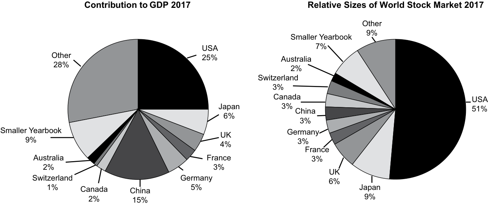
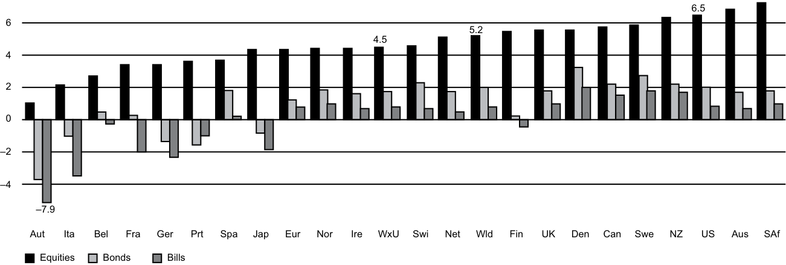
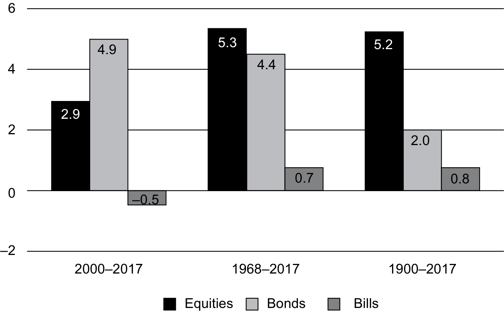
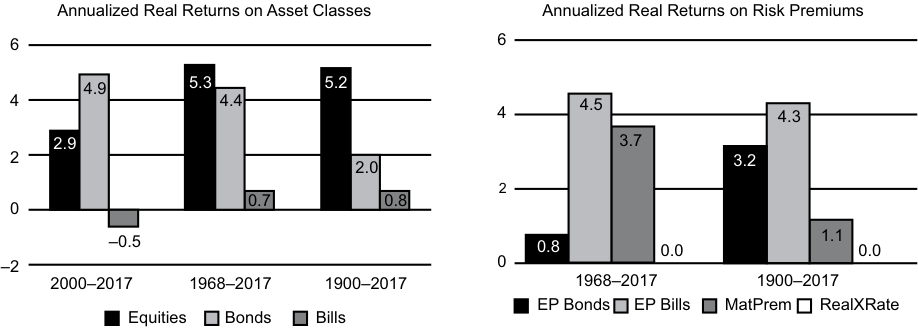
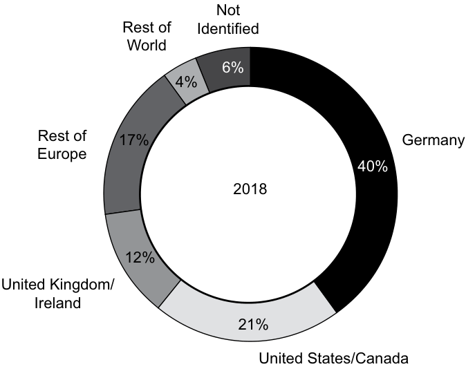
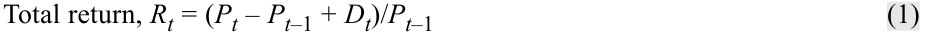
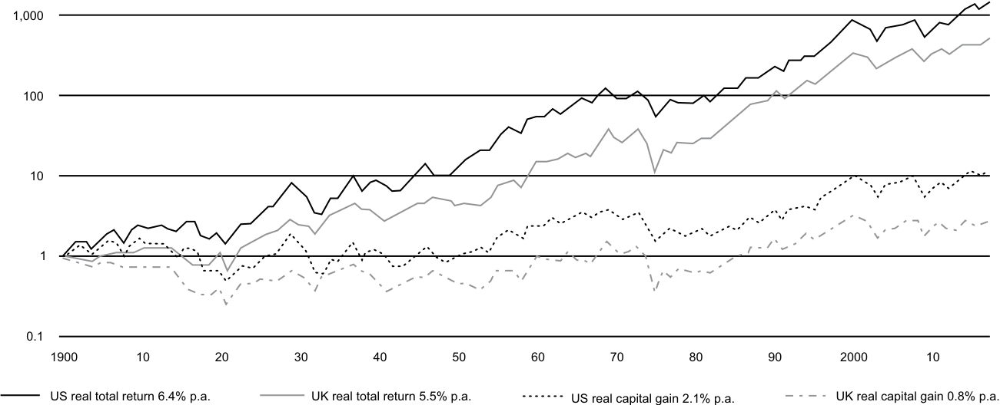
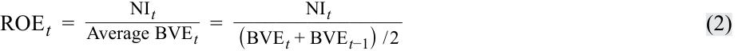
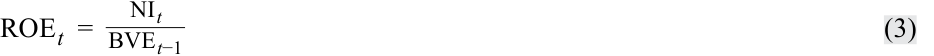
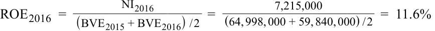

[Toàn Chương] LM04 — Learning Module 4 Overview of Equity Securities
Volume 5: Equity Investments
Learning Module 4 Overview of Equity Securities
Part 1/3: Importance of Equity Securities (PDF Pages 169–181)
Tập 5: Đầu tư Vốn cổ phần (Equity Investments)
Học phần 4: Tổng quan về Chứng khoán Vốn cổ phần (Overview of Equity Securities)
Phần 1/3: Tầm quan trọng của Chứng khoán Vốn cổ phần (Trang PDF 169–181)
L E A R N I N G M O D U L E
H Ọ C P H Ầ N
4
4
Overview of Equity Securities
Tổng quan về Chứng khoán Vốn cổ phần (Overview of Equity Securities)
by Ryan C. Fuhrmann, CFA, and Asjeet S. Lamba, PhD, CFA.
bởi Ryan C. Fuhrmann, CFA, và Asjeet S. Lamba, PhD, CFA.
Ryan C. Fuhrmann, CFA, is at Fuhrmann Capital LLC (USA). Asjeet S. Lamba, PhD, CFA, is at the University of Melbourne (Australia).
Ryan C. Fuhrmann, CFA, làm việc tại Fuhrmann Capital LLC (Hoa Kỳ). Asjeet S. Lamba, PhD, CFA, làm việc tại Đại học Melbourne (Úc).
LEARNING OUTCOMES
MỤC TIÊU HỌC TẬP (LEARNING OUTCOMES)
| Mastery | The candidate should be able to: |
|---|---|
| describe characteristics of types of equity securities | |
| describe differences in voting rights and other ownership characteristics among different equity classes |
|
| compare and contrast public and private equity securities | |
| describe methods for investing in non-domestic equity securities | |
| compare the risk and return characteristics of different types of equity securities i |
|
| explain the role of equity securities in the financing of a company’s assets |
|
| contrast the market value and book value of equity securities | |
| compare a company’s cost of equity, its (accounting) return on equity, and investors’ required rates of return |
| Mức độ thành thạo | Ứng viên cần có khả năng: |
|---|---|
| mô tả các đặc điểm của các loại chứng khoán vốn cổ phần (types of equity securities) | |
| mô tả sự khác biệt về quyền biểu quyết (voting rights) và các đặc điểm sở hữu khác giữa các hạng cổ phần (equity classes) khác nhau | |
| so sánh và đối chiếu chứng khoán vốn cổ phần đại chúng (public equity securities) và chứng khoán vốn cổ phần tư nhân (private equity securities) | |
| mô tả các phương thức đầu tư vào chứng khoán vốn cổ phần nước ngoài (non-domestic equity securities) | |
| so sánh các đặc điểm rủi ro và tỷ suất sinh lợi (risk and return characteristics) của các loại chứng khoán vốn cổ phần khác nhau | |
| giải thích vai trò của chứng khoán vốn cổ phần trong việc tài trợ cho tài sản của một công ty | |
| đối chiếu giá trị thị trường (market value) và giá trị sổ sách (book value) của chứng khoán vốn cổ phần | |
| so sánh chi phí vốn cổ phần (cost of equity) của một công ty, tỷ suất sinh lợi trên vốn chủ sở hữu theo kế toán (accounting return on equity – ROE) của công ty đó, và tỷ suất sinh lợi yêu cầu của nhà đầu tư (investors' required rates of return) |
IMPORTANCE OF EQUITY SECURITIES
TẦM QUAN TRỌNG CỦA CHỨNG KHOÁN VỐN CỔ PHẦN (IMPORTANCE OF EQUITY SECURITIES)
1
1
Equity securities represent ownership claims on a company’s net assets. As an asset class, equity plays a fundamental role in investment analysis and portfolio management because it represents a significant portion of many individual and institutional investment portfolios.
Chứng khoán vốn cổ phần (equity securities) đại diện cho quyền đòi hỏi sở hữu (ownership claims) đối với tài sản thuần (net assets) của một công ty. Với tư cách là một loại tài sản (asset class), vốn cổ phần đóng vai trò nền tảng trong phân tích đầu tư và quản lý danh mục đầu tư vì nó chiếm một tỷ trọng đáng kể trong nhiều danh mục đầu tư của cá nhân và tổ chức.
The study of equity securities is important for many reasons. First, the decision on how much of a client’s portfolio to allocate to equities affects the risk and return characteristics of the entire portfolio. Second, different types of equity securities have different ownership claims on a company’s net assets, which affect their risk and return characteristics in different ways. Finally, variations in the features of equity securities are reflected in their market prices, so it is important to understand the valuation implications of these features.
Việc nghiên cứu chứng khoán vốn cổ phần rất quan trọng vì nhiều lý do. Thứ nhất, quyết định phân bổ bao nhiêu phần trăm danh mục đầu tư của khách hàng vào cổ phiếu sẽ ảnh hưởng đến đặc điểm rủi ro và tỷ suất sinh lợi của toàn bộ danh mục đầu tư. Thứ hai, các loại chứng khoán vốn cổ phần khác nhau có quyền đòi hỏi sở hữu khác nhau đối với tài sản thuần của công ty, điều này ảnh hưởng đến đặc điểm rủi ro và tỷ suất sinh lợi của chúng theo những cách khác nhau. Cuối cùng, sự khác biệt trong các tính năng của chứng khoán vốn cổ phần được phản ánh vào giá thị trường của chúng, vì vậy điều quan trọng là phải hiểu được các hàm ý định giá của những tính năng này.
This reading provides an overview of equity securities and their different features and establishes the background required to analyze and value equity securities in a global context. It addresses the following questions:
Bài đọc này cung cấp cái nhìn tổng quan về chứng khoán vốn cổ phần cùng các tính năng khác nhau của chúng, đồng thời thiết lập nền tảng kiến thức cần thiết để phân tích và định giá chứng khoán vốn cổ phần trong bối cảnh toàn cầu. Bài đọc giải quyết các câu hỏi sau:
-
What distinguishes common shares from preference shares, and what purposes do these securities serve in financing a company’s operations?
-
What are convertible preference shares, and why are they often used to raise equity for unseasoned or highly risky companies?
-
What are private equity securities, and how do they differ from public equity securities?
-
What are depository receipts and their various types, and what is the rationale for investing in them?
-
What are the risk factors involved in investing in equity securities?
-
How do equity securities create company value?
-
What is the relationship between a company’s cost of equity, its return on equity, and investors’ required rate of return?
-
Điều gì phân biệt cổ phần phổ thông (common shares) với cổ phần ưu đãi (preference shares), và các chứng khoán này phục vụ những mục đích gì trong việc tài trợ cho hoạt động của công ty?
-
Cổ phần ưu đãi có thể chuyển đổi (convertible preference shares) là gì, và tại sao chúng thường được sử dụng để huy động vốn cổ phần cho các công ty chưa có bề dày hoạt động (unseasoned) hoặc có rủi ro cao?
-
Chứng khoán vốn cổ phần tư nhân (private equity securities) là gì, và chúng khác với chứng khoán vốn cổ phần đại chúng (public equity securities) như thế nào?
-
Chứng chỉ lưu ký (depository receipts) và các loại hình khác nhau của chúng là gì, và cơ sở hợp lý của việc đầu tư vào chúng là gì?
-
Các yếu tố rủi ro liên quan đến việc đầu tư vào chứng khoán vốn cổ phần là gì?
-
Chứng khoán vốn cổ phần tạo ra giá trị công ty như thế nào?
-
Mối quan hệ giữa chi phí vốn cổ phần của một công ty, tỷ suất sinh lợi trên vốn chủ sở hữu (ROE) của công ty đó, và tỷ suất sinh lợi yêu cầu của nhà đầu tư là gì?
The remainder of this reading is organized as follows. Section 2 provides an overview of global equity markets and their historical performance. Section 3 examines the different types and characteristics of equity securities, and Section 4 outlines the differences between public and private equity securities. Section 5 provides an overview of the various types of equity securities listed and traded in global markets. Section 6 discusses the risk and return characteristics of equity securities. Section 7 examines the role of equity securities in creating company value and the relationship between a company’s cost of equity, its return on equity, and investors’ required rate of return. The final section summarizes the reading.
Phần còn lại của bài đọc này được tổ chức như sau. Phần 2 cung cấp tổng quan về các thị trường vốn cổ phần toàn cầu và hiệu quả hoạt động trong lịch sử của chúng. Phần 3 xem xét các loại hình và đặc điểm khác nhau của chứng khoán vốn cổ phần, và Phần 4 phác thảo những điểm khác biệt giữa chứng khoán vốn cổ phần đại chúng và tư nhân. Phần 5 cung cấp tổng quan về các loại chứng khoán vốn cổ phần khác nhau được niêm yết và giao dịch trên các thị trường toàn cầu. Phần 6 thảo luận về các đặc điểm rủi ro và tỷ suất sinh lợi của chứng khoán vốn cổ phần. Phần 7 xem xét vai trò của chứng khoán vốn cổ phần trong việc tạo ra giá trị công ty cũng như mối quan hệ giữa chi phí vốn cổ phần của công ty, tỷ suất sinh lợi trên vốn chủ sở hữu của công ty, và tỷ suất sinh lợi yêu cầu của nhà đầu tư. Phần cuối cùng tóm tắt bài đọc.
Equity Securities in Global Financial Markets
Chứng khoán Vốn cổ phần trên Thị trường Tài chính Toàn cầu (Equity Securities in Global Financial Markets)
This section highlights the relative importance and performance of equity securities as an asset class. We examine the total market capitalization and trading volume of global equity markets and the prevalence of equity ownership across various geographic regions. We also examine historical returns on equities and compare them to the returns on government bonds and bills.
Phần này làm nổi bật tầm quan trọng tương đối và hiệu quả hoạt động của chứng khoán vốn cổ phần với tư cách là một loại tài sản. Chúng ta xem xét tổng giá trị vốn hóa thị trường (total market capitalization) và khối lượng giao dịch (trading volume) của các thị trường vốn cổ phần toàn cầu cùng mức độ phổ biến của quyền sở hữu cổ phần tại các khu vực địa lý khác nhau. Chúng ta cũng xem xét tỷ suất sinh lợi lịch sử của cổ phiếu và so sánh chúng với tỷ suất sinh lợi của trái phiếu chính phủ (government bonds) và tín phiếu kho bạc (bills).
Exhibit 1 summarizes the contributions of selected countries and geographic regions to global gross domestic product (GDP) and global equity market capitalization. Analysts may examine the relationship between equity market capitalization and GDP as a rough indicator of whether the global equity market (or a specific country’s or region’s equity market) is under, over, or fairly valued, particularly compared to its long-run average.
Bảng minh họa 1 (Exhibit 1) tóm tắt mức đóng góp của các quốc gia và khu vực địa lý được chọn vào tổng sản phẩm quốc nội (gross domestic product – GDP) toàn cầu và vốn hóa thị trường vốn cổ phần toàn cầu. Các nhà phân tích có thể xem xét mối quan hệ giữa vốn hóa thị trường vốn cổ phần và GDP như một chỉ báo sơ bộ để đánh giá liệu thị trường vốn cổ phần toàn cầu (hoặc thị trường vốn cổ phần của một quốc gia hay khu vực cụ thể) đang bị định giá thấp (undervalued), định giá cao (overvalued), hay định giá hợp lý (fairly valued), đặc biệt là khi so sánh với mức trung bình dài hạn của nó.
Exhibit 1 illustrates the significant value that investors attach to publicly traded equities relative to the sum of goods and services produced globally every year. It shows the continued significance, and the potential over-representation, of US equity markets relative to their contribution to global GDP. That is, while US equity markets contribute around 51 percent to the total capitalization of global equity markets, their contribution to the global GDP is only around 25 percent. Following the stock market turmoil in 2008, however, the market capitalization to GDP ratio of the United States fell to 59 percent, which is significantly lower than its long-run average of 79 percent.
Bảng minh họa 1 minh họa giá trị đáng kể mà các nhà đầu tư gắn cho các cổ phiếu được giao dịch công khai so với tổng lượng hàng hóa và dịch vụ được sản xuất trên toàn cầu mỗi năm. Nó cho thấy tầm quan trọng liên tục, và khả năng đại diện vượt mức (over-representation) tiềm tàng, của các thị trường vốn cổ phần Hoa Kỳ so với mức đóng góp của chúng vào GDP toàn cầu. Cụ thể, trong khi các thị trường vốn cổ phần Hoa Kỳ đóng góp khoảng 51% vào tổng vốn hóa của các thị trường vốn cổ phần toàn cầu, mức đóng góp của chúng vào GDP toàn cầu chỉ khoảng 25%. Tuy nhiên, sau biến động hỗn loạn của thị trường chứng khoán vào năm 2008, tỷ lệ vốn hóa thị trường trên GDP (market capitalization to GDP ratio) của Hoa Kỳ đã giảm xuống còn 59%, thấp hơn đáng kể so với mức trung bình dài hạn là 79%.
As equity markets outside the United States develop and become increasingly global, their total capitalization levels are expected to grow closer to their respective world GDP contributions. Therefore, it is important to understand and analyze equity securities from a global perspective.
Khi các thị trường vốn cổ phần bên ngoài Hoa Kỳ phát triển và ngày càng mang tính toàn cầu hóa, mức tổng vốn hóa của chúng được kỳ vọng sẽ tăng lên sát hơn với mức đóng góp tương ứng của chúng vào GDP thế giới. Do đó, điều quan trọng là phải hiểu và phân tích chứng khoán vốn cổ phần từ góc độ toàn cầu.
Exhibit 1: Country and Regional Contributions to Global GDP and Equity Market Capitalization (2017)
Bảng minh họa 1: Đóng góp của Quốc gia và Khu vực vào GDP Toàn cầu và Vốn hóa Thị trường Vốn cổ phần (2017)

Chú thích hình ảnh: - Đóng góp vào GDP năm 2017 (Contribution to GDP 2017): Hoa Kỳ (USA) 25%, Trung Quốc (China) 15%, Nhật Bản (Japan) 6%, Đức (Germany) 5%, Vương quốc Anh (UK) 4%, Pháp (France) 3%, Canada 2%, Úc (Australia) 2%, Thụy Sĩ (Switzerland) 1%, Các nước nhỏ hơn trong Niên giám (Smaller Yearbook) 9%, Khác (Other) 28%. - Quy mô tương đối của Thị trường Chứng khoán Thế giới năm 2017 (Relative Sizes of World Stock Market 2017): Hoa Kỳ (USA) 51%, Nhật Bản (Japan) 9%, Vương quốc Anh (UK) 6%, Pháp (France) 3%, Đức (Germany) 3%, Trung Quốc (China) 3%, Canada 3%, Thụy Sĩ (Switzerland) 3%, Úc (Australia) 2%, Các nước nhỏ hơn trong Niên giám (Smaller Yearbook) 9%, Khác (Other) 7%.
Source : The WorldBank Databank 2017 , and Dimson, Marsh, and Staunton (2018).
Nguồn: Cơ sở dữ liệu Ngân hàng Thế giới (The WorldBank Databank) 2017, và Dimson, Marsh, và Staunton (2018).
Exhibit 2 lists the top 10 equity markets at the end of 2017 based on total market capitalization (in billions of US dollars), trading volume, and the number of listed companies.1 Note that the rankings differ based on the criteria used. For example, the top three markets based on total market capitalization are the NYSE Euronext (US), NASDAQ OMX, and the Japan Exchange Group; however, the top three markets based on total US dollar trading volume are the Nasdaq OMX, NYSE Euronext (US), and the Shenzhen Stock Exchange, respectively.2
Bảng minh họa 2 liệt kê 10 thị trường vốn cổ phần hàng đầu vào cuối năm 2017 dựa trên tổng vốn hóa thị trường (tính bằng tỷ đô la Mỹ), khối lượng giao dịch, và số lượng công ty niêm yết.1 Lưu ý rằng thứ hạng có sự khác nhau tùy thuộc vào tiêu chí được sử dụng. Ví dụ, ba thị trường hàng đầu dựa trên tổng vốn hóa thị trường là NYSE Euronext (Hoa Kỳ), NASDAQ OMX, và Japan Exchange Group; tuy nhiên, ba thị trường hàng đầu dựa trên tổng khối lượng giao dịch tính bằng đô la Mỹ lần lượt là Nasdaq OMX, NYSE Euronext (Hoa Kỳ), và Sở Giao dịch Chứng khoán Thâm Quyến (Shenzhen Stock Exchange).2
Exhibit 2: Equity Markets Ranked by Total Market Capitalization at the End of 2017 (Billions of US Dollars)
Bảng minh họa 2: Các Thị trường Vốn cổ phần Xếp hạng theo Tổng Vốn hóa Thị trường vào Cuối năm 2017 (Tỷ Đô la Mỹ)
| Rank | Name of Market | Total US Dollar Market Capitalization |
Total US Dollar Trad- ing Volume |
Number of Listed Companies |
|---|---|---|---|---|
| 1 | NYSE Euronext (US) | $22,081.4|$16,140.1 | 2,286 | |
| 2 | NASDAQ OMX | $10,039.4|$33,407.1 | 2,949 | |
| 3 | Japan Exchange Groupa | $6,220.0|$6,612.1 | 3,604 | |
| 4 | Shanghai Stock Exchange | $5,084.4|$7,589.3 | 1,396 | |
| 5 | Euronextb | $4,393.0|$1,981.6 | 1,255 | |
| 6 | Hong Kong Exchanges | $4,350.5|$1,958.8 | 2,118 | |
| 7 | Shenzhen Stock Exchanges | $3,617.9|$9,219.7 | 2,089 | |
| 8 | National Stock Exchange of India |
$2,351.5|$1,013.3 | 1,897 |
| Hạng (Rank) | Tên Thị trường (Name of Market) | Tổng Vốn hóa Thị trường bằng Đô la Mỹ (Total US Dollar Market Capitalization) | Tổng Khối lượng Giao dịch bằng Đô la Mỹ (Total US Dollar Trading Volume) | Số lượng Công ty Niêm yết (Number of Listed Companies) |
|---|---|---|---|---|
| 1 | NYSE Euronext (US) | $22.081,4|$16.140,1 | 2.286 | |
| 2 | NASDAQ OMX | $10.039,4|$33.407,1 | 2.949 | |
| 3 | Japan Exchange Groupa | $6.220,0|$6.612,1 | 3.604 | |
| 4 | Shanghai Stock Exchange | $5.084,4|$7.589,3 | 1.396 | |
| 5 | Euronextb | $4.393,0|$1.981,6 | 1.255 | |
| 6 | Hong Kong Exchanges | $4.350,5|$1.958,8 | 2.118 | |
| 7 | Shenzhen Stock Exchanges | $3.617,9|$9.219,7 | 2.089 | |
| 8 | National Stock Exchange of India | $2.351,5|$1.013,3 | 1.897 |
1 The market capitalization of an individual stock is computed as the share price multiplied by the number of shares outstanding. The total market capitalization of an equity market is the sum of the market capitalizations of each individual stock listed on that market. Similarly, the total trading volume of an equity market is computed by value weighting the total trading volume of each individual stock listed on that market. Total dollar trading volume is computed as the average share price multiplied by the number of shares traded. 2 NASDAQ is the acronym for the National Association of Securities Dealers Automated Quotations.
1 Vốn hóa thị trường (market capitalization) của một cổ phiếu riêng lẻ được tính bằng giá cổ phiếu nhân với số lượng cổ phiếu đang lưu hành (number of shares outstanding). Tổng vốn hóa thị trường của một thị trường vốn cổ phần là tổng vốn hóa thị trường của từng cổ phiếu riêng lẻ được niêm yết trên thị trường đó. Tương tự, tổng khối lượng giao dịch của một thị trường vốn cổ phần được tính bằng cách lấy trọng số giá trị (value weighting) đối với tổng khối lượng giao dịch của từng cổ phiếu riêng lẻ được niêm yết trên thị trường đó. Tổng khối lượng giao dịch tính bằng đô la được tính bằng giá cổ phiếu trung bình nhân với số lượng cổ phiếu được giao dịch. 2 NASDAQ là từ viết tắt của Hiệp hội Quốc gia các Nhà kinh doanh Chứng khoán Báo giá Tự động (National Association of Securities Dealers Automated Quotations).
| Rank | Name of Market | Total US Dollar Market Capitalization |
Total US Dollar Trad- ing Volume |
Number of Listed Companies |
|---|---|---|---|---|
| 9 | BSE Limitedc | $2,331.6|$183.0 | 5,616 | |
| 10 | Deutsche Börse | $2,262.2|$1,497.9 | 499 |
| Hạng (Rank) | Tên Thị trường (Name of Market) | Tổng Vốn hóa Thị trường bằng Đô la Mỹ (Total US Dollar Market Capitalization) | Tổng Khối lượng Giao dịch bằng Đô la Mỹ (Total US Dollar Trading Volume) | Số lượng Công ty Niêm yết (Number of Listed Companies) |
|---|---|---|---|---|
| 9 | BSE Limitedc | $2.331,6|$183,0 | 5.616 | |
| 10 | Deutsche Börse | $2.262,2|$1.497,9 | 499 |
Notes:
Ghi chú:
a Japan Exchange Group is the merged entity containing the Tokyo Stock Exchange and Osaka Securities Exchange.
a Japan Exchange Group là pháp nhân hợp nhất bao gồm Sở Giao dịch Chứng khoán Tokyo (Tokyo Stock Exchange) và Sở Giao dịch Chứng khoán Osaka (Osaka Securities Exchange).
b From 2001, includes Netherlands, France, England, Belgium, and Portugal.
b Từ năm 2001, bao gồm Hà Lan, Pháp, Anh, Bỉ, và Bồ Đào Nha.
c Bombay Stock Exchange.
c Sở Giao dịch Chứng khoán Bombay (Bombay Stock Exchange).
Source: Adapted from the World Federation of Exchanges 2017 Report (see http:// www .world -exchanges .org). Note that market capitalization by company is calculated by multiplying its stock price by the number of shares outstanding. The market’s overall capitalization is the aggregate of the market capitalizations of all companies traded on that market. The number of listed companies includes both domestic and foreign companies whose shares trade on these markets.
Nguồn: Hiệu chỉnh từ Báo cáo năm 2017 của Liên đoàn các Sở Giao dịch Chứng khoán Thế giới (World Federation of Exchanges 2017 Report, xem http://www.world-exchanges.org). Lưu ý rằng vốn hóa thị trường theo công ty được tính bằng cách nhân giá cổ phiếu của công ty đó với số lượng cổ phiếu đang lưu hành. Tổng vốn hóa của toàn thị trường là tổng gộp vốn hóa thị trường của tất cả các công ty được giao dịch trên thị trường đó. Số lượng công ty niêm yết bao gồm cả các công ty trong nước và nước ngoài có cổ phần giao dịch trên các thị trường này.
Exhibit 3 compares the real (or inflation-adjusted) compounded returns on government bonds, government bills, and equity securities in 21 countries plus the world index (“Wld”), the world ex-US (“WxU”), and Europe (“Eur”) during the 118 years 1900–2017.3 In real terms, government bonds and bills have essentially kept pace with the inflation rate, earning annualized real returns of less than 2 percent in most countries.4 By comparison, real returns in equity markets have generally been around 3.5 percent per year in most markets—with a world average return of around 5.2 percent and a world average return excluding the United States just under 5 percent. During this period, South Africa and Australia were the best performing markets followed by the United States, New Zealand, and Sweden.
Bảng minh họa 3 so sánh tỷ suất sinh lợi ghép lãi thực (real compounded returns – hay đã điều chỉnh theo lạm phát) của trái phiếu chính phủ, tín phiếu chính phủ, và chứng khoán vốn cổ phần tại 21 quốc gia cùng với chỉ số thế giới (“Wld”), thế giới ngoại trừ Hoa Kỳ (“WxU”), và Châu Âu (“Eur”) trong suốt 118 năm từ 1900–2017.3 Xét theo giá trị thực, trái phiếu và tín phiếu chính phủ về cơ bản đã theo kịp tỷ lệ lạm phát, mang lại tỷ suất sinh lợi thực hàng năm dưới 2% ở hầu hết các quốc gia.4 Để so sánh, tỷ suất sinh lợi thực trên các thị trường vốn cổ phần nhìn chung đạt khoảng 3,5% mỗi năm ở hầu hết các thị trường—với tỷ suất sinh lợi trung bình toàn cầu vào khoảng 5,2% và tỷ suất sinh lợi trung bình toàn cầu ngoại trừ Hoa Kỳ ở mức xấp xỉ dưới 5%. Trong giai đoạn này, Nam Phi và Úc là những thị trường có hiệu quả hoạt động tốt nhất, tiếp theo là Hoa Kỳ, New Zealand, và Thụy Điển.
Exhibit 3: Real Returns on Global Equity Securities, Bonds, and Bills During 1900–2017
Bảng minh họa 3: Tỷ suất Sinh lợi Thực của Chứng khoán Vốn cổ phần, Trái phiếu và Tín phiếu Toàn cầu trong Giai đoạn 1900–2017

Chú thích hình ảnh: Biểu đồ so sánh tỷ suất sinh lợi thực hàng năm (%) của Cổ phiếu (Equities), Trái phiếu (Bonds) và Tín phiếu (Bills) tại các quốc gia và khu vực (Aut, Ita, Bel, Fra, Ger, Prt, Spa, Jap, Eur, Nor, Ire, WxU, Swi, Net, Wld, Fin, UK, Den, Can, Swe, NZ, US, Aus, SAf) trong giai đoạn 1900–2017, với trục tung từ -7,9% đến 6,5%.
Source : Dimson, Marsh, and Staunton (2018).
3 The real return for a security is approximated by taking the nominal return and subtracting the observed inflation rate in that country.
Nguồn: Dimson, Marsh, và Staunton (2018).
4 The exceptions are Austria, Belgium, Finland, France, Germany, Portugal, and Italy—where the average real returns on government bonds and/or bills have been negative. In general, that performance reflects the very high inflation rates in these countries during the World War years.
3 Tỷ suất sinh lợi thực (real return) của một chứng khoán được tính xấp xỉ bằng cách lấy tỷ suất sinh lợi danh nghĩa (nominal return) trừ đi tỷ lệ lạm phát quan sát được tại quốc gia đó. 4 Các trường hợp ngoại lệ là Áo, Bỉ, Phần Lan, Pháp, Đức, Bồ Đào Nha, và Ý—nơi tỷ suất sinh lợi thực trung bình của trái phiếu và/hoặc tín phiếu chính phủ mang giá trị âm. Nhìn chung, kết quả hoạt động đó phản ánh tỷ lệ lạm phát rất cao tại các quốc gia này trong những năm Chiến tranh Thế giới.
Exhibit 4 shows the annualized real returns on major asset classes for the world index over 1900–2017.
Bảng minh họa 4 cho thấy tỷ suất sinh lợi thực hàng năm của các loại tài sản chính đối với chỉ số thế giới trong giai đoạn 1900–2017.
Exhibit 4: Annualized Real Returns on Asset Classes for the World Index, 1900–2017
Bảng minh họa 4: Tỷ suất Sinh lợi Thực Hàng năm của các Loại Tài sản đối với Chỉ số Thế giới, 1900–2017

Chú thích hình ảnh: Biểu đồ cột thể hiện tỷ suất sinh lợi thực hàng năm (%) của Cổ phiếu (Equities), Trái phiếu (Bonds) và Tín phiếu (Bills) trong 3 giai đoạn: - 2000–2017: Cổ phiếu 2,9%, Trái phiếu 4,9%, Tín phiếu -0,5%. - 1968–2017: Cổ phiếu 5,3%, Trái phiếu 4,4%, Tín phiếu 0,7%. - 1900–2017: Cổ phiếu 5,2%, Trái phiếu 2,0%, Tín phiếu 0,8%.
Source : Dimson, Marsh, and Staunton (2018).
Nguồn: Dimson, Marsh, và Staunton (2018).
The volatility in asset market returns is further highlighted in Exhibit 5, which shows the annualized risk premia for equity relative to bonds (EP Bonds), and equity relative to treasury bills (EP Bills). Maturity premium for government bond returns relative to treasury bill returns (Mat Prem) is also shown.
Mức độ biến động (volatility) trong tỷ suất sinh lợi của thị trường tài sản được làm rõ hơn nữa trong Bảng minh họa 5, thể hiện phần bù rủi ro (risk premia) hàng năm của vốn cổ phần so với trái phiếu (EP Bonds), và vốn cổ phần so với tín phiếu kho bạc (EP Bills). Phần bù kỳ hạn (maturity premium) của tỷ suất sinh lợi trái phiếu chính phủ so với tỷ suất sinh lợi tín phiếu kho bạc (Mat Prem) cũng được hiển thị.
These observations and historical data are consistent with the concept that the return on securities is directly related to risk level. That is, equity securities have higher risk levels when compared with government bonds and bills, they earn higher rates of return to compensate investors for these higher risk levels, and they also tend to be more volatile over time.
Những quan sát và dữ liệu lịch sử này nhất quán với khái niệm rằng tỷ suất sinh lợi của chứng khoán có liên quan trực tiếp đến mức độ rủi ro. Nghĩa là, chứng khoán vốn cổ phần có mức độ rủi ro cao hơn khi so sánh với trái phiếu và tín phiếu chính phủ, chúng mang lại tỷ suất sinh lợi cao hơn để đền bù cho các nhà đầu tư vì những mức độ rủi ro cao hơn này, và chúng cũng có xu hướng biến động nhiều hơn theo thời gian.
Exhibit 5: Annualized Real Returns on Asset Classes and Risk Premiums for the World Index since 1900–2017
Bảng minh họa 5: Tỷ suất Sinh lợi Thực Hàng năm của các Loại Tài sản và Phần bù Rủi ro đối với Chỉ số Thế giới từ 1900–2017

Chú thích hình ảnh: - Biểu đồ bên trái – Tỷ suất sinh lợi thực hàng năm của các loại tài sản (Annualized Real Returns on Asset Classes): - 2000–2017: Cổ phiếu (Equities) 2,9%, Trái phiếu (Bonds) 4,9%, Tín phiếu (Bills) -0,5%. - 1968–2017: Cổ phiếu 5,3%, Trái phiếu 4,4%, Tín phiếu 0,7%. - 1900–2017: Cổ phiếu 5,2%, Trái phiếu 2,0%, Tín phiếu 0,8%. - Biểu đồ bên phải – Tỷ suất sinh lợi thực hàng năm của phần bù rủi ro (Annualized Real Returns on Risk Premiums): - 1968–2017: EP Bonds 0,8%, EP Bills 4,5%, MatPrem 3,7%, RealXRate 0,0%. - 1900–2017: EP Bonds 3,2%, EP Bills 4,3%, MatPrem 1,1%, RealXRate 0,0%.
Notes : Equities are total returns, including reinvested dividend income. Bonds are total return, including reinvested coupons, on long-term government bonds. Bills denotes the total return, including any income, from Treasury bills. All returns are adjusted for inflation and are expressed as geometric mean returns. EP bonds denotes the equity risk premium relative to long-term government bonds. EP Bills denotes the equity premium relative to Treasury bills. MatPrem denotes the maturity premium for government bond returns relative to bill returns. RealXRate denotes the real (inflation-adjusted) change in the exchange rate against the US dollar.
Ghi chú: Cổ phiếu (Equities) là tổng tỷ suất sinh lợi, bao gồm thu nhập cổ tức được tái đầu tư. Trái phiếu (Bonds) là tổng tỷ suất sinh lợi, bao gồm tiền lãi coupon được tái đầu tư, của trái phiếu chính phủ dài hạn. Tín phiếu (Bills) biểu thị tổng tỷ suất sinh lợi, bao gồm bất kỳ khoản thu nhập nào, từ tín phiếu Kho bạc. Tất cả tỷ suất sinh lợi đều được điều chỉnh theo lạm phát và được biểu thị dưới dạng tỷ suất sinh lợi trung bình nhân (geometric mean returns). EP Bonds biểu thị phần bù rủi ro vốn cổ phần (equity risk premium) so với trái phiếu chính phủ dài hạn. EP Bills biểu thị phần bù vốn cổ phần so với tín phiếu Kho bạc. MatPrem biểu thị phần bù kỳ hạn (maturity premium) của tỷ suất sinh lợi trái phiếu chính phủ so với tỷ suất sinh lợi tín phiếu. RealXRate biểu thị mức thay đổi thực (đã điều chỉnh theo lạm phát) của tỷ giá hối đoái so với đồng đô la Mỹ.
Source : Dimson, Marsh, and Staunton (2018).
Nguồn: Dimson, Marsh, và Staunton (2018).
Given the high risk levels associated with equity securities, it is reasonable to expect that investors’ tolerance for risk will tend to differ across equity markets. This is illustrated in Exhibit 6, which shows the results of a series of studies conducted by the Australian Securities Exchange on international differences in equity ownership. During the 2004–2014 period, equity ownership as a percentage of the population was lowest in South Korea (averaging 9.0 percent), followed by Germany (14.5 percent) and Sweden (17.7 percent). In contrast, Australia and New Zealand had the highest equity ownership as a percentage of the population (averaging more than 20 percent). In addition, there has been a relative decline in share ownership in several countries over recent years, which is not surprising given the recent overall uncertainty in global economies and the volatility in equity markets that this uncertainty has created.
Với mức độ rủi ro cao gắn liền với chứng khoán vốn cổ phần, thật hợp lý khi kỳ vọng rằng mức độ chấp nhận rủi ro (risk tolerance) của các nhà đầu tư sẽ có xu hướng khác nhau giữa các thị trường vốn cổ phần. Điều này được minh họa trong Bảng minh họa 6, trình bày kết quả của một loạt các nghiên cứu do Sở Giao dịch Chứng khoán Úc (Australian Securities Exchange) thực hiện về sự khác biệt quốc tế trong quyền sở hữu vốn cổ phần. Trong giai đoạn 2004–2014, tỷ lệ sở hữu vốn cổ phần tính theo phần trăm dân số thấp nhất ở Hàn Quốc (trung bình 9,0%), tiếp theo là Đức (14,5%) và Thụy Điển (17,7%). Ngược lại, Úc và New Zealand có tỷ lệ sở hữu vốn cổ phần tính theo phần trăm dân số cao nhất (trung bình hơn 20%). Ngoài ra, đã có sự sụt giảm tương đối về quyền sở hữu cổ phần ở một số quốc gia trong những năm gần đây, điều này không có gì đáng ngạc nhiên trước sự bất định chung gần đây của các nền kinh tế toàn cầu và sự biến động trên các thị trường vốn cổ phần do sự bất định này tạo ra.
Exhibit 6: International Comparisons of Stock Ownership: 2004–20145
Bảng minh họa 6: So sánh Quốc tế về Quyền Sở hữu Cổ phiếu: 2004–20145
| 2004 | 2006 | 2008 | 2010 | 2012 | 2014 | |
|---|---|---|---|---|---|---|
| Australia – Direct/ | 55% | 46% | 41% | 43% | 38% | 36% |
| Indirect | ||||||
| South Korea – Shares | 8 | 7 | 10 | 10 | 10 | N/A |
| Germany – Shares/Funds | 16 | 16 | 14 | 13 | 15 | 13 |
| Sweden – Shares | 22 | 20 | 18 | 17 | 15 | 14 |
| United Kingdom – Shares/Funds |
22 | 20 | 18 | N/A | 17 | N/A |
| New Zealand – Direct | 23 | 26 | N/A | 22 | 23 | 26 |
| 2004 | 2006 | 2008 | 2010 | 2012 | 2014 | |
|---|---|---|---|---|---|---|
| Úc – Trực tiếp/Gián tiếp (Australia – Direct/Indirect) | 55% | 46% | 41% | 43% | 38% | 36% |
| Hàn Quốc – Cổ phần (South Korea – Shares) | 8 | 7 | 10 | 10 | 10 | N/A |
| Đức – Cổ phần/Quỹ (Germany – Shares/Funds) | 16 | 16 | 14 | 13 | 15 | 13 |
| Thụy Điển – Cổ phần (Sweden – Shares) | 22 | 20 | 18 | 17 | 15 | 14 |
| Vương quốc Anh – Cổ phần/Quỹ (United Kingdom – Shares/Funds) | 22 | 20 | 18 | N/A | 17 | N/A |
| New Zealand – Trực tiếp (New Zealand – Direct) | 23 | 26 | N/A | 22 | 23 | 26 |
5 The percentages reported in the exhibit are based on samples of the adult population in each country who own equity securities either directly or indirectly through investment or retirement funds. For example, 36 percent of the adult population of Australia in 2014 (approximately 6.5 million people) owned equity securities either directly or indirectly. As noted in the study, it is not appropriate to make absolute comparisons across countries given the differences in methodology, sampling, timing, and definitions that have been used in different countries. However, trends across different countries can be identified.
5 Các tỷ lệ phần trăm được báo cáo trong bảng minh họa dựa trên mẫu khảo sát dân số trưởng thành ở mỗi quốc gia sở hữu chứng khoán vốn cổ phần trực tiếp hoặc gián tiếp thông qua các quỹ đầu tư hoặc quỹ hưu trí. Ví dụ, 36% dân số trưởng thành của Úc vào năm 2014 (xấp xỉ 6,5 triệu người) sở hữu chứng khoán vốn cổ phần trực tiếp hoặc gián tiếp. Như đã lưu ý trong nghiên cứu, việc đưa ra các so sánh tuyệt đối giữa các quốc gia là không phù hợp do sự khác biệt về phương pháp luận, cách lấy mẫu, thời điểm và các định nghĩa được sử dụng ở các quốc gia khác nhau. Tuy nhiên, có thể xác định được xu hướng qua các quốc gia khác nhau.
Source: Adapted from the 2014 Australian Share Ownership Study conducted by the Australian Securities Exchange (see http:// www .asx .com .au). For Australia and the United States, the data pertain to direct and indirect ownership in equity markets; for other countries, the data pertain to direct ownership in shares and share funds. Data not available in specific years are shown as “N/A.”
Nguồn: Hiệu chỉnh từ Nghiên cứu Quyền sở hữu Cổ phần tại Úc năm 2014 (2014 Australian Share Ownership Study) do Sở Giao dịch Chứng khoán Úc thực hiện (xem http://www.asx.com.au). Đối với Úc và Hoa Kỳ, dữ liệu liên quan đến quyền sở hữu trực tiếp và gián tiếp trên các thị trường vốn cổ phần; đối với các quốc gia khác, dữ liệu liên quan đến quyền sở hữu trực tiếp đối với cổ phần và các quỹ cổ phần. Dữ liệu không có sẵn trong các năm cụ thể được hiển thị là “N/A.”
An important implication from the above discussion is that equity securities represent a key asset class for global investors because of their unique return and risk characteristics. We next examine the various types of equity securities traded on global markets and their salient characteristics.
Một hàm ý quan trọng từ cuộc thảo luận trên là chứng khoán vốn cổ phần đại diện cho một loại tài sản chủ chốt đối với các nhà đầu tư toàn cầu vì các đặc điểm tỷ suất sinh lợi và rủi ro độc đáo của chúng. Tiếp theo, chúng ta sẽ xem xét các loại chứng khoán vốn cổ phần khác nhau được giao dịch trên các thị trường toàn cầu và những đặc điểm nổi bật của chúng.
CHARACTERISTICS OF EQUITY SECURITIES
ĐẶC ĐIỂM CỦA CHỨNG KHOÁN VỐN CỔ PHẦN (CHARACTERISTICS OF EQUITY SECURITIES)
2
2
describe characteristics of types of equity securities
- mô tả các đặc điểm của các loại chứng khoán vốn cổ phần (types of equity securities)
- mô tả sự khác biệt về quyền biểu quyết (voting rights) và các đặc điểm sở hữu khác giữa các hạng cổ phần (equity classes) khác nhau
describe differences in voting rights and other ownership characteristics among different equity classes
Các công ty tài trợ cho hoạt động của mình bằng cách phát hành chứng khoán nợ (debt securities) hoặc chứng khoán vốn cổ phần (equity securities). Một điểm khác biệt cốt lõi giữa các chứng khoán này là nợ là một khoản nợ phải trả (liability) của công ty phát hành, trong khi vốn cổ phần thì không. Điều này có nghĩa là khi một công ty phát hành nợ, công ty có nghĩa vụ theo hợp đồng phải hoàn trả số tiền đã vay (tức là nợ gốc hay mệnh giá của khoản nợ) vào một ngày xác định trong tương lai. Chi phí sử dụng nguồn vốn này được gọi là tiền lãi (interest), khoản tiền mà công ty có nghĩa vụ theo hợp đồng phải thanh toán cho đến khi khoản nợ đáo hạn hoặc được tất toán.
Companies finance their operations by issuing either debt or equity securities. A key difference between these securities is that debt is a liability of the issuing company, whereas equity is not. This means that when a company issues debt, it is contractually obligated to repay the amount it borrows (i.e., the principal or face value of the debt) at a specified future date. The cost of using these funds is called interest, which the company is contractually obligated to pay until the debt matures or is retired.
When the company issues equity securities, it is not contractually obligated to repay the amount it receives from shareholders, nor is it contractually obligated to make periodic payments to shareholders for the use of their funds. Instead, shareholders have a claim on the company’s assets after all liabilities have been paid. Because of this residual claim, equity shareholders are considered to be owners of the company. Investors who purchase equity securities are seeking total return (i.e., capital or price appreciation and dividend income), whereas investors who purchase debt securities (and hold until maturity) are seeking interest income. As a result, equity investors expect the company’s management to act in their best interest by making operating decisions that will maximize the market price of their shares (i.e., shareholder wealth).
Khi công ty phát hành chứng khoán vốn cổ phần, công ty không có nghĩa vụ theo hợp đồng phải hoàn trả số tiền nhận được từ các cổ đông, cũng như không có nghĩa vụ theo hợp đồng phải thực hiện các khoản thanh toán định kỳ cho cổ đông để đổi lấy việc sử dụng vốn của họ. Thay vào đó, các cổ đông có quyền đòi hỏi đối với tài sản của công ty sau khi tất cả các khoản nợ phải trả đã được thanh toán. Do quyền đòi hỏi phần còn lại (residual claim) này, các cổ đông nắm giữ vốn cổ phần được coi là những người chủ sở hữu của công ty. Các nhà đầu tư mua chứng khoán vốn cổ phần tìm kiếm tổng tỷ suất sinh lợi (total return – tức là sự tăng giá vốn hay tăng giá cổ phiếu cùng với thu nhập cổ tức), trong khi các nhà đầu tư mua chứng khoán nợ (và nắm giữ đến khi đáo hạn) tìm kiếm thu nhập lãi vay. Do đó, các nhà đầu tư vốn cổ phần kỳ vọng ban giám đốc công ty hành động vì lợi ích tốt nhất của họ thông qua việc đưa ra các quyết định điều hành nhằm tối đa hóa giá thị trường của cổ phần (tức là tài sản của cổ đông – shareholder wealth).
In addition to common shares (also known as ordinary shares or common stock), companies may also issue preference shares (also known as preferred stock), the other type of equity security. The following sections discuss the different types and characteristics of common and preference securities.
Ngoài cổ phần phổ thông (common shares, còn được gọi là cổ phần thường – ordinary shares hoặc cổ phiếu phổ thông – common stock), các công ty cũng có thể phát hành cổ phần ưu đãi (preference shares, còn được gọi là cổ phiếu ưu đãi – preferred stock), loại chứng khoán vốn cổ phần còn lại. Các phần tiếp theo sẽ thảo luận về các loại hình và đặc điểm khác nhau của chứng khoán vốn cổ phần phổ thông và ưu đãi.
Common Shares
Cổ phần Phổ thông (Common Shares)
Common shares represent an ownership interest in a company and are the predominant type of equity security. As a result, investors share in the operating performance of the company, participate in the governance process through voting rights, and have a claim on the company’s net assets in the case of liquidation. Companies may choose to pay out some, or all, of their net income in the form of cash dividends to common shareholders, but they are not contractually obligated to do so.6
Cổ phần phổ thông (Common shares) đại diện cho lợi ích sở hữu trong một công ty và là loại chứng khoán vốn cổ phần chiếm ưu thế nhất. Theo đó, các nhà đầu tư cùng chia sẻ kết quả hoạt động kinh doanh của công ty, tham gia vào quá trình quản trị thông qua quyền biểu quyết (voting rights), và có quyền đòi hỏi đối với tài sản thuần của công ty trong trường hợp thanh lý (liquidation). Các công ty có thể chọn chi trả một phần hoặc toàn bộ lợi nhuận ròng (net income) của mình dưới dạng cổ tức tiền mặt (cash dividends) cho các cổ đông phổ thông, nhưng họ không có nghĩa vụ theo hợp đồng phải làm như vậy.6
6 It is also possible for companies to pay more than the current period’s net income as dividends. Such payout policies are, however, generally not sustainable in the long run.
6 Các công ty cũng có thể chi trả cổ tức nhiều hơn mức lợi nhuận ròng của kỳ hiện tại. Tuy nhiên, những chính sách chi trả như vậy nhìn chung không bền vững trong dài hạn.
Voting rights provide shareholders with the opportunity to participate in major corporate governance decisions, including the election of its board of directors, the decision to merge with or take over another company, and the selection of outside auditors. Shareholder voting generally takes place during a company’s annual meeting. As a result of geographic limitations and the large number of shareholders, it is often not feasible for shareholders to attend the annual meeting in person. For this reason, shareholders may vote by proxy , which allows a designated party—such as another shareholder, a shareholder representative, or management—to vote on the shareholders’ behalf.
Quyền biểu quyết mang lại cho các cổ đông cơ hội tham gia vào các quyết định quản trị doanh nghiệp lớn, bao gồm việc bầu hội đồng quản trị (board of directors), quyết định sáp nhập hoặc thâu tóm một công ty khác, và lựa chọn kiểm toán viên độc lập bên ngoài. Việc biểu quyết của cổ đông thường diễn ra trong cuộc họp đại hội đồng cổ đông thường niên (annual meeting) của công ty. Do những hạn chế về mặt địa lý và số lượng cổ đông lớn, việc các cổ đông trực tiếp tham dự cuộc họp thường niên thường không khả thi. Vì lý do này, các cổ đông có thể biểu quyết thông qua ủy quyền (vote by proxy), cho phép một bên được chỉ định—chẳng hạn như một cổ đông khác, một đại diện cổ đông, hoặc ban giám đốc—thay mặt cổ đông thực hiện biểu quyết.
Regular shareholder voting, where each share represents one vote, is referred to as statutory voting . Although it is the common method of voting, it is not always the most appropriate one to use to elect a board of directors. To better serve shareholders who own a small number of shares, cumulative voting is often used. Cumulative voting allows shareholders to direct their total voting rights to specific candidates, as opposed to having to allocate their voting rights evenly among all candidates. Total voting rights are based on the number of shares owned multiplied by the number of board directors being elected. For example, under cumulative voting, if four board directors are to be elected, a shareholder who owns 100 shares is entitled to 400 votes and can either cast all 400 votes in favor of a single candidate or spread them across the candidates in any proportion. In contrast, under statutory voting, a shareholder would be able to cast only a maximum of 100 votes for each candidate.
Hình thức biểu quyết thông thường của cổ đông, trong đó mỗi cổ phần đại diện cho một phiếu bầu, được gọi là biểu quyết theo luật định (statutory voting). Mặc dù đây là phương thức biểu quyết phổ biến, nhưng nó không phải lúc nào cũng là phương thức phù hợp nhất để bầu hội đồng quản trị. Để phục vụ tốt hơn cho những cổ đông sở hữu số lượng cổ phần nhỏ, biểu quyết dồn phiếu (cumulative voting) thường được sử dụng. Biểu quyết dồn phiếu cho phép cổ đông dồn tổng số quyền biểu quyết của mình cho các ứng viên cụ thể, thay vì phải phân bổ đều quyền biểu quyết cho tất cả các ứng viên. Tổng quyền biểu quyết dựa trên số lượng cổ phần sở hữu nhân với số lượng thành viên hội đồng quản trị được bầu. Ví dụ, theo phương thức biểu quyết dồn phiếu, nếu có 4 thành viên hội đồng quản trị được bầu, một cổ đông sở hữu 100 cổ phần sẽ có 400 phiếu bầu và có thể dồn cả 400 phiếu bầu cho một ứng viên duy nhất hoặc phân bổ chúng cho các ứng viên theo bất kỳ tỷ lệ nào. Ngược lại, theo phương thức biểu quyết theo luật định, cổ đông đó sẽ chỉ có thể bỏ tối đa 100 phiếu bầu cho mỗi ứng viên.
The key benefit to cumulative voting is that it allows shareholders with a small number of shares to apply all of their votes to one candidate, thus providing the opportunity for a higher level of representation on the board than would be allowed under statutory voting.
Lợi ích cốt lõi của biểu quyết dồn phiếu là cho phép các cổ đông nắm giữ số lượng cổ phần nhỏ áp dụng toàn bộ số phiếu bầu của mình cho một ứng viên, qua đó mang lại cơ hội có được mức độ đại diện cao hơn trong hội đồng quản trị so với những gì được phép theo phương thức biểu quyết theo luật định.
Exhibit 7 describes the rights of Viacom Corporation’s shareholders. In this case, a dual-share arrangement allows the founding chairman and his family to control more than 70 percent of the voting rights through the ownership of Class A shares. This arrangement gives them the ability to exert control over the board of director election process, corporate decision making, and other important aspects of managing the company. A cumulative voting arrangement for any minority shareholders of Class A shares would improve their board representation.
Bảng minh họa 7 mô tả các quyền của cổ đông Tập đoàn Viacom (Viacom Corporation). Trong trường hợp này, cấu trúc cổ phần kép (dual-share arrangement) cho phép vị chủ tịch sáng lập và gia đình ông kiểm soát hơn 70% quyền biểu quyết thông qua việc sở hữu cổ phần Hạng A (Class A shares). Cấu trúc này trao cho họ khả năng thực thi quyền kiểm soát đối với quá trình bầu cử hội đồng quản trị, việc ra quyết định của công ty, và các khía cạnh quan trọng khác trong việc điều hành công ty. Một thỏa thuận biểu quyết dồn phiếu dành cho bất kỳ cổ đông thiểu số nào nắm giữ cổ phần Hạng A sẽ giúp cải thiện mức độ đại diện của họ trong hội đồng quản trị.
Exhibit 7: Share Class Arrangements at Viacom Corporation7
Bảng minh họa 7: Thỏa thuận Hạng Cổ phần tại Tập đoàn Viacom7
Viacom has two classes of common stock: Class A, which is the voting stock, and Class B, which is the non-voting stock. There is no difference between the two classes except for voting rights; they generally trade within a close price range of each other. There are, however, far more shares of Class B outstanding, so most of the trading occurs in that class.
Viacom có hai hạng cổ phiếu phổ thông: Hạng A (Class A), là cổ phiếu có quyền biểu quyết (voting stock), và Hạng B (Class B), là cổ phiếu không có quyền biểu quyết (non-voting stock). Không có sự khác biệt nào giữa hai hạng cổ phiếu này ngoại trừ quyền biểu quyết; chúng thường giao dịch trong một biên độ giá sát nhau. Tuy nhiên, có nhiều cổ phần Hạng B đang lưu hành hơn hẳn, nên hầu hết các giao dịch diễn ra ở hạng cổ phần này.
-
Voting Rights —Holders of Class A common stock are entitled to one vote per share. Holders of Class B common stock do not have any voting rights, except as required by Delaware law. Generally, all matters to be voted on by Viacom stockholders must be approved by a majority of the aggregate voting power of the shares of Class A common stock present in person or represented by proxy, except as required by Delaware law.
-
Dividends —Stockholders of Class A common stock and Class B common stock will share ratably in any cash dividend declared by the Board of Directors, subject to any preferential rights of any
-
Quyền biểu quyết (Voting Rights) — Người nắm giữ cổ phiếu phổ thông Hạng A được hưởng một phiếu bầu trên mỗi cổ phần. Người nắm giữ cổ phiếu phổ thông Hạng B không có bất kỳ quyền biểu quyết nào, ngoại trừ trường hợp luật pháp bang Delaware yêu cầu. Nhìn chung, tất cả các vấn đề cần được cổ đông Viacom biểu quyết phải được thông qua bởi đa số tổng quyền biểu quyết của các cổ phần phổ thông Hạng A có mặt trực tiếp hoặc được đại diện theo ủy quyền, ngoại trừ trường hợp luật pháp bang Delaware yêu cầu.
-
Cổ tức (Dividends) — Các cổ đông nắm giữ cổ phiếu phổ thông Hạng A và cổ phiếu phổ thông Hạng B sẽ được chia sẻ theo tỷ lệ tương ứng (share ratably) đối với bất kỳ khoản cổ tức tiền mặt nào do Hội đồng Quản trị công bố, tùy thuộc vào bất kỳ quyền ưu đãi nào của bất kỳ
7 This information has been adapted from Viacom’s investor relations website and its 10-K filing with the US Securities and Exchange Commission; see www .viacom .com.
7 Thông tin này được hiệu chỉnh từ trang web quan hệ nhà đầu tư của Viacom và hồ sơ 10-K nộp cho Ủy ban Chứng khoán và Giao dịch Hoa Kỳ (SEC); xem www.viacom.com.
outstanding preferred stock. Viacom does not currently pay a cash dividend, and any decision to pay a cash dividend in the future will be at the discretion of the Board of Directors and will depend on many factors.
cổ phiếu ưu đãi đang lưu hành nào. Viacom hiện không trả cổ tức tiền mặt, và bất kỳ quyết định trả cổ tức tiền mặt nào trong tương lai sẽ tùy thuộc vào quyết định của Hội đồng Quản trị và phụ thuộc vào nhiều yếu tố.
-
Conversion —So long as there are 5,000 shares of Class A common stock outstanding, each share of Class A common stock will be convertible at the option of the holder of such share into one share of Class B common stock.
-
Liquidation Rights —In the event of liquidation, dissolution, or winding-up of Viacom, all stockholders of common stock, regardless of class, will be entitled to share ratably in any assets available for distributions to stockholders of shares of Viacom common stock subject to the preferential rights of any outstanding preferred stock.
-
Split, Subdivision, or Combination —In the event of a split, subdivision, or combination of the outstanding shares of Class A common stock or Class B common stock, the outstanding shares of the other class of common stock will be divided proportionally.
-
Preemptive Rights —Shares of Class A common stock and Class B common stock do not entitle a stockholder to any preemptive rights enabling a stockholder to subscribe for or receive shares of stock of any class or any other securities convertible into shares of stock of any class of Viacom.
-
Chuyển đổi (Conversion) — Chừng nào còn 5.000 cổ phần phổ thông Hạng A đang lưu hành, mỗi cổ phần phổ thông Hạng A sẽ có thể được chuyển đổi theo quyền chọn của người nắm giữ cổ phần đó thành một cổ phần phổ thông Hạng B.
-
Quyền khi thanh lý (Liquidation Rights) — Trong trường hợp thanh lý, giải thể, hoặc chấm dứt hoạt động của Viacom, tất cả các cổ đông nắm giữ cổ phiếu phổ thông, bất kể thuộc hạng nào, sẽ có quyền chia sẻ theo tỷ lệ tương ứng đối với bất kỳ tài sản nào sẵn có để phân phối cho các cổ đông nắm giữ cổ phần phổ thông của Viacom, tùy thuộc vào các quyền ưu đãi của bất kỳ cổ phiếu ưu đãi đang lưu hành nào.
-
Chia tách, Phân nhỏ, hoặc Gộp cổ phần (Split, Subdivision, or Combination) — Trong trường hợp chia tách, phân nhỏ, hoặc gộp các cổ phần đang lưu hành của cổ phiếu phổ thông Hạng A hoặc cổ phiếu phổ thông Hạng B, các cổ phần đang lưu hành của hạng cổ phiếu phổ thông còn lại sẽ được phân chia theo tỷ lệ tương ứng.
-
Quyền mua trước (Preemptive Rights) — Cổ phần phổ thông Hạng A và cổ phần phổ thông Hạng B không trao cho cổ đông bất kỳ quyền mua trước nào cho phép cổ đông đăng ký mua hoặc nhận cổ phần thuộc bất kỳ hạng cổ phiếu nào hoặc bất kỳ chứng khoán nào khác có thể chuyển đổi thành cổ phần thuộc bất kỳ hạng cổ phiếu nào của Viacom.
As seen in Exhibit 7, companies can issue different classes of common shares (Class A and Class B shares), with each class offering different ownership rights.8 For example, as shown in Exhibit 8, the Ford Motor Company has Class A shares (“Common Stock”), which are owned by the investing public. It also has Class B shares, which are owned only by the Ford family. The exhibit contains an excerpt from Ford’s 2017 Annual Report (p. 144). Class A shareholders have 60 percent voting rights, whereas Class B shareholders have 40 percent. In the case of liquidation, however, Class B shareholders will not only receive the first US$0.50 per share that is available for distribution (as will Class A shareholders), but they will also receive the next US$1.00 per share that is available for distribution before Class A shareholders receive anything else. Thus, Class B shareholders have an opportunity to receive a larger proportion of distributions upon liquidation than do Class A shareholders.9
Như đã thấy trong Bảng minh họa 7, các công ty có thể phát hành các hạng cổ phần phổ thông khác nhau (cổ phần Hạng A và Hạng B), với mỗi hạng cổ phần mang lại các quyền sở hữu khác nhau.8 Ví dụ, như được thể hiện trong Bảng minh họa 8, Công ty Ford Motor (Ford Motor Company) có cổ phần Hạng A (“Cổ phiếu Phổ thông” – Common Stock), thuộc sở hữu của công chúng đầu tư. Công ty cũng có cổ phần Hạng B, chỉ thuộc sở hữu của gia đình Ford. Bảng minh họa chứa một đoạn trích từ Báo cáo Thường niên năm 2017 của Ford (trang 144). Cổ đông Hạng A có 60% quyền biểu quyết, trong khi cổ đông Hạng B có 40%. Tuy nhiên, trong trường hợp thanh lý, các cổ đông Hạng B sẽ không chỉ nhận được 0,50 đô la Mỹ đầu tiên trên mỗi cổ phần sẵn có để phân phối (giống như các cổ đông Hạng A), mà họ còn nhận được 1,00 đô la Mỹ tiếp theo trên mỗi cổ phần sẵn có để phân phối trước khi các cổ đông Hạng A nhận được thêm bất kỳ khoản nào khác. Như vậy, cổ đông Hạng B có cơ hội nhận được tỷ trọng phân phối tài sản khi thanh lý lớn hơn so với cổ đông Hạng A.9
Exhibit 8: Share Class Arrangements at Ford Motor Company10
Bảng minh họa 8: Thỏa thuận Hạng Cổ phần tại Công ty Ford Motor10
NOTE 21. CAPITAL STOCK AND AMOUNTS PER SHARE
THUYẾT MINH 21. VỐN CỔ PHẦN VÀ CÁC KHOẢN TÍNH TRÊN MỖI CỔ PHẦN (NOTE 21. CAPITAL STOCK AND AMOUNTS PER SHARE)
All general voting power is vested in the holders of Common Stock and Class B Stock. Holders of our Common Stock have 60% of the general voting power and holders of our Class B Stock are entitled to such number of votes per share as
8 In some countries, including the United States, companies can issue different classes of shares, with Class A shares being the most common. The role and function of different classes of shares is described in more detail in Exhibit 8.
Toàn bộ quyền biểu quyết chung được trao cho những người nắm giữ Cổ phiếu Phổ thông (Common Stock) và Cổ phiếu Hạng B (Class B Stock). Những người nắm giữ Cổ phiếu Phổ thông của chúng tôi có 60% quyền biểu quyết chung và những người nắm giữ Cổ phiếu Hạng B của chúng tôi được hưởng số phiếu bầu trên mỗi cổ phần sao cho
9 For example, if US$2.00 per share is available for distribution, the Common Stock (Class A) shareholders will receive US$0.50 per share, while the Class B shareholders will receive US$1.50 per share. However, if there is US$3.50 per share available for distribution, the Common Stock shareholders will receive a total of US$1.50 per share and the Class B shareholders will receive a total of US$2.00 per share.
10 Extracted from Ford Motor Company’s 2017 Annual Report (http:// s22 .q4cdn .com/ 857684434/ files/ doc _financials/ 2017/ annual/ Final -Annual -Report -2017 .pdf).
8 Tại một số quốc gia, bao gồm cả Hoa Kỳ, các công ty có thể phát hành các hạng cổ phần khác nhau, trong đó cổ phần Hạng A là phổ biến nhất. Vai trò và chức năng của các hạng cổ phần khác nhau được mô tả chi tiết hơn trong Bảng minh họa 8. 9 Ví dụ, nếu có 2,00 đô la Mỹ trên mỗi cổ phần sẵn có để phân phối, các cổ đông Cổ phiếu Phổ thông (Hạng A) sẽ nhận được 0,50 đô la Mỹ trên mỗi cổ phần, trong khi các cổ đông Hạng B sẽ nhận được 1,50 đô la Mỹ trên mỗi cổ phần. Tuy nhiên, nếu có 3,50 đô la Mỹ trên mỗi cổ phần sẵn có để phân phối, các cổ đông Cổ phiếu Phổ thông sẽ nhận được tổng cộng 1,50 đô la Mỹ trên mỗi cổ phần và các cổ đông Hạng B sẽ nhận được tổng cộng 2,00 đô la Mỹ trên mỗi cổ phần. 10 Trích xuất từ Báo cáo Thường niên năm 2017 của Công ty Ford Motor (http://s22.q4cdn.com/857684434/files/doc_financials/2017/annual/Final-Annual-Report-2017.pdf).
will give them the remaining 40%. Shares of Common Stock and Class B Stock share equally in dividends when and as paid, with stock dividends payable in shares of stock of the class held.
mang lại cho họ 40% còn lại. Các cổ phần của Cổ phiếu Phổ thông và Cổ phiếu Hạng B được chia sẻ ngang nhau đối với cổ tức khi và vào lúc được chi trả, với cổ tức bằng cổ phiếu (stock dividends) được trả bằng các cổ phần thuộc chính hạng cổ phiếu đang nắm giữ.
If liquidated, each share of Common Stock is entitled to the first $0.50 available for distribution to holders of Common Stock and Class B Stock, each share of Class B Stock is entitled to the next $1.00 so available, each share of Common Stock is entitled to the next $0.50 so available, and each share of Common and Class B Stock is entitled to an equal amount thereafter.
Nếu bị thanh lý, mỗi cổ phần Cổ phiếu Phổ thông được hưởng 0,50 đô la đầu tiên sẵn có để phân phối cho những người nắm giữ Cổ phiếu Phổ thông và Cổ phiếu Hạng B, mỗi cổ phần Cổ phiếu Hạng B được hưởng 1,00 đô la tiếp theo sẵn có, mỗi cổ phần Cổ phiếu Phổ thông được hưởng 0,50 đô la tiếp theo sẵn có, và mỗi cổ phần Cổ phiếu Phổ thông và Cổ phiếu Hạng B được hưởng một khoản ngang nhau sau đó.
Preference Shares
Cổ phần Ưu đãi (Preference Shares)
Preference shares (or preferred stock) rank above common shares with respect to the payment of dividends and the distribution of the company’s net assets upon liquidation.11 However, preference shareholders generally do not share in the operating performance of the company and do not have any voting rights, unless explicitly allowed for at issuance. Preference shares have characteristics of both debt securities and common shares. Similar to the interest payments on debt securities, the dividends on preference shares are fixed and are generally higher than the dividends on common shares. However, unlike interest payments, preference dividends are not contractual obligations of the company. Similar to common shares, preference shares can be perpetual (i.e., no fixed maturity date), can pay dividends indefinitely, and can be callable or putable.
Cổ phần ưu đãi (Preference shares) (hay cổ phiếu ưu đãi – preferred stock) được xếp hạng cao hơn cổ phần phổ thông xét về mặt chi trả cổ tức và phân phối tài sản thuần của công ty khi thanh lý.11 Tuy nhiên, các cổ đông ưu đãi nhìn chung không được chia sẻ kết quả hoạt động kinh doanh của công ty và không có bất kỳ quyền biểu quyết nào, trừ khi được cho phép một cách rõ ràng khi phát hành. Cổ phần ưu đãi mang đặc điểm của cả chứng khoán nợ và cổ phần phổ thông. Tương tự như các khoản thanh toán lãi vay của chứng khoán nợ, cổ tức của cổ phần ưu đãi là cố định và nhìn chung cao hơn cổ tức của cổ phần phổ thông. Tuy nhiên, không giống như các khoản thanh toán lãi vay, cổ tức ưu đãi không phải là nghĩa vụ theo hợp đồng của công ty. Tương tự như cổ phần phổ thông, cổ phần ưu đãi có thể là vĩnh viễn (perpetual – tức là không có ngày đáo hạn cố định), có thể trả cổ tức vô thời hạn, và có thể kèm quyền mua lại (callable) hoặc kèm quyền bán lại (putable).
Exhibit 9 provides an example of callable preference shares issued by the GDL Fund to raise capital to redeem the remaining outstanding Series B Preferred shares. In this case, the purchaser of the shares will receive an ongoing dividend from the GDL Fund. If the GDL Fund chooses to buy back the shares, it must do so at the $50 a share liquidation preference price. The purchasers of the shares also have the right to put back the shares to GDL at the $50 a share price.
Bảng minh họa 9 cung cấp một ví dụ về cổ phần ưu đãi kèm quyền mua lại (callable preference shares) do Quỹ GDL (GDL Fund) phát hành nhằm huy động vốn để mua lại các Cổ phần Ưu đãi Loạt B (Series B Preferred shares) đang lưu hành còn lại. Trong trường hợp này, người mua cổ phần sẽ nhận được khoản cổ tức định kỳ từ Quỹ GDL. Nếu Quỹ GDL chọn mua lại số cổ phần này, quỹ phải thực hiện ở mức giá ưu đãi thanh lý (liquidation preference price) là 50 đô la một cổ phần. Người mua cổ phần cũng có quyền bán lại (put back) số cổ phần đó cho GDL ở mức giá 50 đô la một cổ phần.
Exhibit 9: Callable Stock offering by the GDL Fund12
Bảng minh họa 9: Đợt chào bán Cổ phiếu Kèm quyền mua lại của Quỹ GDL12
RYE, NY—March 26, 2018—The GDL Fund (NYSE:GDL) (the “Fund”) is pleased to announce the completion of a rights offering (the “Offering”) in which the Fund issued 2,624,025 Series C Cumulative Puttable and Callable Preferred Shares (the “Series C Preferred”), totaling $131,201,250. Pursuant to the Offering, the Fund issued one non-transferable right (a “Right”) for each outstanding Series B Cumulative Puttable and Callable Preferred Share (the “Series B Preferred”) of the Fund to Series B Preferred shareholders of record as of February 14, 2018. Holders of Rights were entitled to purchase the Series C Preferred with any combination of cash or surrender of the Series B Preferred at liquidation preference. Therefore, one Right plus $50.00, or one Right plus one share of Series B Preferred with a liquidation value of $50.00 per share, was required to purchase each share of the Series C Preferred. The Offering expired at 5:00 PM Eastern Time on March 20, 2018.
11 Preference shares have a lower priority than debt in the case of liquidation. That is, debt holders have a higher claim on a firm’s assets in the event of liquidation and will receive what is owed to them first, followed by preference shareholders and then common shareholders.
RYE, NY—Ngày 26 tháng 3 năm 2018—Quỹ GDL (NYSE:GDL) (“Quỹ”) vui mừng thông báo về việc hoàn tất đợt chào bán quyền mua cổ phần (“Đợt chào bán” – the “Offering”), trong đó Quỹ đã phát hành 2.624.025 Cổ phần Ưu đãi Tích lũy Kèm quyền bán lại và Kèm quyền mua lại Loạt C (Series C Cumulative Puttable and Callable Preferred Shares – “Cổ phần Ưu đãi Loạt C”), với tổng giá trị là 131.201.250 đô la. Theo Đợt chào bán này, Quỹ đã phát hành một quyền mua không thể chuyển nhượng (“Quyền mua” – a “Right”) cho mỗi Cổ phần Ưu đãi Tích lũy Kèm quyền bán lại và Kèm quyền mua lại Loạt B đang lưu hành (“Cổ phần Ưu đãi Loạt B”) của Quỹ cho các cổ đông nắm giữ Cổ phần Ưu đãi Loạt B có tên trong danh sách chốt quyền tính đến ngày 14 tháng 2 năm 2018. Những người nắm giữ Quyền mua có quyền mua Cổ phần Ưu đãi Loạt C bằng bất kỳ sự kết hợp nào giữa tiền mặt hoặc nộp lại Cổ phần Ưu đãi Loạt B theo mức giá ưu đãi thanh lý. Do đó, cần có một Quyền mua cộng với 50,00 đô la, hoặc một Quyền mua cộng với một cổ phần thuộc Cổ phần Ưu đãi Loạt B có giá trị thanh lý là 50,00 đô la mỗi cổ phần, để mua mỗi cổ phần thuộc Cổ phần Ưu đãi Loạt C. Đợt chào bán đã hết hạn vào lúc 5:00 chiều theo Giờ Miền Đông vào ngày 20 tháng 3 năm 2018.
12 https:// www .businesswire .com/ news/ home/ 20180326005609/ en/ GDL -Fund -Successfully -Completes -Offering -Issues -131
11 Cổ phần ưu đãi có mức độ ưu tiên thấp hơn nợ trong trường hợp thanh lý. Nghĩa là, các chủ nợ có quyền đòi hỏi cao hơn đối với tài sản của công ty trong trường hợp thanh lý và sẽ nhận được những gì công ty nợ họ trước tiên, tiếp theo là các cổ đông ưu đãi và sau đó mới đến các cổ đông phổ thông. 12 https://www.businesswire.com/news/home/20180326005609/en/GDL-Fund-Successfully-Completes-Offering-Issues-131
Dividends on preference shares can be cumulative, non-cumulative, participating, non-participating, or some combination thereof (i.e., cumulative participating, cumulative non-participating, non-cumulative participating, non-cumulative non-participating).
Cổ tức của cổ phần ưu đãi có thể là tích lũy (cumulative), không tích lũy (non-cumulative), tham dự chia phần (participating), không tham dự chia phần (non-participating), hoặc một sự kết hợp nào đó giữa các tính chất này (tức là tích lũy có tham dự, tích lũy không tham dự, không tích lũy có tham dự, không tích lũy không tham dự).
Dividends on cumulative preference shares accrue so that if the company decides not to pay a dividend in one or more periods, the unpaid dividends accrue and must be paid in full before dividends on common shares can be paid. In contrast, non-cumulative preference shares have no such provision. This means that any dividends that are not paid in the current or subsequent periods are forfeited permanently and are not accrued over time to be paid at a later date. However, the company is still not permitted to pay any dividends to common shareholders in the current period unless preferred dividends have been paid first.
Cổ tức của cổ phần ưu đãi tích lũy (cumulative preference shares) được cộng dồn sao cho nếu công ty quyết định không trả cổ tức trong một hoặc nhiều kỳ, số cổ tức chưa thanh toán đó sẽ được tích lũy lại và phải được thanh toán đầy đủ trước khi có thể trả cổ tức cho cổ phần phổ thông. Ngược lại, cổ phần ưu đãi không tích lũy (non-cumulative preference shares) không có điều khoản như vậy. Điều này có nghĩa là bất kỳ khoản cổ tức nào không được chi trả trong kỳ hiện tại hoặc các kỳ tiếp theo sẽ bị mất vĩnh viễn và không được tích lũy theo thời gian để thanh toán vào một ngày sau đó. Tuy nhiên, công ty vẫn không được phép chi trả bất kỳ khoản cổ tức nào cho các cổ đông phổ thông trong kỳ hiện tại trừ khi cổ tức ưu đãi đã được thanh toán trước.
Participating preference shares entitle the shareholders to receive the standard preferred dividend plus the opportunity to receive an additional dividend if the company’s profits exceed a pre-specified level. In addition, participating preference shares can also contain provisions that entitle shareholders to an additional distribution of the company’s assets upon liquidation, above the par (or face) value of the preference shares. Non-participating preference shares do not allow shareholders to share in the profits of the company. Instead, shareholders are entitled to receive only a fixed dividend payment and the par value of the shares in the event of liquidation. The use of participating preference shares is much more common for smaller, riskier companies where the possibility of future liquidation is more of a concern to investors.
Cổ phần ưu đãi tham dự (Participating preference shares) trao cho cổ đông quyền nhận mức cổ tức ưu đãi tiêu chuẩn cộng với cơ hội nhận thêm một khoản cổ tức bổ sung nếu lợi nhuận của công ty vượt quá một mức được quy định trước. Ngoài ra, cổ phần ưu đãi tham dự cũng có thể bao gồm các điều khoản trao cho cổ đông quyền nhận thêm một khoản phân phối tài sản của công ty khi thanh lý, vượt trên mệnh giá (par/face value) của cổ phần ưu đãi. Cổ phần ưu đãi không tham dự (Non-participating preference shares) không cho phép cổ đông chia sẻ lợi nhuận của công ty. Thay vào đó, cổ đông chỉ có quyền nhận một khoản thanh toán cổ tức cố định và mệnh giá của cổ phần trong trường hợp thanh lý. Việc sử dụng cổ phần ưu đãi tham dự phổ biến hơn nhiều đối với các công ty nhỏ hơn, rủi ro hơn, nơi khả năng thanh lý trong tương lai là mối quan tâm lớn hơn đối với các nhà đầu tư.
Preference shares can also be convertible. Convertible preference shares entitle shareholders to convert their shares into a specified number of common shares. This conversion ratio is determined at issuance. Convertible preference shares have the following advantages:
Cổ phần ưu đãi cũng có thể có tính năng chuyển đổi. Cổ phần ưu đãi có thể chuyển đổi (Convertible preference shares) trao cho cổ đông quyền chuyển đổi cổ phần của họ thành một số lượng cổ phần phổ thông xác định. Tỷ lệ chuyển đổi (conversion ratio) này được xác định vào lúc phát hành. Cổ phần ưu đãi có thể chuyển đổi có những ưu điểm sau:
-
They allow investors to earn a higher dividend than if they invested in the company’s common shares.
-
They allow investors the opportunity to share in the profits of the company.
-
They allow investors to benefit from a rise in the price of the common shares through the conversion option.
-
Their price is less volatile than the underlying common shares because the dividend payments are known and more stable.
-
Chúng cho phép nhà đầu tư hưởng mức cổ tức cao hơn so với khi họ đầu tư vào cổ phần phổ thông của công ty.
-
Chúng mang lại cho nhà đầu tư cơ hội chia sẻ lợi nhuận của công ty.
-
Chúng cho phép nhà đầu tư hưởng lợi từ sự tăng giá của cổ phần phổ thông thông qua quyền chọn chuyển đổi (conversion option).
-
Giá của chúng ít biến động hơn so với cổ phần phổ thông cơ sở vì các khoản thanh toán cổ tức đã được biết trước và ổn định hơn.
As a result, the use of convertible preference shares is a popular financing option in venture capital and private equity transactions in which the issuing companies are considered to be of higher risk and when it may be years before the issuing company “goes public” (i.e., issues common shares to the public).
Do đó, việc sử dụng cổ phần ưu đãi có thể chuyển đổi là một phương án tài trợ phổ biến trong các giao dịch vốn đầu tư mạo hiểm (venture capital) và vốn cổ phần tư nhân (private equity), trong đó các công ty phát hành được coi là có rủi ro cao hơn và có thể phải mất nhiều năm trước khi công ty phát hành “ra công chúng” (goes public – tức là phát hành cổ phần phổ thông ra công chúng).
Exhibit 10 provides examples of the types and characteristics of preference shares as issued by Tsakos Energy Navigation Ltd (TNP.PRE).
Bảng minh họa 10 cung cấp các ví dụ về các loại hình và đặc điểm của cổ phần ưu đãi do Tsakos Energy Navigation Ltd (TNP.PRE) phát hành.
Exhibit 10: Examples of Preference Shares Issued by TEN Ltd13
Bảng minh họa 10: Ví dụ về Cổ phần Ưu đãi được Phát hành bởi TEN Ltd13
Athens, Greece, June 21, 2018—TEN Ltd. (“TEN”) (NYSE: TNP), a leading diversified crude, product and LNG tanker operator, today announced the pricing of its public offering of its Series F Fixed-to-Floating Rate Cumulative Redeemable Perpetual Preferred Shares, par value $1.00 per share, liquidation preference $25.00 per share (“Series F Preferred Shares”). TEN will issue 5,400,000 Series F Preferred Shares at a price to the public of $25.00 per share. Dividends will be payable on the Series F Preferred Shares to July 30, 2028 at a fixed rate equal to 9.50% per annum and from July 30, 2028, if not redeemed, at a floating rate. In
Athens, Hy Lạp, ngày 21 tháng 6 năm 2018—TEN Ltd. (“TEN”) (NYSE: TNP), một nhà khai thác tàu chở dầu thô, sản phẩm dầu mỏ và khí thiên nhiên hóa lỏng (LNG) đa dạng hóa hàng đầu, hôm nay đã công bố mức định giá cho đợt chào bán ra công chúng đối với Cổ phần Ưu đãi Vĩnh viễn Có thể mua lại Tích lũy Lãi suất Cố định chuyển sang Thả nổi Loạt F (Series F Fixed-to-Floating Rate Cumulative Redeemable Perpetual Preferred Shares), mệnh giá 1,00 đô la mỗi cổ phần, mức ưu đãi thanh lý 25,00 đô la mỗi cổ phần (“Cổ phần Ưu đãi Loạt F”). TEN sẽ phát hành 5.400.000 Cổ phần Ưu đãi Loạt F với mức giá chào bán ra công chúng là 25,00 đô la mỗi cổ phần. Cổ tức sẽ được thanh toán cho Cổ phần Ưu đãi Loạt F đến ngày 30 tháng 7 năm 2028 theo mức lãi suất cố định bằng 9,50% mỗi năm và kể từ ngày 30 tháng 7 năm 2028, nếu chưa được mua lại, theo mức lãi suất thả nổi.
connection with the offering, TEN has granted the underwriters a 30-day option to purchase 810,000 additional Series F Preferred Shares, which, if exercised in full, would result in total gross proceeds of $155,250,000. TEN intends to use the net proceeds from the offering for general corporate purposes, which may include making vessel acquisitions and/or strategic investments and preferred share redemptions. Following the offering, TEN intends to file an application to list the Series F Preferred Shares on the New York Stock Exchange. The offering is expected to close on or about June 28, 2018.
Liên quan đến đợt chào bán này, TEN đã cấp cho các tổ chức bảo lãnh phát hành (underwriters) quyền chọn trong 30 ngày để mua thêm 810.000 Cổ phần Ưu đãi Loạt F; nếu được thực hiện toàn bộ, quyền chọn này sẽ mang lại tổng số tiền thu được gộp (total gross proceeds) là 155.250.000 đô la. TEN dự định sử dụng số tiền thu được ròng (net proceeds) từ đợt chào bán cho các mục đích doanh nghiệp chung, có thể bao gồm việc mua lại tàu và/hoặc thực hiện các khoản đầu tư chiến lược cũng như mua lại cổ phần ưu đãi. Sau đợt chào bán, TEN dự định nộp đơn đăng ký niêm yết Cổ phần Ưu đãi Loạt F trên Sở Giao dịch Chứng khoán New York (NYSE). Đợt chào bán dự kiến sẽ hoàn tất vào hoặc khoảng ngày 28 tháng 6 năm 2018.
3
3
PRIVATE VERSUS PUBLIC EQUITY SECURITIES
CHỨNG KHOÁN VỐN CỔ PHẦN TƯ NHÂN SO VỚI ĐẠI CHÚNG (PRIVATE VERSUS PUBLIC EQUITY SECURITIES)
compare and contrast public and private equity securities
- so sánh và đối chiếu chứng khoán vốn cổ phần đại chúng (public equity securities) và chứng khoán vốn cổ phần tư nhân (private equity securities)
Our discussion so far has focused on equity securities that are issued and traded in public markets and on exchanges. Equity securities can also be issued and traded in private equity markets. Private equity securities are issued primarily to institutional investors via non-public offerings, such as private placements. Because they are not listed on public exchanges, there is no active secondary market for these securities. As a result, private equity securities do not have “market determined” quoted prices, are highly illiquid, and require negotiations between investors in order to be traded. In addition, financial statements and other important information needed to determine the fair value of private equity securities may be difficult to obtain because the issuing companies are typically not required by regulatory authorities to publish this information.
Cuộc thảo luận của chúng ta cho đến nay tập trung vào các chứng khoán vốn cổ phần được phát hành và giao dịch trên các thị trường đại chúng và trên các sở giao dịch. Chứng khoán vốn cổ phần cũng có thể được phát hành và giao dịch trên các thị trường vốn cổ phần tư nhân (private equity markets). Chứng khoán vốn cổ phần tư nhân (Private equity securities) được phát hành chủ yếu cho các nhà đầu tư tổ chức thông qua các đợt chào bán không ra công chúng (non-public offerings), chẳng hạn như phát hành riêng lẻ (private placements). Vì chúng không được niêm yết trên các sở giao dịch đại chúng, nên không có thị trường thứ cấp (secondary market) sôi động cho các chứng khoán này. Do đó, chứng khoán vốn cổ phần tư nhân không có giá niêm yết “do thị trường quyết định”, có tính thanh khoản rất thấp (highly illiquid), và đòi hỏi sự đàm phán giữa các nhà đầu tư để có thể giao dịch. Ngoài ra, báo cáo tài chính và các thông tin quan trọng khác cần thiết để xác định giá trị hợp lý (fair value) của chứng khoán vốn cổ phần tư nhân có thể khó thu thập được vì các công ty phát hành thường không bị các cơ quan quản lý yêu cầu phải công bố thông tin này.
There are three primary types of private equity investments: venture capital, leveraged buyouts, and private investment in public equity (or PIPE). Venture capital investments provide “seed” or start-up capital, early-stage financing, or mezzanine financing to companies that are in the early stages of development and require additional capital for expansion. These funds are then used to finance the company’s product development and growth. Venture capitalists range from family and friends to wealthy individuals and private equity funds. Because the equity securities issued to venture capitalists are not publicly traded, they generally require a commitment of funds for a relatively long period of time; the opportunity to “exit” the investment is typically within 3 to 10 years from the initial start-up. The exit return earned by these private equity investors is based on the price that the securities can be sold for if and when the start-up company first goes public, either via an initial public offering (IPO) on the stock market or by being sold to other investors.
Có ba loại hình đầu tư vốn cổ phần tư nhân chính: vốn đầu tư mạo hiểm (venture capital), mua lại bằng đòn bẩy nợ (leveraged buyouts), và đầu tư tư nhân vào vốn cổ phần đại chúng (private investment in public equity – hay PIPE). Các khoản đầu tư vốn đầu tư mạo hiểm (venture capital) cung cấp vốn “hạt giống” (“seed” capital) hoặc vốn khởi nghiệp (start-up capital), tài trợ giai đoạn đầu (early-stage financing), hoặc tài trợ trung gian (mezzanine financing) cho các công ty đang trong giai đoạn đầu phát triển và cần thêm vốn để mở rộng. Nguồn vốn này sau đó được sử dụng để tài trợ cho việc phát triển sản phẩm và tăng trưởng của công ty. Các nhà đầu tư mạo hiểm (venture capitalists) trải rộng từ gia đình và bạn bè cho đến các cá nhân giàu có và các quỹ vốn cổ phần tư nhân (private equity funds). Vì chứng khoán vốn cổ phần phát hành cho các nhà đầu tư mạo hiểm không được giao dịch công khai, chúng thường đòi hỏi sự cam kết vốn trong một khoảng thời gian tương đối dài; cơ hội “thoái vốn” (“exit”) khoản đầu tư thường nằm trong khoảng từ 3 đến 10 năm kể từ khi bắt đầu khởi nghiệp. Tỷ suất sinh lợi khi thoái vốn mà các nhà đầu tư vốn cổ phần tư nhân này kiếm được dựa trên mức giá mà các chứng khoán đó có thể bán được nếu và khi công ty khởi nghiệp lần đầu tiên phát hành ra công chúng, thông qua đợt chào bán cổ phiếu lần đầu ra công chúng (initial public offering – IPO) trên thị trường chứng khoán hoặc thông qua việc bán lại cho các nhà đầu tư khác.
A leveraged buyout (LBO) occurs when a group of investors (such as the company’s management or a private equity partnership) uses a large amount of debt to purchase all of the outstanding common shares of a publicly traded company. In cases where the group of investors acquiring the company is primarily comprised of the company’s existing management, the transaction is referred to as a management buyout (MBO). After the shares are purchased, they cease to trade on an exchange and the investor group takes full control of the company. In other words, the company is taken “private” or has been privatized. Companies that are candidates for these types of transactions generally have large amounts of undervalued assets (which can be sold to reduce debt) and generate high levels of cash flows (which are used to make
Một thương vụ mua lại bằng đòn bẩy nợ (leveraged buyout – LBO) xảy ra khi một nhóm các nhà đầu tư (chẳng hạn như ban giám đốc của công ty hoặc một công ty hợp danh vốn cổ phần tư nhân) sử dụng một lượng nợ lớn để mua lại toàn bộ số cổ phần phổ thông đang lưu hành của một công ty đại chúng. Trong trường hợp nhóm các nhà đầu tư mua lại công ty chủ yếu bao gồm ban giám đốc hiện tại của công ty, giao dịch đó được gọi là mua lại bởi ban giám đốc (management buyout – MBO). Sau khi các cổ phần được mua lại, chúng ngừng giao dịch trên sở giao dịch và nhóm nhà đầu tư nắm toàn quyền kiểm soát công ty. Nói cách khác, công ty được chuyển thành “tư nhân” (taken “private”) hay đã được tư nhân hóa (privatized). Các công ty là ứng viên cho những loại giao dịch này thường có khối lượng lớn tài sản đang bị định giá thấp (có thể bán đi để giảm nợ) và tạo ra dòng tiền ở mức cao (được sử dụng để thực hiện
interest and principal payments on the debt). The ultimate objective of a buyout (LBO or MBO) is to restructure the acquired company and later take it “public” again by issuing new shares to the public in the primary market.
các khoản thanh toán lãi vay và nợ gốc). Mục tiêu cuối cùng của một thương vụ mua lại (LBO hoặc MBO) là tái cấu trúc công ty được mua lại và sau đó đưa công ty “ra công chúng” trở lại bằng cách phát hành cổ phần mới ra công chúng trên thị trường sơ cấp.
The third type of private investment is a private investment in public equity , or PIPE.14 This type of investment is generally sought by a public company that is in need of additional capital quickly and is willing to sell a sizeable ownership position to a private investor or investor group. For example, a company may require a large investment of new equity funds in a short period of time because it has significant expansion opportunities, is facing high levels of indebtedness, or is experiencing a rapid deterioration in its operations. Depending on how urgent the need is and the size of the capital requirement, the private investor may be able to purchase shares in the company at a significant discount to the publicly-quoted market price. Exhibit 11 contains a recent PIPE transaction for the health care company TapImmune, which also included the proposed merger with Maker Therapeutics.
Loại hình đầu tư tư nhân thứ ba là đầu tư tư nhân vào vốn cổ phần đại chúng (private investment in public equity – PIPE).14 Loại hình đầu tư này thường được tìm kiếm bởi một công ty đại chúng đang cần thêm vốn một cách nhanh chóng và sẵn sàng bán một vị thế sở hữu đáng kể cho một nhà đầu tư tư nhân hoặc một nhóm nhà đầu tư. Ví dụ, một công ty có thể cần một khoản đầu tư lớn bằng nguồn vốn cổ phần mới trong một khoảng thời gian ngắn vì công ty có các cơ hội mở rộng đáng kể, đang phải đối mặt với mức nợ cao, hoặc đang trải qua sự suy giảm nhanh chóng trong hoạt động kinh doanh. Tùy thuộc vào mức độ cấp bách của nhu cầu và quy mô của yêu cầu về vốn, nhà đầu tư tư nhân có thể mua cổ phần trong công ty với mức chiết khấu đáng kể so với giá thị trường được niêm yết công khai. Bảng minh họa 11 chứa đựng một giao dịch PIPE gần đây của công ty chăm sóc sức khỏe TapImmune, trong đó cũng bao gồm thương vụ sáp nhập dự kiến với Marker Therapeutics.
Exhibit 11: Example of a PIPE Transaction15
Bảng minh họa 11: Ví dụ về một Giao dịch PIPE15
JACKSONVILLE, Florida, June 8, 2018—TapImmune Inc. (NASDAQ: TPIV), a clinical-stage immuno-oncology company, today announced that it has entered into security purchase agreements with certain institutional and accredited investors in connection with a private placement of its equity securities. The private placement will be led by New Enterprise Associates (NEA) with participation from Aisling Capital and Perceptive Advisors, among other new and existing investors. The private placement is expected to be completed concurrently with the closing of the proposed merger between TapImmune Inc. and Marker Therapeutics, Inc., which was previously announced on May 15, 2018.
Upon closing the private placement, TapImmune will issue 17,500,000 shares of its common stock at a price of $4.00 per share. The aggregate offering size, before deducting the placement agent fees and other offering expenses, is expected to be $70 million. Additionally, TapImmune will issue warrants to purchase 13,125,000 shares of TapImmune common stock at an exercise price of $5.00 per share that will be exercisable for a period of five years from the date of issuance. The closing of the transaction, which is subject to the closing of the merger with Marker, the approval by TapImmune’s stockholders as required by NASDAQ Stock Market Rules, and other customary closing conditions, is anticipated to occur by the end of the third quarter of 2018.
JACKSONVILLE, Florida, ngày 8 tháng 6 năm 2018—TapImmune Inc. (NASDAQ: TPIV), một công ty ung thư học miễn dịch giai đoạn lâm sàng, hôm nay thông báo rằng công ty đã ký kết các thỏa thuận mua bán chứng khoán với một số nhà đầu tư tổ chức và nhà đầu tư đủ điều kiện (accredited investors) liên quan đến đợt phát hành riêng lẻ (private placement) chứng khoán vốn cổ phần của mình. Đợt phát hành riêng lẻ sẽ được dẫn dắt bởi New Enterprise Associates (NEA) với sự tham gia của Aisling Capital và Perceptive Advisors, cùng các nhà đầu tư mới và hiện hữu khác. Đợt phát hành riêng lẻ dự kiến sẽ được hoàn tất đồng thời với việc đóng thương vụ sáp nhập dự kiến giữa TapImmune Inc. và Marker Therapeutics, Inc., vốn đã được công bố trước đó vào ngày 15 tháng 5 năm 2018.
While the global private equity market is relatively small in comparison to the global public equity market, it has experienced considerable growth over the past three decades. According to a study of the private equity market sponsored by the World Economic Forum and spanning the period 1970–2007, approximately US$3.6 trillion in debt and equity were acquired in leveraged buyouts. Of this amount, approximately 75 percent or US$2.7 trillion worth of transactions occurred during 2001–2007.16 This pace continued with a further US$2.9 trillion in transactions occurring during 2008-2017.17 While the US and the UK markets were the focus of most private equity investments during the 1980s and 1990s, private equity investments outside of these markets have grown substantially in recent years. In addition, the number of companies operating under private equity ownership has also grown. For example, during the mid-1990s, fewer than 2,000 companies were under LBO ownership compared to
14 The term PIPE is widely used in the United States and is also used internationally, including in emerging markets.
Khi hoàn tất đợt phát hành riêng lẻ, TapImmune sẽ phát hành 17.500.000 cổ phần phổ thông của mình với mức giá 4,00 đô la mỗi cổ phần. Tổng quy mô đợt chào bán, trước khi khấu trừ phí đại lý phát hành và các chi phí chào bán khác, dự kiến là 70 triệu đô la. Ngoài ra, TapImmune sẽ phát hành chứng quyền (warrants) để mua 13.125.000 cổ phần phổ thông của TapImmune với giá thực hiện (exercise price) là 5,00 đô la mỗi cổ phần, có thể thực hiện trong thời hạn năm năm kể từ ngày phát hành. Việc hoàn tất giao dịch—vốn phụ thuộc vào việc hoàn tất thương vụ sáp nhập với Marker, sự chấp thuận của các cổ đông TapImmune theo yêu cầu của Quy tắc Thị trường Chứng khoán NASDAQ, và các điều kiện hoàn tất thông thường khác—dự kiến sẽ diễn ra vào cuối quý 3 năm 2018.
15 https:// tapimmune .com/ 2018/ 06/ tapimmune -announces -pricing -of -70 -million -private -placement/
Mặc dù thị trường vốn cổ phần tư nhân toàn cầu có quy mô tương đối nhỏ so với thị trường vốn cổ phần đại chúng toàn cầu, nhưng nó đã trải qua sự tăng trưởng đáng kể trong ba thập kỷ qua. Theo một nghiên cứu về thị trường vốn cổ phần tư nhân do Diễn đàn Kinh tế Thế giới (World Economic Forum) tài trợ và trải dài trong giai đoạn 1970–2007, khoảng 3,6 nghìn tỷ đô la Mỹ nợ và vốn cổ phần đã được mua lại trong các thương vụ mua lại bằng đòn bẩy nợ (LBO). Trong số này, khoảng 75% tương đương 2,7 nghìn tỷ đô la Mỹ giá trị giao dịch đã diễn ra trong giai đoạn 2001–2007.16 Tốc độ này tiếp tục duy trì với thêm 2,9 nghìn tỷ đô la Mỹ giá trị giao dịch diễn ra trong giai đoạn 2008–2017.17 Mặc dù thị trường Hoa Kỳ và Vương quốc Anh là trọng tâm của hầu hết các khoản đầu tư vốn cổ phần tư nhân trong những năm 1980 và 1990, nhưng các khoản đầu tư vốn cổ phần tư nhân bên ngoài các thị trường này đã tăng trưởng mạnh mẽ trong những năm gần đây. Ngoài ra, số lượng các công ty hoạt động dưới quyền sở hữu vốn cổ phần tư nhân cũng đã gia tăng. Ví dụ, vào giữa những năm 1990, có chưa đến 2.000 công ty thuộc quyền sở hữu LBO so với
16 Strömberg (2008).
17 https:// www .statista .com/ statistics/ 270195/ global -private -equity -deal -value/
14 Thuật ngữ PIPE được sử dụng rộng rãi tại Hoa Kỳ và cũng được sử dụng trên phạm vi quốc tế, bao gồm cả ở các thị trường mới nổi. 15 https://tapimmune.com/2018/06/tapimmune-announces-pricing-of-70-million-private-placement/ 16 Strömberg (2008). 17 https://www.statista.com/statistics/270195/global-private-equity-deal-value/
Volume 5: Equity Investments
Learning Module 4 Overview of Equity Securities
Part 2/3: Non-Domestic Equity Securities (PDF Pages 182–195)
Tập 5: Đầu tư Vốn cổ phần (Equity Investments)
Học phần 4: Tổng quan về Chứng khoán Vốn cổ phần (Overview of Equity Securities)
Phần 2/3: Chứng khoán Vốn cổ phần Nước ngoài (Trang PDF 182–195)
more than 20,000 companies that were under LBO ownership globally at the beginning of 2017. The holding period for private equity investments has also increased during this time period from 3 to 5 years (1980s and 1990s) to approximately 10 years.18
hơn 20.000 công ty thuộc quyền sở hữu LBO trên toàn cầu vào đầu năm 2017. Thời gian nắm giữ (holding period) đối với các khoản đầu tư vốn cổ phần tư nhân cũng đã tăng lên trong giai đoạn này từ 3 đến 5 năm (những năm 1980 và 1990) lên xấp xỉ 10 năm.18
The move to longer holding periods has given private equity investors the opportunity to more effectively and patiently address any underlying operational issues facing the company and to better manage it for long-term value creation. Because of the longer holding periods, more private equity firms are issuing convertible preference shares because they provide investors with greater total return potential through their dividend payments and the ability to convert their shares into common shares during an IPO.
Sự dịch chuyển sang thời gian nắm giữ dài hơn đã mang lại cho các nhà đầu tư vốn cổ phần tư nhân cơ hội giải quyết hiệu quả và kiên nhẫn hơn bất kỳ vấn đề hoạt động cơ bản nào mà công ty đang phải đối mặt, cũng như quản lý công ty tốt hơn nhằm tạo ra giá trị dài hạn. Do thời gian nắm giữ dài hơn, ngày càng có nhiều công ty vốn cổ phần tư nhân phát hành cổ phần ưu đãi có thể chuyển đổi (convertible preference shares) vì chúng mang lại cho nhà đầu tư tiềm năng tổng tỷ suất sinh lợi lớn hơn thông qua các khoản thanh toán cổ tức và khả năng chuyển đổi cổ phần của họ thành cổ phần phổ thông trong một đợt IPO.
In operating a publicly traded company, management often feels pressured to focus on short-term results19 (e.g., meeting quarterly sales and earnings targets from analysts biased toward near-term price performance) instead of operating the company to obtain long-term sustainable revenue and earnings growth. By “going private,” management can adopt a more long-term focus and can eliminate certain costs that are necessary to operate a publicly traded company—such as the cost of meeting regulatory and stock exchange filing requirements, the cost of maintaining investor relations departments to communicate with shareholders and the media, and the cost of holding quarterly analyst conference calls.
Khi điều hành một công ty đại chúng, ban giám đốc thường cảm thấy áp lực phải tập trung vào các kết quả ngắn hạn19 (ví dụ: đạt được các mục tiêu doanh thu và thu nhập hàng quý từ các nhà phân tích vốn có thiên hướng chú trọng vào diễn biến giá trong ngắn hạn) thay vì điều hành công ty để đạt được mức tăng trưởng doanh thu và thu nhập bền vững trong dài hạn. Bằng cách “chuyển thành tư nhân” (“going private”), ban giám đốc có thể áp dụng định hướng dài hạn hơn và có thể loại bỏ một số chi phí cần thiết để vận hành một công ty đại chúng—chẳng hạn như chi phí đáp ứng các yêu cầu nộp hồ sơ của cơ quan quản lý và sở giao dịch chứng khoán, chi phí duy trì bộ phận quan hệ nhà đầu tư (investor relations) để giao tiếp với cổ đông và giới truyền thông, cũng như chi phí tổ chức các cuộc họp trực tuyến hàng quý với các nhà phân tích.
As described above, public equity markets are much larger than private equity networks and allow companies more opportunities to raise capital that is subsequently actively traded in secondary markets. By operating under public scrutiny, companies are incentivized to be more open in terms of corporate governance and executive compensation to ensure that they are acting for the benefit of shareholders. In fact, some studies have shown that private equity firms score lower in terms of corporate governance effectiveness, which may be attributed to the fact that shareholders, analysts, and other stakeholders are able to influence management when corporate governance and other policies are public.
Như đã mô tả ở trên, các thị trường vốn cổ phần đại chúng lớn hơn nhiều so với mạng lưới vốn cổ phần tư nhân và mang lại cho các công ty nhiều cơ hội hơn để huy động nguồn vốn mà sau đó được giao dịch sôi động trên các thị trường thứ cấp. Khi hoạt động dưới sự giám sát của công chúng, các công ty có động lực để cởi mở hơn về mặt quản trị doanh nghiệp (corporate governance) và thù lao điều hành (executive compensation) nhằm đảm bảo rằng họ đang hành động vì lợi ích của các cổ đông. Trên thực tế, một số nghiên cứu đã chỉ ra rằng các công ty vốn cổ phần tư nhân có điểm số thấp hơn về tính hiệu quả trong quản trị doanh nghiệp, điều này có thể được lý giải bởi thực tế là các cổ đông, nhà phân tích, và các bên liên quan (stakeholders) khác có khả năng gây ảnh hưởng lên ban giám đốc khi các chính sách quản trị doanh nghiệp và chính sách khác được công khai.
4
4
NON-DOMESTIC EQUITY SECURITIES
CHỨNG KHOÁN VỐN CỔ PHẦN NƯỚC NGOÀI (NON-DOMESTIC EQUITY SECURITIES)
describe methods for investing in non-domestic equity securities
- mô tả các phương thức đầu tư vào chứng khoán vốn cổ phần nước ngoài (non-domestic equity securities)
Technological innovations and the growth of electronic information exchanges (electronic trading networks, the internet, etc.) have accelerated the integration and growth of global financial markets. As detailed previously, global capital markets have expanded at a much more rapid rate than global GDP in recent years; both primary and secondary international markets have benefited from the enhanced ability to rapidly and openly exchange information. Increased integration of equity markets has made it easier and less expensive for companies to raise capital and to expand their shareholder base beyond their local market. Integration has also made it easier for investors to invest in companies that are located outside of their domestic markets. This has enabled investors to further diversify and improve the risk and return characteristics of their portfolios by adding a class of assets with lower correlations to local country assets.
18 See, for example, Bailey, Wirth, and Zapol (2005).
Những đổi mới công nghệ và sự phát triển của các phương thức trao đổi thông tin điện tử (mạng lưới giao dịch điện tử, internet, v.v.) đã thúc đẩy quá trình hội nhập và tăng trưởng của các thị trường tài chính toàn cầu. Như đã trình bày chi tiết trước đó, các thị trường vốn toàn cầu đã mở rộng với tốc độ nhanh hơn nhiều so với GDP toàn cầu trong những năm gần đây; cả thị trường quốc tế sơ cấp và thứ cấp đều được hưởng lợi từ khả năng trao đổi thông tin nhanh chóng và cởi mở được nâng cao. Sự hội nhập ngày càng tăng của các thị trường vốn cổ phần đã giúp các công ty huy động vốn và mở rộng cơ sở cổ đông ra ngoài thị trường nội địa một cách dễ dàng hơn và ít tốn kém hơn. Sự hội nhập cũng giúp các nhà đầu tư dễ dàng đầu tư vào các công ty đặt trụ sở bên ngoài thị trường trong nước của họ. Điều này cho phép các nhà đầu tư đa dạng hóa hơn nữa và cải thiện các đặc điểm rủi ro và tỷ suất sinh lợi của danh mục đầu tư bằng cách bổ sung một loại tài sản có mức tương quan (correlations) thấp hơn với các tài sản trong nước.
19 See, for example, Graham, Harvey, and Rajgopal (2005).
18 Xem, ví dụ, Bailey, Wirth, và Zapol (2005). 19 Xem, ví dụ, Graham, Harvey, và Rajgopal (2005).
One barrier to investing globally is that many countries still impose “foreign restrictions” on individuals and companies from other countries that want to invest in their domestic companies. There are three primary reasons for these restrictions. The first is to limit the amount of control that foreign investors can exert on domestic companies. For example, some countries prevent foreign investors from acquiring a majority interest in domestic companies. The second is to give domestic investors the opportunity to own shares in the foreign companies that are conducting business in their country. For example, the Swedish home furnishings retailer IKEA abandoned efforts to invest in parts of the Asia/Pacific region because local governments did not want IKEA to maintain complete ownership of its stores. The third reason is to reduce the volatility of capital flows into and out of domestic equity markets. For example, one of the main consequences of the Asian Financial Crisis in 1997–98 was the large outflow of capital from such emerging market countries as Thailand, Indonesia, and South Korea. These outflows led to dramatic declines in the equity markets of these countries and significant currency devaluations and resulted in many governments placing restrictions on capital flows. Today, many of these same markets have built up currency reserves to better withstand capital outflows inherent in economic contractions and periods of financial market turmoil.
Một rào cản đối với việc đầu tư toàn cầu là nhiều quốc gia vẫn áp đặt các “hạn chế nước ngoài” (“foreign restrictions”) đối với các cá nhân và công ty từ các quốc gia khác muốn đầu tư vào các công ty nội địa của họ. Có ba lý do chính cho những hạn chế này. Lý do thứ nhất là nhằm giới hạn mức độ kiểm soát mà các nhà đầu tư nước ngoài có thể thực thi đối với các công ty nội địa. Ví dụ, một số quốc gia ngăn chặn các nhà đầu tư nước ngoài thâu tóm lợi ích đa số (majority interest) trong các công ty nội địa. Lý do thứ hai là nhằm trao cho các nhà đầu tư trong nước cơ hội sở hữu cổ phần tại các công ty nước ngoài đang tiến hành hoạt động kinh doanh tại quốc gia của họ. Ví dụ, nhà bán lẻ đồ nội thất gia đình Thụy Điển IKEA đã từ bỏ nỗ lực đầu tư vào một số khu vực thuộc vùng Châu Á/Thái Bình Dương vì chính quyền địa phương không muốn IKEA duy trì quyền sở hữu hoàn toàn đối với các cửa hàng của mình. Lý do thứ ba là nhằm giảm thiểu sự biến động của các dòng vốn (capital flows) chảy vào và chảy ra khỏi các thị trường vốn cổ phần nội địa. Ví dụ, một trong những hệ quả chính của Cuộc khủng hoảng Tài chính Châu Á năm 1997–98 là dòng vốn tháo chạy quy mô lớn khỏi các quốc gia thị trường mới nổi như Thái Lan, Indonesia, và Hàn Quốc. Những dòng vốn chảy ra này đã dẫn đến sự sụt giảm nghiêm trọng trên thị trường vốn cổ phần của các quốc gia này cùng sự mất giá tiền tệ (currency devaluations) đáng kể, khiến nhiều chính phủ phải áp đặt các hạn chế đối với dòng vốn. Ngày nay, nhiều thị trường trong số này đã tích lũy dự trữ ngoại hối (currency reserves) để chống chịu tốt hơn trước các dòng vốn chảy ra vốn dĩ thường xảy ra trong các giai đoạn suy thoái kinh tế và hỗn loạn thị trường tài chính.
Studies have shown that reducing restrictions on foreign ownership has led to improved equity market performance over the long term.20 Although restrictions vary widely, more countries are allowing increasing levels of foreign ownership. For example, Australia has sought tax reforms as a means to encourage international demand for its managed funds in order to increase its role as an international financial center.
Các nghiên cứu đã chỉ ra rằng việc giảm bớt các hạn chế đối với quyền sở hữu nước ngoài đã dẫn đến sự cải thiện hiệu quả hoạt động của thị trường vốn cổ phần trong dài hạn.20 Mặc dù các hạn chế rất khác nhau, ngày càng có nhiều quốc gia cho phép mức độ sở hữu nước ngoài ngày càng tăng. Ví dụ, Úc đã tìm kiếm các cải cách thuế như một phương tiện để khuyến khích nhu cầu quốc tế đối với các quỹ quản lý (managed funds) của mình nhằm nâng cao vai trò là một trung tâm tài chính quốc tế.
Over the past two decades, three trends have emerged: a) an increasing number of companies have issued shares in markets outside of their home country; b) the number of companies whose shares are traded in markets outside of their home has increased; and c) an increasing number of companies are dual listed, which means that their shares are simultaneously issued and traded in two or more markets. Companies located in emerging markets have particularly benefited from these trends because they no longer have to be concerned with capital constraints or lack of liquidity in their domestic markets. These companies have found it easier to raise capital in the markets of developed countries because these markets generally have higher levels of liquidity and more stringent financial reporting requirements and accounting standards. Being listed on an international exchange has a number of benefits. It can increase investor awareness about the company’s products and services, enhance the liquidity of the company’s shares, and increase corporate transparency because of the additional market exposure and the need to meet a greater number of filing requirements.
Trong hai thập kỷ qua, ba xu hướng đã nổi lên: a) ngày càng có nhiều công ty phát hành cổ phần tại các thị trường bên ngoài quốc gia bản địa của họ; b) số lượng các công ty có cổ phần được giao dịch tại các thị trường bên ngoài quốc gia bản địa đã tăng lên; và c) ngày càng có nhiều công ty được niêm yết kép (dual listed), có nghĩa là cổ phần của họ được phát hành và giao dịch đồng thời trên hai hoặc nhiều thị trường. Các công ty đặt tại các thị trường mới nổi đã đặc biệt được hưởng lợi từ những xu hướng này vì họ không còn phải lo lắng về những hạn chế về vốn hay sự thiếu hụt thanh khoản tại thị trường nội địa của mình. Các công ty này nhận thấy việc huy động vốn tại thị trường của các nước phát triển dễ dàng hơn vì các thị trường này nhìn chung có mức thanh khoản cao hơn cùng các yêu cầu báo cáo tài chính và chuẩn mực kế toán nghiêm ngặt hơn. Việc được niêm yết trên một sở giao dịch quốc tế mang lại một số lợi ích. Nó có thể làm tăng mức độ nhận diện của nhà đầu tư về các sản phẩm và dịch vụ của công ty, nâng cao tính thanh khoản cho cổ phần của công ty, và làm tăng tính minh bạch của doanh nghiệp nhờ sự tiếp xúc thị trường nhiều hơn và nhu cầu phải đáp ứng số lượng lớn hơn các yêu cầu nộp hồ sơ.
Technological advancements have made it easier for investors to trade shares in foreign markets. The German insurance company Allianz SE recently delisted its shares from the NYSE and certain European markets because international investors increasingly traded its shares on the Frankfurt Stock Exchange. Exhibit 12 illustrates the extent to which the institutional shareholder base at BASF, a large German chemical corporation, has become increasingly global in nature.
Những tiến bộ công nghệ đã giúp các nhà đầu tư giao dịch cổ phần trên các thị trường nước ngoài dễ dàng hơn. Công ty bảo hiểm Đức Allianz SE gần đây đã hủy niêm yết (delisted) cổ phần của mình khỏi sở giao dịch NYSE và một số thị trường Châu Âu vì các nhà đầu tư quốc tế ngày càng giao dịch cổ phần của công ty nhiều hơn trên Sở Giao dịch Chứng khoán Frankfurt (Frankfurt Stock Exchange). Bảng minh họa 12 minh họa mức độ mà cơ sở cổ đông tổ chức tại BASF, một tập đoàn hóa chất lớn của Đức, đã trở nên ngày càng mang tính toàn cầu về bản chất.
Exhibit 12: Example of Increased Globalization of Share Ownership21
Bảng minh họa 12: Ví dụ về Sự Toàn cầu hóa Ngày càng tăng của Quyền Sở hữu Cổ phần21
BASF is one of the largest publicly owned companies with over 500,000 shareholders and a high free float. An analysis of the shareholder structure carried out in March 2018 showed that, at 21% of share capital, the United States and Canada made up the largest regional group of institutional investors. Institutional
BASF là một trong những công ty đại chúng lớn nhất với hơn 500.000 cổ đông và tỷ lệ cổ phiếu tự do chuyển nhượng (free float) cao. Một phân tích về cơ cấu cổ đông được thực hiện vào tháng 3 năm 2018 cho thấy rằng, ở mức 21% vốn cổ phần, Hoa Kỳ và Canada tạo thành nhóm các nhà đầu tư tổ chức theo khu vực lớn nhất. Các nhà đầu tư tổ chức
investors from Germany made up 12%. Shareholders from United Kingdom and Ireland held 12% of BASF shares, while a further 17% are held by institutional investors from the rest of Europe. Around 28% of the company’s share capital is held by private investors, most of whom are resident in Germany.
từ Đức chiếm 12%. Các cổ đông từ Vương quốc Anh và Ireland nắm giữ 12% cổ phần của BASF, trong khi 17% nữa được nắm giữ bởi các nhà đầu tư tổ chức từ phần còn lại của Châu Âu. Khoảng 28% vốn cổ phần của công ty được nắm giữ bởi các nhà đầu tư tư nhân, hầu hết trong số họ cư trú tại Đức.

Chú thích hình ảnh: Biểu đồ cơ cấu cổ đông năm 2018 của BASF: Đức (Germany) 40%, Hoa Kỳ/Canada (United States/Canada) 21%, Phần còn lại của Châu Âu (Rest of Europe) 17%, Vương quốc Anh/Ireland (United Kingdom/Ireland) 12%, Phần còn lại của Thế giới (Rest of World) 6%, Chưa xác định (Not Identified) 4%.
Direct Investing
Đầu tư Trực tiếp (Direct Investing)
Investors can use a variety of methods to invest in the equity of companies outside of their local market. The most obvious is to buy and sell securities directly in foreign markets. However, this means that all transactions—including the purchase and sale of shares, dividend payments, and capital gains—are in the company’s, not the investor’s, domestic currency. In addition, investors must be familiar with the trading, clearing, and settlement regulations and procedures of that market. Investing directly often results in less transparency and more volatility because audited financial information may not be provided on a regular basis and the market may be less liquid. Alternatively, investors can use such securities as depository receipts and global registered shares, which represent the equity of international companies and are traded on local exchanges and in the local currencies. With these securities, investors have to worry less about currency conversions (price quotations and dividend payments are in the investor’s local currency), unfamiliar market practices, and differences in accounting standards. The sections that follow discuss various securities that investors can invest in outside of their home market.
Các nhà đầu tư có thể sử dụng nhiều phương thức khác nhau để đầu tư vào vốn cổ phần của các công ty bên ngoài thị trường địa phương của mình. Phương thức hiển nhiên nhất là mua và bán chứng khoán trực tiếp trên các thị trường nước ngoài. Tuy nhiên, điều này có nghĩa là tất cả các giao dịch—bao gồm việc mua và bán cổ phần, thanh toán cổ tức, và lãi vốn (capital gains)—đều được thực hiện bằng đồng nội tệ của công ty, chứ không phải của nhà đầu tư. Ngoài ra, các nhà đầu tư phải am hiểu các quy định và thủ tục giao dịch, bù trừ (clearing), và thanh toán (settlement) của thị trường đó. Việc đầu tư trực tiếp thường dẫn đến tính minh bạch thấp hơn và mức độ biến động cao hơn vì thông tin tài chính đã được kiểm toán có thể không được cung cấp thường xuyên và thị trường có thể kém thanh khoản hơn. Thay vào đó, các nhà đầu tư có thể sử dụng các chứng khoán như chứng chỉ lưu ký (depository receipts) và cổ phần đăng ký toàn cầu (global registered shares), vốn đại diện cho vốn cổ phần của các công ty quốc tế và được giao dịch trên các sở giao dịch địa phương bằng đồng tiền địa phương. Với những chứng khoán này, các nhà đầu tư ít phải lo lắng hơn về việc chuyển đổi tiền tệ (báo giá và thanh toán cổ tức được thực hiện bằng đồng tiền địa phương của nhà đầu tư), các thông lệ thị trường xa lạ, và sự khác biệt trong chuẩn mực kế toán. Các phần tiếp theo thảo luận về các chứng khoán khác nhau mà nhà đầu tư có thể đầu tư bên ngoài thị trường bản địa của mình.
Depository Receipts
Chứng chỉ Lưu ký (Depository Receipts)
A depository receipt22 (DR) is a security that trades like an ordinary share on a local exchange and represents an economic interest in a foreign company. It allows the publicly listed shares of a foreign company to be traded on an exchange outside its domestic market. A depository receipt is created when the equity shares of a foreign company are deposited in a bank (i.e., the depository) in the country on whose exchange the shares will trade. The depository then issues receipts that represent the shares that were deposited. The number of receipts issued and the price of each DR is based on a ratio, which specifies the number of depository receipts to the underlying
Chứng chỉ lưu ký (Depository receipt – DR)22 là một chứng khoán giao dịch giống như một cổ phần thường trên một sở giao dịch địa phương và đại diện cho lợi ích kinh tế trong một công ty nước ngoài. Nó cho phép các cổ phần niêm yết công khai của một công ty nước ngoài được giao dịch trên một sở giao dịch bên ngoài thị trường nội địa của công ty đó. Một chứng chỉ lưu ký được tạo ra khi các cổ phần vốn cổ phần của một công ty nước ngoài được ký gửi vào một ngân hàng (tức là tổ chức nhận lưu ký – the depository) tại quốc gia có sở giao dịch mà các cổ phần đó sẽ giao dịch. Tổ chức nhận lưu ký sau đó phát hành các chứng chỉ đại diện cho các cổ phần đã được ký gửi. Số lượng chứng chỉ được phát hành và giá của mỗi DR dựa trên một tỷ lệ quy định số lượng chứng chỉ lưu ký trên số cổ phần cơ sở.
22 Note that the spellings depositary and depository are used interchangeably in financial markets. In this reading, we use the spelling depository throughout.
22 Lưu ý rằng cách viết depositary và depository được sử dụng thay thế cho nhau trên các thị trường tài chính. Trong bài đọc này, chúng tôi sử dụng cách viết depository xuyên suốt.
shares. Consequently, a DR may represent one share of the underlying stock, many shares of the underlying stock, or a fractional share of the underlying stock. The price of each DR will be affected by factors that affect the price of the underlying shares, such as company fundamentals, market conditions, analysts’ recommendations, and exchange rate movements. In addition, any short-term valuation discrepancies between shares traded on multiple exchanges represent a quick arbitrage profit opportunity for astute traders to exploit. The responsibilities of the depository bank that issues the receipts include acting as custodian and as a registrar. This entails handling dividend payments, other taxable events, stock splits, and serving as the transfer agent for the foreign company whose securities the DR represents. The Bank of New York Mellon is the largest depository bank; however, Deutsche Bank, JPMorgan, and Citibank also offer depository services.23
Do đó, một DR có thể đại diện cho một cổ phần của cổ phiếu cơ sở, nhiều cổ phần của cổ phiếu cơ sở, hoặc một phần lẻ (fractional share) của cổ phiếu cơ sở. Giá của mỗi DR sẽ bị ảnh hưởng bởi các yếu tố tác động đến giá của các cổ phần cơ sở, chẳng hạn như các yếu tố cơ bản của công ty, điều kiện thị trường, khuyến nghị của các nhà phân tích, và biến động tỷ giá hối đoái. Ngoài ra, bất kỳ sự chênh lệch định giá ngắn hạn nào giữa các cổ phần được giao dịch trên nhiều sở giao dịch đều thể hiện một cơ hội kiếm lời kinh doanh chênh lệch giá (arbitrage profit) nhanh chóng để các nhà giao dịch nhạy bén khai thác. Trách nhiệm của ngân hàng lưu ký (depository bank) phát hành chứng chỉ bao gồm việc đóng vai trò là tổ chức lưu ký giám hộ (custodian) và đại lý đăng ký (registrar). Việc này bao gồm xử lý các khoản thanh toán cổ tức, các sự kiện chịu thuế khác, chia tách cổ phiếu, và đóng vai trò là đại lý chuyển nhượng (transfer agent) cho công ty nước ngoài mà DR đại diện chứng khoán. Bank of New York Mellon là ngân hàng lưu ký lớn nhất; tuy nhiên, Deutsche Bank, JPMorgan, và Citibank cũng cung cấp dịch vụ lưu ký.23
A DR can be sponsored or unsponsored . A sponsored DR is when the foreign company whose shares are held by the depository has a direct involvement in the issuance of the receipts. Investors in sponsored DRs have the same rights as the direct owners of the common shares (e.g., the right to vote and the right to receive dividends). In contrast, with an unsponsored DR, the underlying foreign company has no involvement with the issuance of the receipts. Instead, the depository purchases the foreign company’s shares in its domestic market and then issues the receipts through brokerage firms in the depository’s local market. In this case, the depository bank, not the investors in the DR, retains the voting rights. Sponsored DRs are generally subject to greater reporting requirements than unsponsored DRs. In the United States, for example, sponsored DRs must be registered (meet the reporting requirements) with the US Securities and Exchange Commission (SEC). Exhibit 13 contains an example of a sponsored DR issued by Alibaba in September 2014.
Một DR có thể được tài trợ (sponsored) hoặc không được tài trợ (unsponsored). Một DR được tài trợ (sponsored DR) là khi công ty nước ngoài có cổ phần được nắm giữ bởi tổ chức lưu ký tham gia trực tiếp vào việc phát hành các chứng chỉ đó. Các nhà đầu tư nắm giữ DR được tài trợ có các quyền giống như những người sở hữu trực tiếp cổ phần phổ thông (ví dụ: quyền biểu quyết và quyền nhận cổ tức). Ngược lại, với một DR không được tài trợ (unsponsored DR), công ty nước ngoài cơ sở không có bất kỳ sự tham gia nào vào việc phát hành các chứng chỉ. Thay vào đó, tổ chức lưu ký mua cổ phần của công ty nước ngoài trên thị trường nội địa của công ty đó và sau đó phát hành các chứng chỉ thông qua các công ty môi giới trên thị trường địa phương của tổ chức lưu ký. Trong trường hợp này, ngân hàng lưu ký, chứ không phải các nhà đầu tư nắm giữ DR, giữ lại quyền biểu quyết. Các DR được tài trợ nhìn chung phải tuân theo các yêu cầu báo cáo lớn hơn so với các DR không được tài trợ. Ví dụ, tại Hoa Kỳ, các DR được tài trợ phải được đăng ký (đáp ứng các yêu cầu báo cáo) với Ủy ban Chứng khoán và Giao dịch Hoa Kỳ (SEC). Bảng minh họa 13 chứa đựng một ví dụ về DR được tài trợ do Alibaba phát hành vào tháng 9 năm 2014.
Exhibit 13: Sponsored Depository Receipts24
Bảng minh họa 13: Chứng chỉ Lưu ký Được tài trợ (Sponsored Depository Receipts)24
NEW YORK—(BUSINESS WIRE)—Citi today announced that Alibaba Group Holding Limited (“Alibaba Group”) has appointed Citi’s Issuer Services business, acting through Citibank, N.A., as the depositary bank for its American Depositary Receipt (“ADR”) program. Alibaba Group’s ADRs, which began trading on September 19, 2014, represent the largest Depositary Receipt program in initial public offering market history.
NEW YORK—(BUSINESS WIRE)—Citi hôm nay thông báo rằng Alibaba Group Holding Limited (“Alibaba Group”) đã chỉ định mảng kinh doanh Dịch vụ Tổ chức Phát hành (Issuer Services) của Citi, hoạt động thông qua Citibank, N.A., làm ngân hàng lưu ký cho chương trình Chứng chỉ Lưu ký tại Mỹ (American Depositary Receipt – “ADR”) của mình. Các chứng chỉ ADR của Alibaba Group, bắt đầu giao dịch vào ngày 19 tháng 9 năm 2014, đại diện cho chương trình Chứng chỉ Lưu ký lớn nhất trong lịch sử thị trường chào bán cổ phiếu lần đầu ra công chúng (IPO).
Alibaba Group’s ADR program was established through a $25.03 billion initial public offering of 368,122,000 American Depositary Shares (“ADSs”), representing ordinary shares of Alibaba Group, which was priced at $68 per ADS on September 18, 2014. The IPO ranks as the largest in history. The ADRs are listed on the New York Stock Exchange (the “NYSE”) under the trading symbol BABA. Each ADS represents one ordinary share of the Company. In its role as depositary bank, Citibank will hold the underlying ordinary shares through its local custodian and issue ADSs representing such shares. Alibaba Group’s ADSs trade on the NYSE in ADR form.
Chương trình ADR của Alibaba Group được thiết lập thông qua đợt chào bán cổ phiếu lần đầu ra công chúng trị giá 25,03 tỷ đô la với 368.122.000 Cổ phần Lưu ký tại Mỹ (American Depositary Shares – “ADSs”), đại diện cho cổ phần thường của Alibaba Group, được định giá ở mức 68 đô la mỗi ADS vào ngày 18 tháng 9 năm 2014. Đợt IPO này được xếp hạng là lớn nhất trong lịch sử. Các chứng chỉ ADR được niêm yết trên Sở Giao dịch Chứng khoán New York (“NYSE”) dưới mã giao dịch BABA. Mỗi ADS đại diện cho một cổ phần thường của Công ty. Trong vai trò là ngân hàng lưu ký, Citibank sẽ nắm giữ các cổ phần thường cơ sở thông qua tổ chức lưu ký giám hộ địa phương của mình và phát hành các ADS đại diện cho những cổ phần đó. Các ADS của Alibaba Group giao dịch trên NYSE dưới hình thức ADR.
There are two types of depository receipts: Global depository receipts (GDRs) and American depository receipts (ADRs), which are described below.
Có hai loại chứng chỉ lưu ký: Chứng chỉ lưu ký toàn cầu (Global depository receipts – GDRs) và Chứng chỉ lưu ký tại Mỹ (American depository receipts – ADRs), được mô tả dưới đây.
23 Boubakri, Cosset, and Samet (2010).
23 Boubakri, Cosset, và Samet (2010).
Global Depository Receipts
_Chứng chỉ Lưu ký Toàn cầu (Global Depository Receipts)_
A global depository receipt (GDR) is issued outside of the company’s home country and outside of the United States. The depository bank that issues GDRs is generally located (or has branches) in the countries on whose exchanges the shares are traded. A key advantage of GDRs is that they are not subject to the foreign ownership and capital flow restrictions that may be imposed by the issuing company’s home country because they are sold outside of that country. The issuing company selects the exchange where the GDR is to be traded based on such factors as investors’ familiarity with the company or the existence of a large international investor base. The London and Luxembourg exchanges were the first ones to trade GDRs. Some other stock exchanges trading GDRs are the Dubai International Financial Exchange and the Singapore Stock Exchange. Currently, the London and Luxembourg exchanges are where most GDRs are traded because they can be issued in a more timely manner and at a lower cost. Regardless of the exchange they are traded on, the majority of GDRs are denominated in US dollars, although the number of GDRs denominated in pound sterling and euros is increasing. Note that although GDRs cannot be listed on US exchanges, they can be privately placed with institutional investors based in the United States.
Chứng chỉ lưu ký toàn cầu (Global depository receipt – GDR) được phát hành bên ngoài quốc gia bản địa của công ty và bên ngoài Hoa Kỳ. Ngân hàng lưu ký phát hành GDR thường đặt trụ sở (hoặc có chi nhánh) tại các quốc gia có sở giao dịch mà các cổ phần đó được giao dịch. Một lợi thế quan trọng của GDR là chúng không phải chịu các hạn chế về sở hữu nước ngoài và dòng vốn có thể được áp đặt bởi quốc gia bản địa của công ty phát hành vì chúng được bán bên ngoài quốc gia đó. Công ty phát hành lựa chọn sở giao dịch nơi GDR sẽ được giao dịch dựa trên các yếu tố như mức độ quen thuộc của nhà đầu tư đối với công ty hoặc sự tồn tại của một cơ sở nhà đầu tư quốc tế lớn. Sở giao dịch London và Luxembourg là những nơi đầu tiên giao dịch GDR. Một số sở giao dịch chứng khoán khác có giao dịch GDR là Sở Giao dịch Tài chính Quốc tế Dubai (Dubai International Financial Exchange) và Sở Giao dịch Chứng khoán Singapore (Singapore Stock Exchange). Hiện tại, sở giao dịch London và Luxembourg là nơi hầu hết các GDR được giao dịch vì chúng có thể được phát hành kịp thời hơn và với chi phí thấp hơn. Bất kể được giao dịch trên sở giao dịch nào, phần lớn các GDR đều được định giá bằng đô la Mỹ, mặc dù số lượng GDR định giá bằng bảng Anh và euro đang ngày càng tăng. Lưu ý rằng mặc dù GDR không thể được niêm yết trên các sở giao dịch của Hoa Kỳ, nhưng chúng có thể được phát hành riêng lẻ (privately placed) cho các nhà đầu tư tổ chức đặt trụ sở tại Hoa Kỳ.
American Depository Receipts
_Chứng chỉ Lưu ký tại Mỹ (American Depository Receipts)_
An American depository receipt (ADR) is a US dollar-denominated security that trades like a common share on US exchanges. First created in 1927, ADRs are the oldest type of depository receipts and are currently the most commonly traded depository receipts. They enable foreign companies to raise capital from US investors. Note that an ADR is one form of a GDR; however, not all GDRs are ADRs because GDRs cannot be publicly traded in the United States. The term American depository share (ADS) is often used in tandem with the term ADR. A depository share is a security that is actually traded in the issuing company’s domestic market. That is, while American depository receipts are the certificates that are traded on US markets, American depository shares are the underlying shares on which these receipts are based.
Chứng chỉ lưu ký tại Mỹ (American depository receipt – ADR) là một chứng khoán định giá bằng đô la Mỹ được giao dịch giống như một cổ phần phổ thông trên các sở giao dịch của Hoa Kỳ. Được tạo ra lần đầu tiên vào năm 1927, ADR là loại chứng chỉ lưu ký lâu đời nhất và hiện là loại chứng chỉ lưu ký được giao dịch phổ biến nhất. Chúng cho phép các công ty nước ngoài huy động vốn từ các nhà đầu tư Hoa Kỳ. Lưu ý rằng ADR là một hình thức của GDR; tuy nhiên, không phải tất cả các GDR đều là ADR vì GDR không thể được giao dịch công khai tại Hoa Kỳ. Thuật ngữ Cổ phần lưu ký tại Mỹ (American depository share – ADS) thường được sử dụng song hành với thuật ngữ ADR. Cổ phần lưu ký là chứng khoán thực sự được giao dịch trên thị trường nội địa của công ty phát hành. Nghĩa là, trong khi chứng chỉ lưu ký tại Mỹ (ADR) là các chứng chỉ được giao dịch trên các thị trường Hoa Kỳ, thì cổ phần lưu ký tại Mỹ (ADS) là các cổ phần cơ sở mà các chứng chỉ này dựa vào.
There are four primary types of ADRs, with each type having different levels of corporate governance and filing requirements. Level I Sponsored ADRs trade in the over-the-counter (OTC) market and do not require full registration with the Securities and Exchange Commission (SEC). Level II and Level III Sponsored ADRs can trade on the New York Stock Exchange (NYSE), NASDAQ, and American Stock Exchange (AMEX). Level II and III ADRs allow companies to raise capital and make acquisitions using these securities. However, the issuing companies must fulfill all SEC requirements.
Có bốn loại ADR chính, với mỗi loại có các mức độ yêu cầu về quản trị doanh nghiệp và nộp hồ sơ khác nhau. ADR Được tài trợ Cấp độ I (Level I Sponsored ADRs) giao dịch trên thị trường phi tập trung (over-the-counter – OTC) và không yêu cầu đăng ký đầy đủ với Ủy ban Chứng khoán và Giao dịch (SEC). ADR Được tài trợ Cấp độ II và Cấp độ III (Level II and Level III Sponsored ADRs) có thể giao dịch trên Sở Giao dịch Chứng khoán New York (NYSE), NASDAQ, và Sở Giao dịch Chứng khoán Mỹ (AMEX). ADR Cấp độ II và III cho phép các công ty huy động vốn và thực hiện các thương vụ mua lại bằng cách sử dụng các chứng khoán này. Tuy nhiên, các công ty phát hành phải đáp ứng tất cả các yêu cầu của SEC.
The fourth type of ADR, an SEC Rule 144A or a Regulation S depository receipt, does not require SEC registration. Instead, foreign companies are able to raise capital by privately placing these depository receipts with qualified institutional investors or to offshore non-US investors. Exhibit 14 summarizes the main features of ADRs.
Loại ADR thứ tư, chứng chỉ lưu ký theo Quy tắc 144A (SEC Rule 144A) hoặc Quy định S (Regulation S) của SEC, không yêu cầu đăng ký với SEC. Thay vào đó, các công ty nước ngoài có thể huy động vốn bằng cách phát hành riêng lẻ các chứng chỉ lưu ký này cho các nhà đầu tư tổ chức đủ điều kiện (qualified institutional investors) hoặc cho các nhà đầu tư ngoài nước Mỹ ở nước ngoài (offshore non-US investors). Bảng minh họa 14 tóm tắt các đặc điểm chính của ADR.
Exhibit 14: Summary of the Main Features of American Depository Receipts
Bảng minh họa 14: Tóm tắt các Đặc điểm Chính của Chứng chỉ Lưu ký tại Mỹ (ADR)
| Level I (Unlisted) |
Level II (Listed) |
Level III (Listed) |
Rule 144A (Unlisted) |
|
|---|---|---|---|---|
| Objectives | Develop and broaden US investor base with existing shares |
Develop and broaden US investor base with existing shares |
Develop and broaden US investor base with existing/new shares |
Access qualified insti- tutional buyers (QIBs) |
| Raising capital on US | No | No | Yes, through public f |
Yes, through private |
| markets? | offerings | placements to QIBs | ||
| SEC registration | Form F-6 | Form F-6 | Forms F-1 and F-6 | None |
| Cấp độ I (Chưa niêm yết) (Level I - Unlisted) | Cấp độ II (Đã niêm yết) (Level II - Listed) | Cấp độ III (Đã niêm yết) (Level III - Listed) | Quy tắc 144A (Chưa niêm yết) (Rule 144A - Unlisted) | |
|---|---|---|---|---|
| Mục tiêu (Objectives) | Phát triển và mở rộng cơ sở nhà đầu tư Hoa Kỳ bằng các cổ phần hiện hữu | Phát triển và mở rộng cơ sở nhà đầu tư Hoa Kỳ bằng các cổ phần hiện hữu | Phát triển và mở rộng cơ sở nhà đầu tư Hoa Kỳ bằng các cổ phần hiện hữu/mới | Tiếp cận những người mua tổ chức đủ điều kiện (qualified institutional buyers – QIBs) |
| Huy động vốn trên thị trường Hoa Kỳ? (Raising capital on US markets?) | Không | Không | Có, thông qua các đợt chào bán ra công chúng | Có, thông qua phát hành riêng lẻ cho các QIB |
| Đăng ký SEC (SEC registration) | Mẫu F-6 (Form F-6) | Mẫu F-6 (Form F-6) | Mẫu F-1 và F-6 (Forms F-1 and F-6) | Không có |
| Level I (Unlisted) |
Level II (Listed) |
Level III (Listed) |
Rule 144A (Unlisted) |
|
|---|---|---|---|---|
| Trading | Over the counter (OTC) |
NYSE, NASDAQ, or AMEX |
NYSE, NASDAQ, or AMEX |
Private offerings, resales, and trading through automated linkages such as PORTAL |
| Listing fees | Low | High | High | Low |
| Size and earnings | None | Yes | Yes | None |
| requirements |
| Cấp độ I (Chưa niêm yết) (Level I - Unlisted) | Cấp độ II (Đã niêm yết) (Level II - Listed) | Cấp độ III (Đã niêm yết) (Level III - Listed) | Quy tắc 144A (Chưa niêm yết) (Rule 144A - Unlisted) | |
|---|---|---|---|---|
| Giao dịch (Trading) | Thị trường phi tập trung (OTC) | NYSE, NASDAQ, hoặc AMEX | NYSE, NASDAQ, hoặc AMEX | Chào bán riêng lẻ, bán lại, và giao dịch thông qua các liên kết tự động như PORTAL |
| Phí niêm yết (Listing fees) | Thấp | Cao | Cao | Thấp |
| Yêu cầu về quy mô và thu nhập (Size and earnings requirements) | Không có | Có | Có | Không có |
Source: Adapted from Boubakri, Cosset, and Samet (2010): Table 1.
Nguồn: Hiệu chỉnh từ Boubakri, Cosset, và Samet (2010): Bảng 1.
More than 2,000 DRs, from over 80 countries, currently trade on US exchanges. Based on current statistics, the total market value of DRs issued and traded is estimated at approximately US$2 trillion, or 15 percent of the total dollar value of equities traded in US markets.25
Hiện có hơn 2.000 DR, từ hơn 80 quốc gia, đang giao dịch trên các sở giao dịch của Hoa Kỳ. Dựa trên số liệu thống kê hiện tại, tổng giá trị thị trường của các DR được phát hành và giao dịch ước tính vào khoảng 2 nghìn tỷ đô la Mỹ, tương đương 15% tổng giá trị tính bằng đô la của các cổ phiếu được giao dịch trên các thị trường Hoa Kỳ.25
Global Registered Share
_Cổ phần Đăng ký Toàn cầu (Global Registered Share)_
A global registered share (GRS) is a common share that is traded on different stock exchanges around the world in different currencies. Currency conversions are not needed to purchase or sell them, because identical shares are quoted and traded in different currencies. Thus, the same share purchased on the Swiss exchange in Swiss francs can be sold on the Tokyo exchange for Japanese yen. As a result, GRSs offer more flexibility than depository receipts because the shares represent an actual ownership interest in the company that can be traded anywhere and currency conversions are not needed to purchase or sell them. GRSs were created and issued by Daimler Chrysler in 1998 and by UBS AG in 2011.
Cổ phần đăng ký toàn cầu (Global registered share – GRS) là một cổ phần phổ thông được giao dịch trên các sở giao dịch chứng khoán khác nhau trên khắp thế giới bằng các đồng tiền khác nhau. Không cần phải chuyển đổi tiền tệ để mua hoặc bán chúng, bởi vì các cổ phần hoàn toàn giống nhau được báo giá và giao dịch bằng các đồng tiền khác nhau. Do đó, cùng một cổ phần được mua trên sở giao dịch Thụy Sĩ bằng đồng franc Thụy Sĩ có thể được bán trên sở giao dịch Tokyo lấy đồng yên Nhật. Vì vậy, GRS mang lại sự linh hoạt cao hơn so với chứng chỉ lưu ký vì các cổ phần này đại diện cho lợi ích sở hữu thực sự trong công ty, có thể được giao dịch ở bất kỳ đâu và không cần chuyển đổi tiền tệ để mua hoặc bán chúng. GRS đã được tạo ra và phát hành bởi Daimler Chrysler vào năm 1998 và bởi UBS AG vào năm 2011.
Basket of Listed Depository Receipts
_Rổ Chứng chỉ Lưu ký Niêm yết (Basket of Listed Depository Receipts)_
Another type of global security is a basket of listed depository receipts (BLDR), which is an exchange-traded fund (ETF) that represents a portfolio of depository receipts. An ETF is a security that tracks an index but trades like an individual share on an exchange. An equity-ETF is a security that contains a portfolio of equities that tracks an index. It trades throughout the day and can be bought, sold, or sold short, just like an individual share. Like ordinary shares, ETFs can also be purchased on margin and used in hedging or arbitrage strategies. The BLDR is a specific class of ETF security that consists of an underlying portfolio of DRs and is designed to track the price performance of an underlying DR index. For example, the Invesco BLDRS Asia 50 ADR Index Fund is a capitalization-weighted ETF designed to track the performance of 50 Asian market-based ADRs.
Một loại chứng khoán toàn cầu khác là rổ chứng chỉ lưu ký niêm yết (basket of listed depository receipts – BLDR), là một quỹ hoán đổi danh mục (exchange-traded fund – ETF) đại diện cho một danh mục các chứng chỉ lưu ký. ETF là một chứng khoán bám sát một chỉ số nhưng giao dịch giống như một cổ phần riêng lẻ trên một sở giao dịch. Một quỹ ETF cổ phiếu (equity-ETF) là một chứng khoán chứa đựng một danh mục các cổ phiếu bám sát một chỉ số. Nó giao dịch suốt cả ngày và có thể được mua, bán, hoặc bán khống (sold short), giống hệt như một cổ phần riêng lẻ. Giống như các cổ phần thường, ETF cũng có thể được mua ký quỹ (purchased on margin) và được sử dụng trong các chiến lược phòng vệ (hedging) hoặc kinh doanh chênh lệch giá (arbitrage). BLDR là một hạng chứng khoán ETF cụ thể bao gồm một danh mục cơ sở là các DR và được thiết kế để bám sát diễn biến giá của một chỉ số DR cơ sở. Ví dụ, Quỹ Chỉ số Invesco BLDRS Asia 50 ADR (Invesco BLDRS Asia 50 ADR Index Fund) là một quỹ ETF tính trọng số theo vốn hóa được thiết kế để bám sát hiệu quả hoạt động của 50 chứng chỉ ADR dựa trên thị trường Châu Á.
RISK AND RETURN CHARACTERISTICS
ĐẶC ĐIỂM RỦI RO VÀ TỶ SUẤT SINH LỢI (RISK AND RETURN CHARACTERISTICS)
compare the risk and return characteristics of different types of equity securities
- so sánh các đặc điểm rủi ro và tỷ suất sinh lợi (risk and return characteristics) của các loại chứng khoán vốn cổ phần khác nhau
Different types of equity securities have different ownership claims on a company’s net assets. The type of equity security and its features affect its risk and return characteristics. The following sections discuss the different return and risk characteristics of equity securities.
Các loại chứng khoán vốn cổ phần khác nhau có quyền đòi hỏi sở hữu khác nhau đối với tài sản thuần của một công ty. Loại chứng khoán vốn cổ phần và các tính năng của nó ảnh hưởng đến đặc điểm rủi ro và tỷ suất sinh lợi của chứng khoán đó. Các phần tiếp theo thảo luận về các đặc điểm tỷ suất sinh lợi và rủi ro khác nhau của chứng khoán vốn cổ phần.
Return Characteristics of Equity Securities
Đặc điểm Tỷ suất Sinh lợi của Chứng khoán Vốn cổ phần (Return Characteristics of Equity Securities)
There are two main sources of equity securities’ total return: price change (or capital gain) and dividend income. The price change represents the difference between the purchase price ( Pt –1) and the sale price ( Pt ) of a share at the end of time t – 1 and t , respectively. Cash or stock dividends ( Dt ) represent distributions that the company makes to its shareholders during period t . Therefore, an equity security’s total return is calculated as:
Có hai nguồn chính tạo nên tổng tỷ suất sinh lợi của chứng khoán vốn cổ phần: thay đổi giá (hay lãi vốn – capital gain) và thu nhập cổ tức (dividend income). Thay đổi giá thể hiện chênh lệch giữa giá mua ($P_{t-1}$) và giá bán ($P_t$) của một cổ phần vào cuối thời điểm $t - 1$ và $t$, tương ứng. Cổ tức bằng tiền mặt hoặc bằng cổ phiếu ($D_t$) thể hiện các khoản phân phối mà công ty thực hiện cho các cổ đông của mình trong kỳ $t$. Do đó, tổng tỷ suất sinh lợi của một chứng khoán vốn cổ phần được tính như sau:

For non-dividend-paying stocks, the total return consists of price appreciation only. Companies that are in the early stages of their life cycle generally do not pay dividends because earnings and cash flows are reinvested to finance the company’s growth. In contrast, companies that are in the mature phase of their life cycle may not have as many profitable growth opportunities; therefore, excess cash flows are often returned to investors via the payment of regular dividends or through share repurchases.
Đối với các cổ phiếu không trả cổ tức, tổng tỷ suất sinh lợi chỉ bao gồm phần tăng giá (price appreciation). Các công ty đang trong giai đoạn đầu của vòng đời (life cycle) nhìn chung không trả cổ tức vì lợi nhuận và dòng tiền được tái đầu tư để tài trợ cho sự tăng trưởng của công ty. Ngược lại, các công ty đang trong giai đoạn trưởng thành (mature phase) của vòng đời có thể không có nhiều cơ hội tăng trưởng sinh lời; do đó, dòng tiền dư thừa thường được hoàn trả cho các nhà đầu tư thông qua việc chi trả cổ tức đều đặn hoặc thông qua việc mua lại cổ phần (share repurchases).
For investors who purchase depository receipts or foreign shares directly, there is a third source of return: foreign exchange gains (or losses) . Foreign exchange gains arise because of the change in the exchange rate between the investor’s currency and the currency that the foreign shares are denominated in. For example, US investors who purchase the ADRs of a Japanese company will earn an additional return if the yen appreciates relative to the US dollar. Conversely, these investors will earn a lower total return if the yen depreciates relative to the US dollar. For example, if the total return for a Japanese company was 10 percent in Japan and the yen depreciated by 10 percent against the US dollar, the total return of the ADR would be (approximately) 0 percent. If the yen had instead appreciated by 10 percent against the US dollar, the total return of the ADR would be (approximately) 20 percent.
Đối với các nhà đầu tư mua chứng chỉ lưu ký hoặc mua cổ phần nước ngoài trực tiếp, có một nguồn tỷ suất sinh lợi thứ ba: lãi (hoặc lỗ) tỷ giá hối đoái (foreign exchange gains or losses). Lãi tỷ giá hối đoái phát sinh do sự thay đổi tỷ giá hối đoái giữa đồng tiền của nhà đầu tư và đồng tiền định giá của các cổ phần nước ngoài. Ví dụ, các nhà đầu tư Hoa Kỳ mua ADR của một công ty Nhật Bản sẽ kiếm thêm được một khoản tỷ suất sinh lợi nếu đồng yên tăng giá (appreciates) so với đồng đô la Mỹ. Ngược lại, các nhà đầu tư này sẽ nhận được tổng tỷ suất sinh lợi thấp hơn nếu đồng yên giảm giá (depreciates) so với đồng đô la Mỹ. Ví dụ, nếu tổng tỷ suất sinh lợi của một công ty Nhật Bản là 10% tại Nhật Bản và đồng yên giảm giá 10% so với đồng đô la Mỹ, thì tổng tỷ suất sinh lợi của ADR đó sẽ (xấp xỉ) bằng 0%. Ngược lại, nếu đồng yên tăng giá 10% so với đồng đô la Mỹ, thì tổng tỷ suất sinh lợi của ADR đó sẽ (xấp xỉ) bằng 20%.
Investors that only consider price appreciation overlook an important source of return: the compounding that results from reinvested dividends. Reinvested dividends are cash dividends that the investor receives and uses to purchase additional shares. As Exhibit 15 shows, in the long run total returns on equity securities are dramatically influenced by the compounding effect of reinvested dividends. Between 1900 and 2016, US$1 invested in US equities in 1900 would have grown in _real_ terms to US$1,402 with dividends reinvested, but to just US$11.9 when taking only the price appreciation or capital gain into account. This corresponds to a real compounded return of 6.4 percent per year with dividends reinvested, versus only 2.1 percent per year without dividends reinvested. The comparable ending real wealth for bonds and bills are US$9.8 and US$2.60, respectively. These ending real wealth figures correspond to annualized real compounded returns of 2.0 percent on bonds and 0.8 percent on bills.
Các nhà đầu tư chỉ xem xét sự tăng giá cổ phiếu sẽ bỏ qua một nguồn tỷ suất sinh lợi quan trọng: hiệu ứng ghép lãi (compounding) có được từ cổ tức được tái đầu tư (reinvested dividends). Cổ tức được tái đầu tư là cổ tức tiền mặt mà nhà đầu tư nhận được và sử dụng để mua thêm cổ phần. Như Bảng minh họa 15 cho thấy, trong dài hạn, tổng tỷ suất sinh lợi của chứng khoán vốn cổ phần chịu ảnh hưởng vô cùng lớn bởi hiệu ứng ghép lãi của cổ tức được tái đầu tư. Giữa năm 1900 và năm 2016, 1 đô la Mỹ đầu tư vào cổ phiếu Hoa Kỳ vào năm 1900 sẽ tăng trưởng theo giá trị thực lên thành 1.402 đô la Mỹ nếu tái đầu tư cổ tức, nhưng chỉ đạt vỏn vẹn 11,9 đô la Mỹ khi chỉ tính đến sự tăng giá hay lãi vốn. Con số này tương ứng với tỷ suất sinh lợi ghép lãi thực đạt 6,4% mỗi năm khi có tái đầu tư cổ tức, so với mức chỉ 2,1% mỗi năm khi không tái đầu tư cổ tức. Giá trị tài sản thực cuối kỳ tương đương đối với trái phiếu và tín phiếu lần lượt là 9,8 đô la Mỹ và 2,60 đô la Mỹ. Những con số tài sản thực cuối kỳ này tương ứng với tỷ suất sinh lợi ghép lãi thực hàng năm là 2,0% đối với trái phiếu và 0,8% đối với tín phiếu.
Exhibit 15: Impact of Reinvested Dividends on Cumulative Real Returns in the US and UK Equity Market: 1900–2016
Bảng minh họa 15: Tác động của Cổ tức Tái đầu tư đối với Tỷ suất Sinh lợi Thực Tích lũy trên Thị trường Vốn cổ phần Hoa Kỳ và Vương quốc Anh: 1900–2016

Chú thích hình ảnh: Biểu đồ tăng trưởng tích lũy (thang đo logarit từ 0,1 đến 1.000) từ năm 1900 đến 2016: - Tổng tỷ suất sinh lợi thực của Hoa Kỳ (US real total return): 6,4%/năm - Tổng tỷ suất sinh lợi thực của Vương quốc Anh (UK real total return): 5,5%/năm - Lãi vốn thực của Hoa Kỳ (US real capital gain): 2,1%/năm - Lãi vốn thực của Vương quốc Anh (UK real capital gain): 0,8%/năm
Source : Dimson, Marsh, and Staunton (2017). This chart is updated annually and can be found at http:// publications .credit -suisse .com/ index .cfm/ publikationen -shop/ research -institute/ .
Nguồn: Dimson, Marsh, và Staunton (2017). Biểu đồ này được cập nhật hàng năm và có thể được tìm thấy tại http://publications.credit-suisse.com/index.cfm/publikationen-shop/research-institute/.
Risk of Equity Securities
Rủi ro của Chứng khoán Vốn cổ phần (Risk of Equity Securities)
The risk of any security is based on the uncertainty of its future cash flows. The greater the uncertainty of its future cash flows, the greater the risk and the more variable or volatile the security’s price. As discussed above, an equity security’s total return is determined by its price change and dividends. Therefore, the risk of an equity security can be defined as the uncertainty of its expected (or future) total return. Risk is most often measured by calculating the standard deviation of the equity’s expected total return.
Rủi ro của bất kỳ chứng khoán nào đều dựa trên sự bất định (uncertainty) của các dòng tiền trong tương lai của nó. Sự bất định của các dòng tiền trong tương lai càng lớn thì rủi ro càng cao và giá của chứng khoán đó càng biến thiên hay biến động mạnh. Như đã thảo luận ở trên, tổng tỷ suất sinh lợi của một chứng khoán vốn cổ phần được quyết định bởi sự thay đổi giá và cổ tức của nó. Do đó, rủi ro của một chứng khoán vốn cổ phần có thể được định nghĩa là sự bất định của tổng tỷ suất sinh lợi kỳ vọng (hoặc tương lai) của nó. Rủi ro thường được đo lường nhất bằng cách tính độ lệch chuẩn (standard deviation) của tổng tỷ suất sinh lợi kỳ vọng của vốn cổ phần.
A variety of different methods can be used to estimate an equity’s expected total return and risk. One method uses the equity’s average historical return and the standard deviation of this return as proxies for its expected future return and risk. Another method involves estimating a range of future returns over a specified period of time, assigning probabilities to those returns, and then calculating an expected return and a standard deviation of return based on this information.
Có thể sử dụng nhiều phương pháp khác nhau để ước tính tổng tỷ suất sinh lợi kỳ vọng và rủi ro của một cổ phiếu. Một phương pháp sử dụng tỷ suất sinh lợi lịch sử trung bình của cổ phiếu và độ lệch chuẩn của tỷ suất sinh lợi này làm đại diện (proxies) cho tỷ suất sinh lợi và rủi ro kỳ vọng trong tương lai của nó. Một phương pháp khác bao gồm việc ước tính một dải các tỷ suất sinh lợi tương lai trong một khoảng thời gian xác định, gán xác suất cho các tỷ suất sinh lợi đó, và sau đó tính toán tỷ suất sinh lợi kỳ vọng cùng độ lệch chuẩn của tỷ suất sinh lợi dựa trên thông tin này.
The type of equity security, as well as its characteristics, affects the uncertainty of its future cash flows and therefore its risk. In general, preference shares are less risky than common shares for three main reasons:
Loại chứng khoán vốn cổ phần, cũng như các đặc điểm của nó, ảnh hưởng đến sự bất định của các dòng tiền tương lai và do đó ảnh hưởng đến rủi ro của nó. Nhìn chung, cổ phần ưu đãi ít rủi ro hơn cổ phần phổ thông vì ba lý do chính:
1. Dividends on preference shares are known and fixed, and they account for a large portion of the preference shares’ total return. Therefore, there is less uncertainty about future cash flows.
1. Cổ tức của cổ phần ưu đãi đã được biết trước và cố định, đồng thời chiếm một phần lớn trong tổng tỷ suất sinh lợi của cổ phần ưu đãi. Do đó, có ít sự bất định hơn về các dòng tiền trong tương lai.
2. Preference shareholders receive dividends and other distributions before common shareholders.
2. Cổ đông ưu đãi nhận cổ tức và các khoản phân phối khác trước cổ đông phổ thông.
3. The amount preference shareholders will receive if the company is liquidated is known and fixed as the par (or face) value of their shares. However, there is no guarantee that investors will receive that amount if the company experiences financial difficulty.
3. Số tiền mà cổ đông ưu đãi sẽ nhận được nếu công ty bị thanh lý đã được biết trước và cố định bằng mệnh giá (par/face value) của cổ phần mà họ nắm giữ. Tuy nhiên, không có sự đảm bảo nào rằng các nhà đầu tư sẽ nhận được số tiền đó nếu công ty gặp khó khăn về tài chính.
With common shares, however, a larger portion of shareholders’ total return (or all of their total return for non-dividend shares) is based on future price appreciation and future dividends are unknown. If the company is liquidated, common shareholders will receive whatever amount (if any) is remaining after the company’s creditors and preference shareholders have been paid. In summary, because the uncertainty surrounding the total return of preference shares is less than common shares, preference shares have lower risk and lower expected return than common shares.
Tuy nhiên, đối với cổ phần phổ thông, một phần lớn hơn trong tổng tỷ suất sinh lợi của cổ đông (hoặc toàn bộ tổng tỷ suất sinh lợi đối với cổ phần không trả cổ tức) dựa trên sự tăng giá trong tương lai và cổ tức tương lai là chưa biết trước. Nếu công ty bị thanh lý, các cổ đông phổ thông sẽ nhận được bất kỳ khoản nào (nếu có) còn sót lại sau khi các chủ nợ và cổ đông ưu đãi của công ty đã được thanh toán. Tóm lại, vì sự bất định xoay quanh tổng tỷ suất sinh lợi của cổ phần ưu đãi thấp hơn so với cổ phần phổ thông, nên cổ phần ưu đãi có rủi ro thấp hơn và tỷ suất sinh lợi kỳ vọng thấp hơn so với cổ phần phổ thông.
It is important to note that some preference shares and common shares can be riskier than others because of their associated characteristics. For example, from an investor’s point of view, putable common or preference shares are less risky than their callable or non-callable counterparts because they give the investor the option to sell the shares to the issuer at a pre-determined price. This pre-determined price establishes a minimum price that investors will receive and reduces the uncertainty associated with the security’s future cash flow. As a result, putable shares generally pay a lower dividend than non-putable shares.
Điều quan trọng cần lưu ý là một số cổ phần ưu đãi và cổ phần phổ thông có thể rủi ro hơn những cổ phần khác do các đặc điểm đi kèm của chúng. Ví dụ, dưới góc độ của nhà đầu tư, cổ phần phổ thông hoặc cổ phần ưu đãi kèm quyền bán lại (putable shares) ít rủi ro hơn so với các cổ phần kèm quyền mua lại (callable) hoặc không kèm quyền mua lại (non-callable) tương ứng vì chúng trao cho nhà đầu tư quyền chọn bán lại cổ phần cho tổ chức phát hành ở một mức giá được xác định trước. Mức giá xác định trước này thiết lập một mức giá tối thiểu mà các nhà đầu tư sẽ nhận được và làm giảm sự bất định gắn liền với dòng tiền tương lai của chứng khoán. Do đó, cổ phần kèm quyền bán lại nhìn chung trả mức cổ tức thấp hơn so với cổ phần không kèm quyền bán lại.
Because the major source of total return for preference shares is dividend income, the primary risk affecting all preference shares is the uncertainty of future dividend payments. Regardless of the preference shares’ features (callable, putable, cumulative, etc.), the greater the uncertainty surrounding the issuer’s ability to pay dividends, the greater risk. Because the ability of a company to pay dividends is based on its future cash flows and net income, investors try to estimate these amounts by examining past trends or forecasting future amounts. The more earnings and the greater amount of cash flow that the company has had, or is expected to have, the lower the uncertainty and risk associated with its ability to pay future dividends.
Vì nguồn tạo nên tổng tỷ suất sinh lợi chủ yếu cho cổ phần ưu đãi là thu nhập cổ tức, nên rủi ro chính ảnh hưởng đến tất cả các cổ phần ưu đãi là sự bất định của các khoản thanh toán cổ tức trong tương lai. Bất kể các tính năng của cổ phần ưu đãi là gì (kèm quyền mua lại, kèm quyền bán lại, tích lũy, v.v.), sự bất định xoay quanh khả năng chi trả cổ tức của tổ chức phát hành càng lớn thì rủi ro càng cao. Vì khả năng chi trả cổ tức của một công ty dựa trên dòng tiền và lợi nhuận ròng trong tương lai của công ty đó, nên các nhà đầu tư cố gắng ước tính những con số này bằng cách xem xét các xu hướng trong quá khứ hoặc dự báo các con số tương lai. Công ty đã có, hoặc dự kiến sẽ có, lợi nhuận càng nhiều và quy mô dòng tiền càng lớn thì sự bất định và rủi ro gắn liền với khả năng chi trả cổ tức trong tương lai của công ty càng thấp.
Callable common or preference shares are riskier than their non-callable counterparts because the issuer has the option to redeem the shares at a pre-determined price. Because the call price limits investors’ potential future total return, callable shares generally pay a higher dividend to compensate investors for the risk that the shares could be called in the future. Similarly, putable preference shares have lower risk than non-putable preference shares. Cumulative preference shares have lower risk than non-cumulative preference shares because the cumulative feature gives investors the right to receive any unpaid dividends before any dividends can be paid to common shareholders.
Cổ phần phổ thông hoặc cổ phần ưu đãi kèm quyền mua lại (callable) rủi ro hơn so với các cổ phần không kèm quyền mua lại (non-callable) tương ứng vì tổ chức phát hành có quyền chọn mua lại (redeem) cổ phần ở một mức giá được xác định trước. Vì giá mua lại (call price) giới hạn tổng tỷ suất sinh lợi tiềm năng trong tương lai của nhà đầu tư, nên cổ phần kèm quyền mua lại nhìn chung trả mức cổ tức cao hơn để đền bù cho nhà đầu tư vì rủi ro cổ phần có thể bị mua lại trong tương lai. Tương tự, cổ phần ưu đãi kèm quyền bán lại có rủi ro thấp hơn cổ phần ưu đãi không kèm quyền bán lại. Cổ phần ưu đãi tích lũy có rủi ro thấp hơn cổ phần ưu đãi không tích lũy vì tính năng tích lũy trao cho nhà đầu tư quyền nhận bất kỳ khoản cổ tức chưa thanh toán nào trước khi bất kỳ khoản cổ tức nào có thể được chi trả cho các cổ đông phổ thông.
6 EQUITY AND COMPANY VALUE
6 VỐN CỔ PHẦN VÀ GIÁ TRỊ CÔNG TY (EQUITY AND COMPANY VALUE)
-
explain the role of equity securities in the financing of a company’s assets
-
contrast the market value and book value of equity securities compare a company’s cost of equity, its (accounting) return on equity, and investors’ required rates of return
- giải thích vai trò của chứng khoán vốn cổ phần trong việc tài trợ cho tài sản của một công ty
- đối chiếu giá trị thị trường (market value) và giá trị sổ sách (book value) của chứng khoán vốn cổ phần
- so sánh chi phí vốn cổ phần (cost of equity) của một công ty, tỷ suất sinh lợi trên vốn chủ sở hữu theo kế toán (accounting return on equity – ROE) của công ty đó, và tỷ suất sinh lợi yêu cầu của nhà đầu tư (investors' required rates of return)
Companies issue equity securities on primary markets to raise capital and increase liquidity. This additional liquidity also provides the corporation an additional “currency” (its equity), which it can use to make acquisitions and provide stock option-based incentives to employees. The primary goal of raising capital is to finance the company’s revenue-generating activities in order to increase its net income and maximize the wealth of its shareholders. In most cases, the capital that is raised is used to finance the purchase of long-lived assets, capital expansion projects, research and
Các công ty phát hành chứng khoán vốn cổ phần trên thị trường sơ cấp (primary markets) để huy động vốn và tăng tính thanh khoản. Nguồn thanh khoản bổ sung này cũng cung cấp cho công ty một “đồng tiền” bổ sung (chính là vốn cổ phần của công ty), thứ mà công ty có thể sử dụng để thực hiện các thương vụ mua lại (acquisitions) và cung cấp các chương trình khuyến khích dựa trên quyền chọn cổ phiếu (stock option-based incentives) cho người lao động. Mục tiêu chính của việc huy động vốn là tài trợ cho các hoạt động tạo ra doanh thu của công ty nhằm gia tăng lợi nhuận ròng (net income) và tối đa hóa tài sản của các cổ đông (shareholder wealth). Trong hầu hết các trường hợp, nguồn vốn huy động được sẽ được sử dụng để tài trợ cho việc mua sắm tài sản dài hạn (long-lived assets), các dự án mở rộng vốn, hoạt động nghiên cứu và
development, the entry into new product or geographic regions, and the acquisition of other companies. Alternatively, a company may be forced to raise capital to ensure that it continues to operate as a going concern. In these cases, capital is raised to fulfill regulatory requirements, improve capital adequacy ratios, or to ensure that debt covenants are met.
phát triển (R&D), việc thâm nhập vào các sản phẩm hoặc khu vực địa lý mới, và việc mua lại các công ty khác. Mặt khác, một công ty có thể buộc phải huy động vốn để đảm bảo tiếp tục hoạt động liên tục (going concern). Trong những trường hợp này, vốn được huy động để đáp ứng các yêu cầu của cơ quan quản lý, cải thiện các tỷ lệ an toàn vốn (capital adequacy ratios), hoặc để đảm bảo tuân thủ các khế ước nợ (debt covenants).
The ultimate goal of management is to increase the book value (shareholders’ equity on a company’s balance sheet) of the company and maximize the market value of its equity. Although management actions can directly affect the book value of the company (by increasing net income or by selling or purchasing its own shares), they can only indirectly affect the market value of its equity. The book value of a company’s equity—the difference between its total assets and total liabilities—increases when the company retains its net income. The more net income that is earned and retained, the greater the company’s book value of equity. Because management’s decisions directly influence a company’s net income, they also directly influence its book value of equity.
Mục tiêu cuối cùng của ban giám đốc là gia tăng giá trị sổ sách (book value – vốn chủ sở hữu trên bảng cân đối kế toán của công ty) của công ty và tối đa hóa giá trị thị trường (market value) của vốn cổ phần. Mặc dù các hành động của ban giám đốc có thể ảnh hưởng trực tiếp đến giá trị sổ sách của công ty (bằng cách tăng lợi nhuận ròng hoặc bằng cách bán hay mua lại cổ phần của chính công ty), chúng chỉ có thể ảnh hưởng gián tiếp đến giá trị thị trường của vốn cổ phần. Giá trị sổ sách của vốn cổ phần công ty—phần chênh lệch giữa tổng tài sản và tổng nợ phải trả của công ty—tăng lên khi công ty giữ lại lợi nhuận ròng (retains its net income). Lợi nhuận ròng kiếm được và giữ lại càng nhiều thì giá trị sổ sách của vốn cổ phần công ty càng lớn. Vì các quyết định của ban giám đốc ảnh hưởng trực tiếp đến lợi nhuận ròng của công ty, nên chúng cũng ảnh hưởng trực tiếp đến giá trị sổ sách của vốn cổ phần công ty.
The market value of the company’s equity, however, reflects the collective and differing expectations of investors concerning the amount, timing, and uncertainty of the company’s future cash flows. Rarely will book value and market value be equal. Although management may be accomplishing its objective of increasing the company’s book value, this increase may not be reflected in the market value of the company’s equity because it does not affect investors’ expectations about the company’s future cash flows. A key measure that investors use to evaluate the effectiveness of management in increasing the company’s book value is the accounting return on equity.
Tuy nhiên, giá trị thị trường của vốn cổ phần công ty phản ánh những kỳ vọng tập thể và khác nhau của các nhà đầu tư liên quan đến quy mô, thời điểm, và sự bất định của các dòng tiền trong tương lai của công ty. Hiếm khi giá trị sổ sách và giá trị thị trường bằng nhau. Mặc dù ban giám đốc có thể đang hoàn thành mục tiêu làm tăng giá trị sổ sách của công ty, nhưng sự gia tăng này có thể không được phản ánh vào giá trị thị trường của vốn cổ phần công ty bởi vì nó không làm thay đổi kỳ vọng của các nhà đầu tư về các dòng tiền trong tương lai của công ty. Một thước đo chủ chốt mà các nhà đầu tư sử dụng để đánh giá tính hiệu quả của ban giám đốc trong việc làm tăng giá trị sổ sách của công ty là tỷ suất sinh lợi trên vốn chủ sở hữu theo kế toán (accounting return on equity).
Accounting Return on Equity
Tỷ suất Sinh lợi trên Vốn chủ sở hữu theo Kế toán (Accounting Return on Equity)
Return on equity (ROE) is the primary measure that equity investors use to determine whether the management of a company is effectively and efficiently using the capital they have provided to generate profits. It measures the total amount of net income available to common shareholders generated by the total equity capital invested in the company. It is computed as net income available to ordinary shareholders (i.e., after preferred dividends have been deducted) divided by the average total book value of equity (BVE). That is:
Tỷ suất sinh lợi trên vốn chủ sở hữu (Return on equity – ROE) là thước đo chính mà các nhà đầu tư vốn cổ phần sử dụng để xác định xem ban giám đốc của một công ty có đang sử dụng hiệu quả và tối ưu nguồn vốn mà họ đã cung cấp để tạo ra lợi nhuận hay không. Nó đo lường tổng mức lợi nhuận ròng dành cho các cổ đông phổ thông được tạo ra bởi tổng vốn cổ phần đã đầu tư vào công ty. Nó được tính bằng lợi nhuận ròng dành cho các cổ đông thường (tức là sau khi đã khấu trừ cổ tức ưu đãi) chia cho tổng giá trị sổ sách trung bình của vốn chủ sở hữu (average total book value of equity – BVE). Nghĩa là:

where NI t is the net income in year t and the average book value of equity is computed as the book values at the beginning and end of year t divided by 2. Return on equity assumes that the net income produced in the current year is generated by the equity existing at the beginning of the year and any new equity that was invested during the year. Note that some formulas only use shareholders’ equity at the beginning of year t (that is, the end of year t – 1) in the denominator. This assumes that only the equity existing at the beginning of the year was used to generate the company’s net income during the year. That is:
trong đó $\text{NI}_t$ là lợi nhuận ròng trong năm $t$ và giá trị sổ sách trung bình của vốn chủ sở hữu được tính bằng tổng giá trị sổ sách vào đầu năm và cuối năm $t$ chia cho 2. Tỷ suất sinh lợi trên vốn chủ sở hữu giả định rằng lợi nhuận ròng tạo ra trong năm hiện tại được sinh ra từ lượng vốn chủ sở hữu hiện có vào đầu năm cùng bất kỳ lượng vốn chủ sở hữu mới nào được đầu tư thêm trong năm. Lưu ý rằng một số công thức chỉ sử dụng vốn chủ sở hữu vào đầu năm $t$ (tức là vào cuối năm $t - 1$) ở mẫu số. Cách tính này giả định rằng chỉ có lượng vốn chủ sở hữu hiện có vào đầu năm mới được sử dụng để tạo ra lợi nhuận ròng của công ty trong suốt năm đó. Nghĩa là:

Both formulas are appropriate to use as long as they are applied consistently. For example, using beginning of the year book value is appropriate when book values are relatively stable over time or when computing ROE for a company annually over a period of time. Average book value is more appropriate if a company experiences more volatile year-end book values or if the industry convention is to use average book values in calculating ROE.
Cả hai công thức đều phù hợp để sử dụng miễn là chúng được áp dụng một cách nhất quán. Ví dụ, việc sử dụng giá trị sổ sách đầu năm là phù hợp khi giá trị sổ sách tương đối ổn định theo thời gian hoặc khi tính toán ROE cho một công ty hàng năm trong một khoảng thời gian. Giá trị sổ sách trung bình phù hợp hơn nếu một công ty có giá trị sổ sách cuối năm biến động mạnh hơn hoặc nếu thông lệ của ngành là sử dụng giá trị sổ sách trung bình khi tính toán ROE.
One caveat to be aware of when computing and analyzing ROE is that net income and the book value of equity are directly affected by management’s choice of accounting methods, such as those relating to depreciation (straight line versus accelerated
Một điểm cần lưu ý khi tính toán và phân tích ROE là lợi nhuận ròng và giá trị sổ sách của vốn chủ sở hữu chịu ảnh hưởng trực tiếp bởi sự lựa chọn các phương pháp kế toán của ban giám đốc, chẳng hạn như các phương pháp liên quan đến khấu hao (khấu hao đường thẳng so với các phương pháp khấu hao nhanh)
methods) or inventories (first in, first out versus weighted average cost). Different accounting methods can make it difficult to compare the return on equity of companies even if they operate in the same industry. It may also be difficult to compare the ROE of the same company over time if its accounting methods have changed during that time.
hoặc hàng tồn kho (nhập trước, xuất trước – FIFO so với bình quân gia quyền – weighted average cost). Các phương pháp kế toán khác nhau có thể gây khó khăn cho việc so sánh tỷ suất sinh lợi trên vốn chủ sở hữu của các công ty ngay cả khi chúng hoạt động trong cùng một ngành. Cũng có thể khó so sánh ROE của cùng một công ty theo thời gian nếu các phương pháp kế toán của công ty đó đã thay đổi trong khoảng thời gian đó.
Exhibit 16 contains information on the net income and total book value of shareholders’ equity for three blue chip (widely held large market capitalization companies that are considered financially sound and are leaders in their respective industry or local stock market) pharmaceutical companies: Pfizer, Novartis AG, and GlaxoSmithKline. The data are for their financial years ending December 2015 through December 2017.26
Bảng minh họa 16 chứa đựng thông tin về lợi nhuận ròng và tổng giá trị sổ sách của vốn chủ sở hữu đối với ba công ty dược phẩm blue chip (các công ty có vốn hóa thị trường lớn được nắm giữ rộng rãi, được coi là vững mạnh về mặt tài chính và là những công ty dẫn đầu trong ngành tương ứng hoặc trên thị trường chứng khoán địa phương của họ): Pfizer, Novartis AG, và GlaxoSmithKline. Dữ liệu thuộc các năm tài chính kết thúc từ tháng 12 năm 2015 đến tháng 12 năm 2017 của họ.26
Exhibit 16: Net Income and Book Value of Equity for Pfizer, Novartis AG, and GlaxoSmithKline (in Thousands of US Dollars)
Bảng minh họa 16: Lợi nhuận Ròng và Giá trị Sổ sách của Vốn chủ sở hữu đối với Pfizer, Novartis AG, và GlaxoSmithKline (Đơn vị: Nghìn Đô la Mỹ)
| F | inancial Year Endin | g | |
|---|---|---|---|
| 31 Dec 2015 | 31 Dec 2016 | 31 Dec 2017 | |
| Pfizer | |||
| Net income | $6,960,000|$7,215,000 | $21,308,000 | |
| Total stockholders’ equity | $64,998,000|$59,840,000 | $71,287,000 | |
| Novartis AG | |||
| Net income | $17,783,000|$6,712,000 | $7,703,000 | |
| Total stockholders’ equity | $77,122,000|$74,891,000 | $74,227,000 | |
| GlaxoSmithKline | |||
| Net income | $12,420,000|$1,126,000 | $2,070,700 | |
| Total stockholders’ equity | $11,309,250|$6,127,800 | $4,715,800 |
| Năm Tài chính Kết thúc vào (Financial Year Ending) | |||
|---|---|---|---|
| 31/12/2015 | 31/12/2016 | 31/12/2017 | |
| Pfizer | |||
| Lợi nhuận ròng (Net income) | $6.960.000|$7.215.000 | $21.308.000 | |
| Tổng vốn chủ sở hữu (Total stockholders’ equity) | $64.998.000|$59.840.000 | $71.287.000 | |
| Novartis AG | |||
| Lợi nhuận ròng (Net income) | $17.783.000|$6.712.000 | $7.703.000 | |
| Tổng vốn chủ sở hữu (Total stockholders’ equity) | $77.122.000|$74.891.000 | $74.227.000 | |
| GlaxoSmithKline | |||
| Lợi nhuận ròng (Net income) | $12.420.000|$1.126.000 | $2.070.700 | |
| Tổng vốn chủ sở hữu (Total stockholders’ equity) | $11.309.250|$6.127.800 | $4.715.800 |
Using the average book value of equity, the return on equity for Pfizer for the years ending December 2016 and 2017 can be calculated as:
Sử dụng giá trị sổ sách trung bình của vốn chủ sở hữu, tỷ suất sinh lợi trên vốn chủ sở hữu (ROE) của Pfizer cho các năm kết thúc vào tháng 12 năm 2016 và năm 2017 có thể được tính như sau:
Return on equity for the year ending December 2016
Tỷ suất sinh lợi trên vốn chủ sở hữu cho năm kết thúc vào tháng 12 năm 2016:

Return on equity for the year ending December 2017
Tỷ suất sinh lợi trên vốn chủ sở hữu cho năm kết thúc vào tháng 12 năm 2017:
Exhibit 17 summarizes the return on equity for Novartis and GlaxoSmithKline in addition to Pfizer for 2016 and 2017.
Bảng minh họa 17 tóm tắt tỷ suất sinh lợi trên vốn chủ sở hữu của Novartis và GlaxoSmithKline bên cạnh Pfizer cho năm 2016 và 2017.
26 Pfizer uses US GAAP to prepare its financial statements; Novartis and GlaxoSmithKline use International Financial Reporting Standards. Therefore, it would be inappropriate to compare the ROE of Pfizer to that of Novartis or GlaxoSmithKline.
26 Pfizer sử dụng chuẩn mực US GAAP để lập báo cáo tài chính; Novartis và GlaxoSmithKline sử dụng Chuẩn mực Báo cáo Tài chính Quốc tế (IFRS). Do đó, sẽ không phù hợp nếu so sánh trực tiếp ROE của Pfizer với ROE của Novartis hoặc GlaxoSmithKline.
Exhibit 17: Return on Equity for Pfizer, Novartis AG, and GlaxoSmithKline
Bảng minh họa 17: Tỷ suất Sinh lợi trên Vốn chủ sở hữu (ROE) của Pfizer, Novartis AG, và GlaxoSmithKline
| 31 Dec 2016 (%) | 31 Dec 2017 (%) | |
|---|---|---|
| Pfizer | 11.6 | 32.5 |
| Novartis AG | 8.8 | 10.3 |
| GlaxoSmithKline | 12.9 | 38.2 |
| 31/12/2016 (%) | 31/12/2017 (%) | |
|---|---|---|
| Pfizer | 11,6 | 32,5 |
| Novartis AG | 8,8 | 10,3 |
| GlaxoSmithKline | 12,9 | 38,2 |
In the case of Pfizer, the ROE of 32.5 percent in 2017 indicates that the company was able to generate a return (profit) of US$0.325 on every US$1.00 of capital invested by shareholders. GlaxoSmithKline almost tripled its return on equity over this period, from 12.9 percent to 38.2 percent. Novartis’s ROE remained relatively unchanged.
Trong trường hợp của Pfizer, mức ROE 32,5% vào năm 2017 cho thấy công ty có khả năng tạo ra mức sinh lợi (lợi nhuận) là 0,325 đô la Mỹ trên mỗi 1,00 đô la Mỹ vốn do các cổ đông đầu tư. GlaxoSmithKline đã tăng gần gấp ba lần tỷ suất sinh lợi trên vốn chủ sở hữu trong giai đoạn này, từ 12,9% lên 38,2%. ROE của Novartis hầu như không thay đổi.
ROE can increase if net income increases at a faster rate than shareholders’ equity or if net income decreases at a slower rate than shareholders’ equity. In the case of GlaxoSmithKline, ROE almost tripled between 2016 and 2017 due to its net income almost doubling during the period and due to its average shareholder’s fund decreasing by almost 45 percent during the period. Stated differently, in 2017 compared to 2016, GlaxoSmithKline was significantly more effective in using its equity capital to generate profits. In the case of Pfizer, its ROE increased dramatically from 11.6 percent to 32.5 percent in 2017 versus 2016 even though its average shareholder equity increased by around 5 percent due to a nearly tripling of net income during the period.
ROE có thể tăng lên nếu lợi nhuận ròng tăng với tốc độ nhanh hơn vốn chủ sở hữu hoặc nếu lợi nhuận ròng giảm với tốc độ chậm hơn vốn chủ sở hữu. Trong trường hợp của GlaxoSmithKline, ROE đã tăng gần gấp ba lần giữa năm 2016 và 2017 do lợi nhuận ròng của công ty tăng gần gấp đôi trong giai đoạn này và do nguồn vốn chủ sở hữu trung bình của công ty giảm gần 45% trong kỳ. Nói cách khác, vào năm 2017 so với năm 2016, GlaxoSmithKline đã sử dụng nguồn vốn cổ phần của mình hiệu quả hơn đáng kể để tạo ra lợi nhuận. Trong trường hợp của Pfizer, ROE của công ty đã tăng vọt từ 11,6% lên 32,5% vào năm 2017 so với năm 2016 mặc dù vốn chủ sở hữu trung bình của công ty đã tăng khoảng 5%, nhờ vào việc lợi nhuận ròng tăng gần gấp ba lần trong kỳ.
An important question to ask is whether an increasing ROE is always good. The short answer is, “it depends.” One reason ROE can increase is if net income decreases at a slower rate than shareholders’ equity, which is not a positive sign. In addition, ROE can increase if the company issues debt and then uses the proceeds to repurchase some of its outstanding shares. This action will increase the company’s leverage and make its equity riskier. Therefore, it is important to examine the source of changes in the company’s net income and shareholders’ equity over time. The DuPont formula, which is discussed in a separate reading, can be used to analyze the sources of changes in a company’s ROE.
Một câu hỏi quan trọng cần đặt ra là liệu mức ROE ngày càng tăng có phải lúc nào cũng tốt hay không. Câu trả lời ngắn gọn là “còn tùy”. Một lý do khiến ROE có thể tăng lên là khi lợi nhuận ròng giảm với tốc độ chậm hơn vốn chủ sở hữu, và đây không phải là một dấu hiệu tích cực. Ngoài ra, ROE có thể tăng lên nếu công ty phát hành nợ rồi sử dụng số tiền thu được để mua lại một số cổ phần đang lưu hành của chính mình. Hành động này sẽ làm tăng đòn bẩy tài chính (leverage) của công ty và khiến vốn cổ phần của công ty trở nên rủi ro hơn. Do đó, điều quan trọng là phải xem xét nguồn gốc của những thay đổi trong lợi nhuận ròng và vốn chủ sở hữu của công ty theo thời gian. Công thức DuPont (DuPont formula), được thảo luận trong một bài đọc riêng, có thể được sử dụng để phân tích nguồn gốc của những thay đổi trong ROE của một công ty.
The book value of a company’s equity reflects the historical operating and financing decisions of its management. The market value of the company’s equity reflects these decisions as well as investors’ collective assessment and expectations about the company’s future cash flows generated by its positive net present value investment opportunities. If investors believe that the company has a large number of these future cash flow-generating investment opportunities, the market value of the company’s equity will exceed its book value. Exhibit 18 shows the market price per share, the total number of shares outstanding, and the total book value of shareholders’ equity for Pfizer, Novartis AG, and GlaxoSmithKline at the end of December 2017. This exhibit also shows the total market value of equity (or market capitalization) computed as the number of shares outstanding multiplied by the market price per share.
Giá trị sổ sách của vốn cổ phần công ty phản ánh các quyết định điều hành và tài trợ trong lịch sử của ban giám đốc. Giá trị thị trường của vốn cổ phần công ty phản ánh những quyết định này cũng như sự đánh giá và kỳ vọng tập thể của các nhà đầu tư về các dòng tiền trong tương lai của công ty được tạo ra bởi các cơ hội đầu tư có giá trị hiện tại ròng (net present value – NPV) dương. Nếu các nhà đầu tư tin rằng công ty có một số lượng lớn các cơ hội đầu tư tạo ra dòng tiền trong tương lai này, thì giá trị thị trường của vốn cổ phần công ty sẽ vượt quá giá trị sổ sách của nó. Bảng minh họa 18 cho thấy giá thị trường trên mỗi cổ phần, tổng số cổ phần đang lưu hành, và tổng giá trị sổ sách của vốn chủ sở hữu đối với Pfizer, Novartis AG, và GlaxoSmithKline vào cuối tháng 12 năm 2017. Bảng minh họa này cũng cho thấy tổng giá trị thị trường của vốn cổ phần (hay vốn hóa thị trường) được tính bằng số lượng cổ phần đang lưu hành nhân với giá thị trường trên mỗi cổ phần.
Exhibit 18: Market Information for Pfizer, Novartis AG, and GlaxoSmithKline (in Thousands of US Dollars except market price)
Bảng minh họa 18: Thông tin Thị trường của Pfizer, Novartis AG, và GlaxoSmithKline (Đơn vị: Nghìn Đô la Mỹ ngoại trừ giá thị trường)
| Pfizer | Novartis AG | GlaxoSmithKline | |
|---|---|---|---|
| Market price | $35.74|$90.99 | $18.39 | |
| Total shares outstanding | 5,952,900 | 2,317,500 | 4,892,200 |
| Total shareholders’ equity | $71,287,000|$74,227,000 | $4,715,800 | |
| Total market value of equity |
$212,756,646|$210,869,325 | $89,967,558 |
| Pfizer | Novartis AG | GlaxoSmithKline | |
|---|---|---|---|
| Giá thị trường (Market price) | $35,74|$90,99 | $18,39 | |
| Tổng số cổ phần đang lưu hành (Total shares outstanding) | 5.952.900 | 2.317.500 | 4.892.200 |
| Tổng vốn chủ sở hữu (Total shareholders’ equity) | $71.287.000|$74.227.000 | $4.715.800 | |
| Tổng giá trị thị trường của vốn cổ phần (Total market value of equity) | $212.756.646|$210.869.325 | $89.967.558 |
- Note that in Exhibit 18, the total market value of equity for Pfizer is computed as: Market value of equity = Market price per share × Shares outstanding
- Lưu ý rằng trong Bảng minh họa 18, tổng giá trị thị trường của vốn cổ phần đối với Pfizer được tính như sau:
$$\text{Giá trị thị trường của vốn cổ phần} = \text{Giá thị trường mỗi cổ phần} \times \text{Số cổ phần đang lưu hành}$$$$\text{Giá trị thị trường của vốn cổ phần} = \text{US\$}35,74 \times 5.952.900 = \text{US\$}212.756.646$$
Market value of equity = US$35.74 × 5,952,900 = US$212,756,646.
Giá trị sổ sách của vốn cổ phần trên mỗi cổ phần (book value of equity per share) đối với Pfizer có thể được tính như sau:
The book value of equity per share for Pfizer can be computed as:
- Book value of equity per share = Total shareholders’ equity/Shares outstanding
- $$\text{Giá trị sổ sách của vốn cổ phần mỗi cổ phần} = \frac{\text{Tổng vốn chủ sở hữu}}{\text{Số cổ phần đang lưu hành}}$$$$\text{Giá trị sổ sách của vốn cổ phần mỗi cổ phần} = \frac{\text{US\$}71.287.000}{5.952.900} = \text{US\$}11,98$$
Book value of equity per share = US$71,287,000/5,952,900 = US$11.98.
Một tỷ số hữu ích cần tính toán là tỷ số giá trên giá trị sổ sách (price-to-book ratio – P/B) của công ty, còn được gọi là tỷ số giá trị thị trường trên giá trị sổ sách (market-to-book ratio). Tỷ số này cung cấp một chỉ báo về kỳ vọng của các nhà đầu tư đối với các cơ hội đầu tư và tạo ra dòng tiền trong tương lai của công ty. Tỷ số giá trên giá trị sổ sách càng lớn (tức là sự phân kỳ giữa giá trị thị trường mỗi cổ phần và giá trị sổ sách mỗi cổ phần càng lớn), thì các nhà đầu tư càng đánh giá tích cực hơn về các cơ hội đầu tư trong tương lai của công ty. Đối với Pfizer, tỷ số giá trên giá trị sổ sách là:
A useful ratio to compute is a company’s price-to-book ratio, which is also referred to as the market-to-book ratio. This ratio provides an indication of investors’ expectations about a company’s future investment and cash flow-generating opportunities. The larger the price-to-book ratio (i.e., the greater the divergence between market value per share and book value per share), the more favorably investors will view the company’s future investment opportunities. For Pfizer the price-to-book ratio is:
Price-to-book ratio = Market price per share/Book value of equity per share
Price-to-book ratio = US$35.74/US$11.98= 2.98
Exhibit 19 contains the market price per share, book value of equity per share, and price-to-book ratios for Novartis and GlaxoSmithKline in addition to Pfizer.
Bảng minh họa 19 chứa đựng giá thị trường mỗi cổ phần, giá trị sổ sách của vốn cổ phần mỗi cổ phần, và tỷ số giá trên giá trị sổ sách của Novartis và GlaxoSmithKline bên cạnh Pfizer.
Exhibit 19: Pfizer, Novartis AG, and GlaxoSmithKline
Bảng minh họa 19: Pfizer, Novartis AG, và GlaxoSmithKline
| Pfizer | Novartis AG | GlaxoSmithKline | |
|---|---|---|---|
| Market price per share | $35.74|$90.99 | $18.39 | |
| Book value of equity per share | $11.98|$32.03 | $0.96 | |
| Price-to-book ratio | 2.98 | 2.84 | 19.16 |
| Pfizer | Novartis AG | GlaxoSmithKline | |
|---|---|---|---|
| Giá thị trường mỗi cổ phần (Market price per share) | $35,74|$90,99 | $18,39 | |
| Giá trị sổ sách của vốn cổ phần mỗi cổ phần (Book value of equity per share) | $11,98|$32,03 | $0,96 | |
| Tỷ số giá trên giá trị sổ sách (Price-to-book ratio) | 2,98 | 2,84 | 19,16 |
The market price per share of all three companies exceeds their respective book values, so their price-to-book ratios are all greater than 1.00. However, there are significant differences in the sizes of their price-to-book ratios. GlaxoSmithKline has the largest price-to-book ratio, while the price-to-book ratios of Pfizer and Novartis are similar to each other. This suggests that investors believe that GlaxoSmithKline has substantially higher future growth opportunities than either Pfizer or Novartis.
Giá thị trường mỗi cổ phần của cả ba công ty đều vượt quá giá trị sổ sách tương ứng của chúng, vì vậy tỷ số giá trên giá trị sổ sách của chúng đều lớn hơn 1,00. Tuy nhiên, có sự khác biệt đáng kể về quy mô tỷ số giá trên giá trị sổ sách của các công ty này. GlaxoSmithKline có tỷ số giá trên giá trị sổ sách lớn nhất, trong khi tỷ số giá trên giá trị sổ sách của Pfizer và Novartis tương đồng với nhau. Điều này cho thấy các nhà đầu tư tin rằng GlaxoSmithKline có các cơ hội tăng trưởng tương lai cao hơn đáng kể so với cả Pfizer lẫn Novartis.
It is not appropriate to compare the price-to-book ratios of companies in different industries because their price-to-book ratios also reflect investors’ outlook for the industry. Companies in high growth industries, such as technology, will generally have higher price-to-book ratios than companies in slower growth (i.e., mature) industries, such as heavy equipment. Therefore, it is more appropriate to compare the price-to-book ratios of companies in the same industry. A company with relatively high growth opportunities compared to its industry peers would likely have a higher price-to-book ratio than the average price-to-book ratio of the industry.
Việc so sánh tỷ số giá trên giá trị sổ sách của các công ty thuộc các ngành khác nhau là không phù hợp bởi vì tỷ số giá trên giá trị sổ sách của chúng còn phản ánh triển vọng của nhà đầu tư đối với ngành đó. Các công ty trong những ngành tăng trưởng cao, chẳng hạn như công nghệ, nhìn chung sẽ có tỷ số giá trên giá trị sổ sách cao hơn so với các công ty trong những ngành tăng trưởng chậm hơn (tức là đã bão hòa), chẳng hạn như thiết bị hạng nặng. Do đó, việc so sánh tỷ số giá trên giá trị sổ sách của các công ty trong cùng một ngành sẽ phù hợp hơn. Một công ty có cơ hội tăng trưởng tương đối cao so với các công ty cùng ngành nhiều khả năng sẽ có tỷ số giá trên giá trị sổ sách cao hơn mức tỷ số giá trên giá trị sổ sách trung bình của ngành đó.
Book value and return on equity are useful in helping analysts determine value but can be limited as a primary means to estimate a company’s true or intrinsic value, which is the present value of its future projected cash flows. In Exhibit 20, Warren Buffett, one of the most successful investors in the world and CEO of Berkshire Hathaway, provides an explanation of the differences between the book value of a company and its intrinsic value in a letter to shareholders. As discussed above, market value reflects the collective and differing expectations of investors concerning the amount, timing, and uncertainty of a company’s future cash flows. A company’s intrinsic value can only be estimated because it is impossible to predict the amount and timing of
Giá trị sổ sách và tỷ suất sinh lợi trên vốn chủ sở hữu (ROE) rất hữu ích trong việc giúp các nhà phân tích xác định giá trị nhưng có thể bị hạn chế khi dùng làm phương tiện chính để ước tính giá trị thực hay giá trị nội tại (intrinsic value) của một công ty—vốn là giá trị hiện tại của các dòng tiền dự phóng trong tương lai của công ty đó. Trong Bảng minh họa 20, Warren Buffett, một trong những nhà đầu tư thành công nhất thế giới và là CEO của Berkshire Hathaway, đưa ra lời giải thích về sự khác biệt giữa giá trị sổ sách của một công ty và giá trị nội tại của nó trong một bức thư gửi cổ đông. Như đã thảo luận ở trên, giá trị thị trường phản ánh những kỳ vọng tập thể và khác nhau của các nhà đầu tư liên quan đến quy mô, thời điểm, và sự bất định của các dòng tiền tương lai của một công ty. Giá trị nội tại của một công ty chỉ có thể được ước tính vì không thể dự đoán chính xác quy mô và thời điểm của
its future cash flows. However, astute investors—such as Buffett—have been able to profit from discrepancies between their estimates of a company’s intrinsic value and the market value of its equity.
các dòng tiền trong tương lai của nó. Tuy nhiên, những nhà đầu tư sắc sảo—chẳng hạn như Buffett—đã có thể kiếm lời từ những sự chênh lệch giữa ước tính của họ về giá trị nội tại của một công ty và giá trị thị trường của vốn cổ phần công ty đó.
Exhibit 20: Book Value versus Intrinsic Value27
Bảng minh họa 20: Giá trị Sổ sách so với Giá trị Nội tại (Book Value versus Intrinsic Value)27
We regularly report our per-share book value, an easily calculable number, though one of limited use. Just as regularly, we tell you that what counts is intrinsic value, a number that is impossible to pinpoint but essential to estimate.
Chúng tôi thường xuyên báo cáo giá trị sổ sách trên mỗi cổ phần của mình, một con số dễ dàng tính toán được, dù có công dụng hạn chế. Cũng thường xuyên như vậy, chúng tôi nói với các bạn rằng điều quan trọng là giá trị nội tại (intrinsic value), một con số không thể xác định chính xác tuyệt đối nhưng lại vô cùng thiết yếu phải ước tính.
For example, in 1964, we could state with certitude that Berkshire’s pershare book value was $19.46. However, that figure considerably overstated the stock’s intrinsic value since all of the company’s resources were tied up in a sub-profitable textile business. Our textile assets had neither going-concern nor liquidation values equal to their carrying values. In 1964, then, anyone inquiring into the soundness of Berkshire’s balance sheet might well have deserved the answer once offered up by a Hollywood mogul of dubious reputation: “Don’t worry, the liabilities are solid.”
Ví dụ, vào năm 1964, chúng tôi có thể khẳng định chắc chắn rằng giá trị sổ sách trên mỗi cổ phần của Berkshire là 19,46 đô la. Tuy nhiên, con số đó đã phóng đại đáng kể giá trị nội tại của cổ phiếu vì toàn bộ nguồn lực của công ty đều bị chôn chặt vào một mảng kinh doanh dệt may kém sinh lời. Tài sản dệt may của chúng tôi không có giá trị hoạt động liên tục (going-concern value) cũng chẳng có giá trị thanh lý (liquidation value) ngang bằng với giá trị ghi sổ (carrying values) của chúng. Do đó, vào năm 1964, bất kỳ ai tìm hiểu về sự lành mạnh của bảng cân đối kế toán của Berkshire có lẽ hoàn toàn xứng đáng nhận được câu trả lời từng được đưa ra bởi một ông trùm Hollywood có tiếng tăm đáng ngờ: “Đừng lo, các khoản nợ phải trả rất vững chắc.”
Today, Berkshire’s situation has reversed: Many of the businesses we control are worth far more than their carrying value. (Those we don’t control, such as Coca-Cola or Gillette, are carried at current market values.) We continue to give you book value figures, however, because they serve as a rough, understated, tracking measure for Berkshire’s intrinsic value.
Ngày nay, tình thế của Berkshire đã đảo ngược: Nhiều doanh nghiệp mà chúng tôi kiểm soát có giá trị cao hơn rất nhiều so với giá trị ghi sổ của chúng. (Những doanh nghiệp mà chúng tôi không kiểm soát, chẳng hạn như Coca-Cola hay Gillette, được ghi nhận theo giá trị thị trường hiện hành.) Tuy nhiên, chúng tôi vẫn tiếp tục cung cấp cho các bạn các con số giá trị sổ sách, bởi vì chúng đóng vai trò là một thước đo theo dõi sơ bộ và thận trọng (understated) đối với giá trị nội tại của Berkshire.
We define intrinsic value as the discounted value of the cash that can be taken out of a business during its remaining life. Anyone calculating intrinsic value necessarily comes up with a highly subjective figure that will change both as estimates of future cash flows are revised and as interest rates move. Despite its fuzziness, however, intrinsic value is all-important and is the only logical way to evaluate the relative attractiveness of investments and businesses.
Chúng tôi định nghĩa giá trị nội tại là giá trị chiết khấu của lượng tiền mặt có thể rút ra khỏi một doanh nghiệp trong suốt quãng đời còn lại của nó. Bất kỳ ai tính toán giá trị nội tại tất yếu sẽ đưa ra một con số mang tính chủ quan cao, con số này sẽ thay đổi cả khi các ước tính về dòng tiền tương lai được điều chỉnh lẫn khi lãi suất biến động. Tuy nhiên, bất chấp sự mờ nhạt (fuzziness) của nó, giá trị nội tại vẫn là yếu tố quan trọng bậc nhất và là cách hợp lý duy nhất để đánh giá mức độ hấp dẫn tương đối của các khoản đầu tư và các doanh nghiệp.
To see how historical input (book value) and future output (intrinsic value) can diverge, let’s look at another form of investment, a college education. Think of the education’s cost as its “book value.” If it is to be accurate, the cost should include the earnings that were foregone by the student because he chose college rather than a job.
Để thấy đầu vào lịch sử (giá trị sổ sách) và đầu ra tương lai (giá trị nội tại) có thể phân kỳ như thế nào, hãy nhìn vào một hình thức đầu tư khác, một nền giáo dục đại học. Hãy nghĩ về chi phí của việc học đại học như là “giá trị sổ sách” của nó. Để chính xác, chi phí này phải bao gồm cả khoản thu nhập mà sinh viên đã bỏ qua (foregone earnings) vì người đó đã chọn học đại học thay vì đi làm.
For this exercise, we will ignore the important non-economic benefits of an education and focus strictly on its economic value. First, we must estimate the earnings that the graduate will receive over his lifetime and subtract from that figure an estimate of what he would have earned had he lacked his education. That gives us an excess earnings figure, which must then be discounted, at an appropriate interest rate, back to graduation day. The dollar result equals the intrinsic economic value of the education.
Trong bài tập này, chúng ta sẽ bỏ qua những lợi ích phi kinh tế quan trọng của giáo dục và chỉ tập trung thuần túy vào giá trị kinh tế của nó. Trước tiên, chúng ta phải ước tính khoản thu nhập mà người tốt nghiệp sẽ nhận được trong suốt cuộc đời mình và trừ đi khỏi con số đó phần ước tính về những gì người đó sẽ kiếm được nếu không có nền giáo dục đó. Điều đó cho chúng ta một con số thu nhập tăng thêm (excess earnings figure), sau đó con số này phải được chiết khấu, theo một mức lãi suất phù hợp, về lại ngày tốt nghiệp. Kết quả tính bằng đô la chính là giá trị kinh tế nội tại của nền giáo dục đó.
The Cost of Equity and Investors’ Required Rates of Return
Chi phí Vốn cổ phần và Tỷ suất Sinh lợi Yêu cầu của Nhà đầu tư (The Cost of Equity and Investors’ Required Rates of Return)
When companies issue debt (or borrow from a bank) or equity securities, there is a cost associated with the capital that is raised. In order to maximize profitability and shareholder wealth, companies attempt to raise capital efficiently so as to minimize these costs.
Khi các công ty phát hành nợ (hoặc vay từ ngân hàng) hay phát hành chứng khoán vốn cổ phần, luôn có một chi phí gắn liền với nguồn vốn được huy động. Để tối đa hóa khả năng sinh lời và tài sản của cổ đông, các công ty cố gắng huy động vốn một cách hiệu quả nhằm giảm thiểu những chi phí này.
When a company issues debt, the cost it incurs for the use of these funds is called the cost of debt. The cost of debt is relatively easy to estimate because it reflects the periodic interest (or coupon) rate that the company is contractually obligated to pay
Khi một công ty phát hành nợ, chi phí mà công ty phải gánh chịu cho việc sử dụng các nguồn vốn này được gọi là chi phí nợ (cost of debt). Chi phí nợ tương đối dễ ước tính bởi vì nó phản ánh mức lãi suất (hoặc lãi suất coupon) định kỳ mà công ty có nghĩa vụ theo hợp đồng phải thanh toán
Volume 5: Equity Investments
Learning Module 4 Overview of Equity Securities
Part 3/3: Summary (PDF Pages 196–206)
Tập 5: Đầu tư Vốn cổ phần (Equity Investments)
Học phần 4: Tổng quan về Chứng khoán Vốn cổ phần (Overview of Equity Securities)
Phần 3/3: Tóm tắt và Bài tập Thực hành (Trang PDF 196–206)
to its bondholders (lenders). When a company raises capital by issuing equity, the cost it incurs is called the cost of equity. Unlike debt, however, the company is not contractually obligated to make any payments to its shareholders for the use of their funds. As a result, the cost of equity is more difficult to estimate.
cho các trái chủ (người cho vay) của mình. Khi một công ty huy động vốn bằng cách phát hành vốn cổ phần, chi phí mà công ty phải gánh chịu được gọi là chi phí vốn cổ phần (cost of equity). Tuy nhiên, không giống như nợ, công ty không có nghĩa vụ theo hợp đồng phải thực hiện bất kỳ khoản thanh toán nào cho các cổ đông để đổi lấy việc sử dụng nguồn vốn của họ. Do đó, chi phí vốn cổ phần khó ước tính hơn.
Investors require a return on the funds they provide to the company. This return is called the investor’s minimum required rate of return. When investors purchase the company’s debt securities, their minimum required rate of return is the periodic rate of interest they charge the company for the use of their funds. Because all of the bondholders receive the same periodic rate of interest, their required rate of return is the same. Therefore, the company’s cost of debt and the investors’ minimum required rate of return on the debt are the same.
Các nhà đầu tư yêu cầu một mức tỷ suất sinh lợi trên nguồn vốn mà họ cung cấp cho công ty. Mức tỷ suất sinh lợi này được gọi là tỷ suất sinh lợi yêu cầu tối thiểu của nhà đầu tư (investor’s minimum required rate of return). Khi các nhà đầu tư mua chứng khoán nợ của công ty, tỷ suất sinh lợi yêu cầu tối thiểu của họ chính là mức lãi suất định kỳ mà họ tính cho công ty khi sử dụng vốn của họ. Vì tất cả các trái chủ đều nhận được cùng một mức lãi suất định kỳ, nên tỷ suất sinh lợi yêu cầu của họ là như nhau. Do đó, chi phí nợ của công ty và tỷ suất sinh lợi yêu cầu tối thiểu của các nhà đầu tư đối với khoản nợ là như nhau.
When investors purchase the company’s equity securities, their minimum required rate of return is based on the future cash flows they expect to receive. Because these future cash flows are both uncertain and unknown, the investors’ minimum required rate of return must be estimated. In addition, the minimum required return may differ across investors based on their expectations about the company’s future cash flows. As a result, the company’s cost of equity may be different from the investors’ minimum required rate of return on equity.28 Because companies try to raise capital at the lowest possible cost, the company’s cost of equity is often used as a proxy for the investors’ minimum required rate of return.
Khi các nhà đầu tư mua chứng khoán vốn cổ phần của công ty, tỷ suất sinh lợi yêu cầu tối thiểu của họ dựa trên các dòng tiền trong tương lai mà họ kỳ vọng sẽ nhận được. Vì các dòng tiền trong tương lai này vừa bất định vừa chưa được biết trước, nên tỷ suất sinh lợi yêu cầu tối thiểu của các nhà đầu tư phải được ước tính. Ngoài ra, tỷ suất sinh lợi yêu cầu tối thiểu có thể khác nhau giữa các nhà đầu tư dựa trên kỳ vọng của họ về các dòng tiền tương lai của công ty. Do đó, chi phí vốn cổ phần của công ty có thể khác với tỷ suất sinh lợi yêu cầu tối thiểu của các nhà đầu tư đối với vốn cổ phần.28 Vì các công ty cố gắng huy động vốn với chi phí thấp nhất có thể, nên chi phí vốn cổ phần của công ty thường được sử dụng làm thước đo đại diện (proxy) cho tỷ suất sinh lợi yêu cầu tối thiểu của các nhà đầu tư.
In other words, the cost of equity can be thought of as the minimum expected rate of return that a company must offer its investors to purchase its shares in the primary market and to maintain its share price in the secondary market. If this expected rate of return is not maintained in the secondary market, then the share price will adjust so that it meets the minimum required rate of return demanded by investors. For example, if investors require a higher rate of return on equity than the company’s cost of equity, they would sell their shares and invest their funds elsewhere resulting in a decline in the company’s share price. As the share price declined, the cost of equity would increase to reach the higher rate of return that investors require.
Nói cách khác, chi phí vốn cổ phần có thể được hiểu là tỷ suất sinh lợi kỳ vọng tối thiểu mà một công ty phải mang lại cho các nhà đầu tư của mình để họ mua cổ phần của công ty trên thị trường sơ cấp và để duy trì giá cổ phần của công ty trên thị trường thứ cấp. Nếu tỷ suất sinh lợi kỳ vọng này không được duy trì trên thị trường thứ cấp, thì giá cổ phần sẽ điều chỉnh sao cho đáp ứng được tỷ suất sinh lợi yêu cầu tối thiểu mà các nhà đầu tư đòi hỏi. Ví dụ, nếu các nhà đầu tư yêu cầu một mức tỷ suất sinh lợi trên vốn cổ phần cao hơn chi phí vốn cổ phần của công ty, họ sẽ bán cổ phần của mình và đầu tư vốn vào nơi khác, dẫn đến sự sụt giảm giá cổ phần của công ty. Khi giá cổ phần giảm xuống, chi phí vốn cổ phần sẽ tăng lên để đạt tới mức tỷ suất sinh lợi cao hơn mà các nhà đầu tư yêu cầu.
Two models commonly used to estimate a company’s cost of equity (or investors’ minimum required rate of return) are the dividend discount model (DDM) and the capital asset pricing model (CAPM). These models are discussed in detail in other curriculum readings.
Hai mô hình thường được sử dụng để ước tính chi phí vốn cổ phần của một công ty (hay tỷ suất sinh lợi yêu cầu tối thiểu của nhà đầu tư) là mô hình chiết khấu cổ tức (dividend discount model – DDM) và mô hình định giá tài sản vốn (capital asset pricing model – CAPM). Các mô hình này được thảo luận chi tiết trong các bài đọc khác của chương trình học.
The cost of debt (after tax) and the cost of equity (i.e., the minimum required rates of return on debt and equity) are integral components of the capital budgeting process because they are used to estimate a company’s weighted average cost of capital (WACC). Capital budgeting is the decision-making process that companies use to evaluate potential long-term investments. The WACC represents the minimum required rate of return that the company must earn on its long-term investments to satisfy all providers of capital. The company then chooses among those long-term investments with expected returns that are greater than its WACC.
Chi phí nợ (sau thuế) và chi phí vốn cổ phần (tức là tỷ suất sinh lợi yêu cầu tối thiểu đối với nợ và vốn cổ phần) là những cấu phần không thể thiếu của quy trình hoạch định ngân sách vốn (capital budgeting process) bởi vì chúng được sử dụng để ước tính chi phí sử dụng vốn bình quân gia quyền (weighted average cost of capital – WACC) của một công ty. Hoạch định ngân sách vốn là quy trình ra quyết định mà các công ty sử dụng để đánh giá các khoản đầu tư dài hạn tiềm năng. WACC thể hiện tỷ suất sinh lợi yêu cầu tối thiểu mà công ty phải kiếm được trên các khoản đầu tư dài hạn của mình để làm hài lòng tất cả những người cung cấp vốn. Công ty sau đó sẽ lựa chọn trong số những khoản đầu tư dài hạn có tỷ suất sinh lợi kỳ vọng lớn hơn mức WACC của mình.
~~SUMMARY~~
TÓM TẮT (SUMMARY)
Equity securities play a fundamental role in investment analysis and portfolio management. The importance of this asset class continues to grow on a global scale because of the need for equity capital in developed and emerging markets, technological innovation, and the growing sophistication of electronic information exchange. Given
Chứng khoán vốn cổ phần đóng một vai trò nền tảng trong phân tích đầu tư và quản lý danh mục đầu tư. Tầm quan trọng của loại tài sản này tiếp tục gia tăng trên quy mô toàn cầu do nhu cầu về vốn cổ phần tại các thị trường phát triển và mới nổi, sự đổi mới công nghệ, và sự tinh vi ngày càng tăng của việc trao đổi thông tin điện tử. Với
28 Another important factor that can cause a firm’s cost of equity to differ from investors’ required rate of return on equity is the flotation cost associated with equity
28 Một yếu tố quan trọng khác có thể khiến chi phí vốn cổ phần của một doanh nghiệp khác với tỷ suất sinh lợi yêu cầu của nhà đầu tư đối với vốn cổ phần là chi phí phát hành (flotation cost) gắn liền với vốn cổ phần.
their absolute return potential and ability to impact the risk and return characteristics of portfolios, equity securities are of importance to both individual and institutional investors.
tiềm năng tỷ suất sinh lợi tuyệt đối và khả năng tác động đến các đặc điểm rủi ro và tỷ suất sinh lợi của danh mục đầu tư, chứng khoán vốn cổ phần có tầm quan trọng đối với cả các nhà đầu tư cá nhân lẫn tổ chức.
This reading introduces equity securities and provides an overview of global equity markets. A detailed analysis of their historical performance shows that equity securities have offered average real annual returns superior to government bills and bonds, which have provided average real annual returns that have only kept pace with inflation. The different types and characteristics of common and preference equity securities are examined, and the primary differences between public and private equity securities are outlined. An overview of the various types of equity securities listed and traded in global markets is provided, including a discussion of their risk and return characteristics. Finally, the role of equity securities in creating company value is examined as well as the relationship between a company’s cost of equity, its accounting return on equity, investors’ required rate of return, and the company’s intrinsic value.
Bài đọc này giới thiệu về chứng khoán vốn cổ phần và cung cấp cái nhìn tổng quan về các thị trường vốn cổ phần toàn cầu. Một phân tích chi tiết về hiệu quả hoạt động trong lịch sử của chúng cho thấy chứng khoán vốn cổ phần đã mang lại tỷ suất sinh lợi thực trung bình hàng năm vượt trội so với tín phiếu và trái phiếu chính phủ—những tài sản vốn chỉ mang lại tỷ suất sinh lợi thực trung bình hàng năm vừa đủ theo kịp lạm phát. Các loại hình và đặc điểm khác nhau của chứng khoán vốn cổ phần phổ thông và ưu đãi đã được xem xét, và những điểm khác biệt chính giữa chứng khoán vốn cổ phần đại chúng và tư nhân đã được phác thảo. Một cái nhìn tổng quan về các loại chứng khoán vốn cổ phần khác nhau được niêm yết và giao dịch trên các thị trường toàn cầu đã được cung cấp, bao gồm cả phần thảo luận về các đặc điểm rủi ro và tỷ suất sinh lợi của chúng. Cuối cùng, vai trò của chứng khoán vốn cổ phần trong việc tạo ra giá trị công ty đã được xem xét cũng như mối quan hệ giữa chi phí vốn cổ phần của một công ty, tỷ suất sinh lợi trên vốn chủ sở hữu theo kế toán (ROE) của công ty đó, tỷ suất sinh lợi yêu cầu của nhà đầu tư, và giá trị nội tại của công ty.
We conclude with a summary of the key components of this reading:
Chúng tôi kết thúc bằng bản tóm tắt các nội dung chính của bài đọc này:
-
Common shares represent an ownership interest in a company and give investors a claim on its operating performance, the opportunity to participate in the corporate decision-making process, and a claim on the company’s net assets in the case of liquidation.
-
Callable common shares give the issuer the right to buy back the shares from shareholders at a price determined when the shares are originally issued.
-
Putable common shares give shareholders the right to sell the shares back to the issuer at a price specified when the shares are originally issued.
-
Preference shares are a form of equity in which payments made to preference shareholders take precedence over any payments made to common stockholders.
-
Cumulative preference shares are preference shares on which dividend payments are accrued so that any payments omitted by the company must be paid before another dividend can be paid to common shareholders. Non-cumulative preference shares have no such provisions, implying that the dividend payments are at the company’s discretion and are thus similar to payments made to common shareholders.
-
Participating preference shares allow investors to receive the standard preferred dividend plus the opportunity to receive a share of corporate profits above a pre-specified amount. Non-participating preference shares allow investors to simply receive the initial investment plus any accrued dividends in the event of liquidation.
-
Callable and putable preference shares provide issuers and investors with the same rights and obligations as their common share counterparts.
-
Private equity securities are issued primarily to institutional investors in private placements and do not trade in secondary equity markets. There are three types of private equity investments: venture capital, leveraged buyouts, and private investments in public equity (PIPE).
-
The objective of private equity investing is to increase the ability of the company’s management to focus on its operating activities for long-term value creation. The strategy is to take the “private” company “public” after certain profit and other benchmarks have been met.
-
Cổ phần phổ thông (Common shares) đại diện cho lợi ích sở hữu trong một công ty và trao cho các nhà đầu tư quyền đòi hỏi đối với kết quả hoạt động kinh doanh của công ty, cơ hội tham gia vào quá trình ra quyết định của doanh nghiệp, và quyền đòi hỏi đối với tài sản thuần của công ty trong trường hợp thanh lý.
-
Cổ phần phổ thông kèm quyền mua lại (Callable common shares) trao cho tổ chức phát hành quyền mua lại cổ phần từ các cổ đông ở một mức giá được xác định khi cổ phần được phát hành lần đầu.
-
Cổ phần phổ thông kèm quyền bán lại (Putable common shares) trao cho các cổ đông quyền bán lại cổ phần cho tổ chức phát hành ở một mức giá được quy định khi cổ phần được phát hành lần đầu.
-
Cổ phần ưu đãi (Preference shares) là một hình thức vốn cổ phần trong đó các khoản thanh toán được thực hiện cho cổ đông ưu đãi được ưu tiên xếp trước bất kỳ khoản thanh toán nào được thực hiện cho cổ đông phổ thông.
-
Cổ phần ưu đãi tích lũy (Cumulative preference shares) là cổ phần ưu đãi mà trên đó các khoản thanh toán cổ tức được cộng dồn sao cho bất kỳ khoản thanh toán nào bị công ty bỏ qua đều phải được chi trả trước khi có thể trả một khoản cổ tức khác cho các cổ đông phổ thông. Cổ phần ưu đãi không tích lũy (Non-cumulative preference shares) không có những điều khoản như vậy, hàm ý rằng các khoản thanh toán cổ tức tùy thuộc vào quyết định của công ty và do đó tương tự như các khoản thanh toán được thực hiện cho các cổ đông phổ thông.
-
Cổ phần ưu đãi tham dự (Participating preference shares) cho phép các nhà đầu tư nhận mức cổ tức ưu đãi tiêu chuẩn cộng với cơ hội nhận một phần lợi nhuận của doanh nghiệp vượt trên một mức quy định trước. Cổ phần ưu đãi không tham dự (Non-participating preference shares) cho phép các nhà đầu tư chỉ đơn thuần nhận lại khoản đầu tư ban đầu cộng với bất kỳ khoản cổ tức tích lũy nào trong trường hợp thanh lý.
-
Cổ phần ưu đãi kèm quyền mua lại và kèm quyền bán lại (Callable and putable preference shares) cung cấp cho tổ chức phát hành và nhà đầu tư các quyền và nghĩa vụ giống như các cổ phần phổ thông tương ứng.
-
Chứng khoán vốn cổ phần tư nhân (Private equity securities) được phát hành chủ yếu cho các nhà đầu tư tổ chức thông qua các đợt phát hành riêng lẻ và không giao dịch trên các thị trường vốn cổ phần thứ cấp. Có ba loại hình đầu tư vốn cổ phần tư nhân: vốn đầu tư mạo hiểm (venture capital), mua lại bằng đòn bẩy nợ (leveraged buyouts – LBO), và đầu tư tư nhân vào vốn cổ phần đại chúng (private investments in public equity – PIPE).
-
Mục tiêu của đầu tư vốn cổ phần tư nhân là làm tăng khả năng của ban giám đốc công ty trong việc tập trung vào các hoạt động kinh doanh nhằm tạo ra giá trị dài hạn. Chiến lược là đưa công ty “tư nhân” ra “đại chúng” sau khi đã đạt được một số mốc chuẩn nhất định về lợi nhuận và các tiêu chí khác.
-
Depository receipts are securities that trade like ordinary shares on a local exchange but which represent an economic interest in a foreign company. They allow the publicly listed shares of foreign companies to be traded on an exchange outside their domestic market.
-
American depository receipts are US dollar-denominated securities trading much like standard US securities on US markets. Global depository receipts are similar to ADRs but contain certain restrictions in terms of their ability to be resold among investors.
-
Underlying characteristics of equity securities can greatly affect their risk and return.
-
A company’s accounting return on equity is the total return that it earns on shareholders’ book equity.
-
A company’s cost of equity is the minimum rate of return that stockholders require the company to pay them for investing in its equity.
-
Chứng chỉ lưu ký (Depository receipts – DR) là các chứng khoán giao dịch giống như cổ phần thường trên một sở giao dịch địa phương nhưng đại diện cho lợi ích kinh tế trong một công ty nước ngoài. Chúng cho phép các cổ phần niêm yết công khai của các công ty nước ngoài được giao dịch trên một sở giao dịch bên ngoài thị trường nội địa của họ.
-
Chứng chỉ lưu ký tại Mỹ (American depository receipts – ADR) là các chứng khoán định giá bằng đô la Mỹ giao dịch rất giống với các chứng khoán tiêu chuẩn của Hoa Kỳ trên các thị trường Hoa Kỳ. Chứng chỉ lưu ký toàn cầu (Global depository receipts – GDR) tương tự như ADR nhưng chứa đựng một số hạn chế nhất định xét về khả năng được bán lại giữa các nhà đầu tư.
-
Các đặc điểm cơ sở của chứng khoán vốn cổ phần có thể ảnh hưởng rất lớn đến rủi ro và tỷ suất sinh lợi của chúng.
-
Tỷ suất sinh lợi trên vốn chủ sở hữu theo kế toán (accounting return on equity – ROE) của một công ty là tổng tỷ suất sinh lợi mà công ty kiếm được trên vốn chủ sở hữu theo giá trị sổ sách của các cổ đông.
-
Chi phí vốn cổ phần (cost of equity) của một công ty là mức tỷ suất sinh lợi tối thiểu mà các cổ đông yêu cầu công ty phải trả cho họ khi đầu tư vào vốn cổ phần của công ty đó.
~~REFERENCES~~
TÀI LIỆU THAM KHẢO (REFERENCES)
Bailey, Elizabeth, Meg Wirth, and David Zapol. 2005. “Venture Capital and Global Health.” Financing Global Health Ventures , Discussion Paper (September 2005): http:// www . commonscapital .com/ downloads/ Venture _Capital _and _Global _Health .pdf
Bailey, Elizabeth, Meg Wirth, and David Zapol. 2005. “Venture Capital and Global Health.” Financing Global Health Ventures, Discussion Paper (September 2005): http://www.commonscapital.com/downloads/Venture_Capital_and_Global_Health.pdf
Boubakri, Narjess, Jean-Claude Cosset, and Anis Samet. 2010. “The Choice of ADRs.” Journal of Banking and Finance 34, vol. , no. 9:2077–2095.
Boubakri, Narjess, Jean-Claude Cosset, and Anis Samet. 2010. “The Choice of ADRs.” Journal of Banking and Finance 34, vol. , no. 9:2077–2095.
- Dimson, Elroy, Paul Marsh, and Mike Staunton. 2018. Credit Suisse Global Investment Returns Sourcebook 2017 . Credit Suisse Research Institute.
- Dimson, Elroy, Paul Marsh, and Mike Staunton. 2018. Credit Suisse Global Investment Returns Sourcebook 2017. Credit Suisse Research Institute.
Graham, John R., Campbell R. Harvey, and Shiva Rajgopal. 2005. “The Economic Implications of Corporate Financial Reporting.” Journal of Accounting and Economics 40, vol. , no. 1–3:3–73.
Graham, John R., Campbell R. Harvey, and Shiva Rajgopal. 2005. “The Economic Implications of Corporate Financial Reporting.” Journal of Accounting and Economics 40, vol. , no. 1–3:3–73.
Henry, Peter Blair and Anusha Chari. 2004. “Risk Sharing and Asset Prices: Evidence from a Natural Experiment.” Journal of Finance 59, vol. , no. 3:1295–1324.
Henry, Peter Blair and Anusha Chari. 2004. “Risk Sharing and Asset Prices: Evidence from a Natural Experiment.” Journal of Finance 59, vol. , no. 3:1295–1324.
- Strömberg, Per. 2008. “The New Demography of Private Equity.” The Global Economic Impact of Private Equity Report 2008 , World Economic Forum.
- Strömberg, Per. 2008. “The New Demography of Private Equity.” The Global Economic Impact of Private Equity Report 2008, World Economic Forum.
~~PRACTICE PROBLEMS~~
BÀI TẬP THỰC HÀNH (PRACTICE PROBLEMS)
1. Điều nào sau đây không phải là một đặc điểm của vốn cổ phần phổ thông (common equity)? - A. Nó đại diện cho một lợi ích sở hữu trong công ty. - B. Các cổ đông tham gia vào quá trình ra quyết định. - C. Công ty có nghĩa vụ phải thực hiện các khoản thanh toán cổ tức định kỳ.
2. Loại quyền biểu quyết của vốn cổ phần trao một phiếu bầu cho mỗi cổ phần sở hữu được gọi là: - A. biểu quyết thông qua ủy quyền (proxy voting). - B. biểu quyết theo luật định (statutory voting). - C. biểu quyết dồn phiếu (cumulative voting).
3. Tất cả những điều sau đây đều là đặc điểm của cổ phần ưu đãi (preference shares) ngoại trừ: - A. Chúng hoặc là kèm quyền mua lại (callable) hoặc là kèm quyền bán lại (putable). - B. Chúng nhìn chung không có quyền biểu quyết. - C. Chúng không chia sẻ kết quả hoạt động kinh doanh của công ty.
| 1.Which of the following is_not_a characteristic of common equity? |
|---|
| A.It represents an ownership interest in the company. |
| B.Shareholders participate in the decision-making process. |
| C.The company is obligated to make periodic dividend payments. |
| 2.The type of equity voting right that grants one vote for each share of equity owned is referred to as: |
| A.proxy voting. |
| B.statutory voting. |
| C.cumulative voting. |
| 3.All of the following are characteristics of preference shares_except_: |
| A.They are either callable or putable. |
| B.They generally do not have voting rights. |
| C.They do not share in the operating performance of the company. |
| 4.Participating preference shares entitle shareholders to: |
| A.participate in the decision-making process of the company. |
| B.convert their shares into a specified number of common shares. |
| C.receive an additional dividend if the company’s profits exceed a pre-determined level. |
| 5.Which of the following statements about private equity securities is_incorrect_? |
| A.They cannot be sold on secondary markets. |
| B.They have market-determined quoted prices. |
| C.They are primarily issued to institutional investors. |
| 6.Venture capital investments: |
| A.can be publicly traded. |
| B.do not require a long-term commitment of funds. |
| C.provide mezzanine financing to early-stage companies. |
| 7.Which of the following statements_most accurately_describes one difference be- tween private and public equity firms? |
| A.Private equity firms are focused more on short-term results than public firms. |
4. Cổ phần ưu đãi tham dự (Participating preference shares) trao cho các cổ đông quyền: - A. tham gia vào quá trình ra quyết định của công ty. - B. chuyển đổi cổ phần của họ thành một số lượng cổ phần phổ thông xác định. - C. nhận thêm một khoản cổ tức bổ sung nếu lợi nhuận của công ty vượt quá một mức được xác định trước.
5. Phát biểu nào sau đây về chứng khoán vốn cổ phần tư nhân (private equity securities) là không chính xác? - A. Chúng không thể được bán trên các thị trường thứ cấp. - B. Chúng có giá niêm yết do thị trường quyết định (market-determined quoted prices). - C. Chúng được phát hành chủ yếu cho các nhà đầu tư tổ chức.
6. Các khoản đầu tư vốn đầu tư mạo hiểm (Venture capital investments): - A. có thể được giao dịch công khai. - B. không đòi hỏi sự cam kết vốn dài hạn. - C. cung cấp tài trợ trung gian (mezzanine financing) cho các công ty ở giai đoạn đầu.
7. Phát biểu nào sau đây mô tả chính xác nhất một điểm khác biệt giữa các công ty vốn cổ phần tư nhân và đại chúng? - A. Các công ty vốn cổ phần tư nhân tập trung nhiều hơn vào các kết quả ngắn hạn so với các công ty đại chúng.
-
B. Private equity firms’ regulatory and investor relations operations are less costly than those of public firms.
-
C. Private equity firms are incentivized to be more open with investors about governance and compensation than public firms.
8. Emerging markets have benefited from recent trends in international markets. Which of the following has not been a benefit of these trends?
- B. Hoạt động tuân thủ quy định và quan hệ nhà đầu tư của các công ty vốn cổ phần tư nhân ít tốn kém hơn so với các công ty đại chúng.
- C. Các công ty vốn cổ phần tư nhân có động lực để cởi mở hơn với các nhà đầu tư về quản trị và thù lao so với các công ty đại chúng.
-
A. Emerging market companies do not have to worry about a lack of liquidity in their home equity markets.
-
B. Emerging market companies have found it easier to raise capital in the markets of developed countries.
-
C. Emerging market companies have benefited from the stability of foreign exchange markets.
8. Các thị trường mới nổi đã được hưởng lợi từ những xu hướng gần đây trên các thị trường quốc tế. Điều nào sau đây không phải là một lợi ích của những xu hướng này? - A. Các công ty thị trường mới nổi không phải lo lắng về tình trạng thiếu thanh khoản trên thị trường vốn cổ phần nội địa của mình. - B. Các công ty thị trường mới nổi nhận thấy việc huy động vốn trên thị trường của các quốc gia phát triển dễ dàng hơn. - C. Các công ty thị trường mới nổi đã được hưởng lợi từ sự ổn định của các thị trường ngoại hối.
9. When investing in unsponsored depository receipts, the voting rights to the shares in the trust belong to:
-
A. the depository bank.
-
B. the investors in the depository receipts.
-
C. the issuer of the shares held in the trust.
9. Khi đầu tư vào các chứng chỉ lưu ký không được tài trợ (unsponsored depository receipts), quyền biểu quyết đối với các cổ phần trong quỹ tín thác thuộc về: - A. ngân hàng lưu ký (the depository bank). - B. các nhà đầu tư nắm giữ chứng chỉ lưu ký. - C. tổ chức phát hành các cổ phần được nắm giữ trong quỹ tín thác.
10. With respect to Level III sponsored ADRs, which of the following is least likely to be accurate? They:
-
A. have low listing fees.
-
B. are traded on the NYSE, NASDAQ, and AMEX.
-
C. are used to raise equity capital in US markets.
10. Liên quan đến các chứng chỉ ADR được tài trợ Cấp độ III (Level III sponsored ADRs), điều nào sau đây ít có khả năng chính xác nhất? Chúng: - A. có phí niêm yết thấp. - B. được giao dịch trên NYSE, NASDAQ, và AMEX. - C. được sử dụng để huy động vốn cổ phần trên các thị trường Hoa Kỳ.
11. A basket of listed depository receipts, or an exchange-traded fund, would most likely be used for:
-
A. gaining exposure to a single equity.
-
B. hedging exposure to a single equity.
-
C. gaining exposure to multiple equities.
11. Một rổ chứng chỉ lưu ký niêm yết (BLDR), hay một quỹ hoán đổi danh mục (ETF), sẽ nhiều khả năng nhất được sử dụng để: - A. tiếp cận (gaining exposure) với một cổ phiếu duy nhất. - B. phòng vệ rủi ro (hedging exposure) đối với một cổ phiếu duy nhất. - C. tiếp cận với nhiều cổ phiếu.
12. Calculate the total return on a share of equity using the following data: Purchase price: $50 Sale price: $42 Dividend paid during holding period: $2
12. Hãy tính tổng tỷ suất sinh lợi (total return) của một cổ phần vốn cổ phần bằng cách sử dụng dữ liệu sau: Giá mua: $50 Giá bán: $42 Cổ tức được chi trả trong thời gian nắm giữ: $2 - A. –12,0% - B. –14,3% - C. –16,0%
-
A. –12.0%
-
B. –14.3%
-
C. –16.0%
13. If a US-based investor purchases a euro-denominated ETF and the euro subsequently depreciates in value relative to the dollar, the investor will have a total
13. Nếu một nhà đầu tư đặt tại Hoa Kỳ mua một quỹ ETF định giá bằng đồng euro và sau đó đồng euro giảm giá trị so với đồng đô la, nhà đầu tư đó sẽ có tổng
-
return that is: A. lower than the ETF’s total return. B. higher than the ETF’s total return. C. the same as the ETF’s total return.
-
14. Which of the following is incorrect about the risk of an equity security? The risk of an equity security is: A. based on the uncertainty of its cash flows. B. based on the uncertainty of its future price. C. measured using the standard deviation of its dividends.
-
15. From an investor’s point of view, which of the following equity securities is the least risky? A. Putable preference shares. B. Callable preference shares. C. Non-callable preference shares.
-
16. Which of the following is least likely to be a reason for a company to issue equity securities on the primary market? A. To raise capital. B. To increase liquidity. C. To increase return on equity.
-
17. Which of the following is not a primary goal of raising equity capital? A. To finance the purchase of long-lived assets. B. To finance the company’s revenue-generating activities. C. To ensure that the company continues as a going concern.
-
18. Which of the following statements is most accurate in describing a company’s book value? A. Book value increases when a company retains its net income. B. Book value is usually equal to the company’s market value. C. The ultimate goal of management is to maximize book value.
-
19. Calculate the book value of a company using the following information: Number of shares outstanding 100,000 Price per share €52 Total assets €12,000,000 Total liabilities €7,500,000 Net Income €2,000,000
tỷ suất sinh lợi: - A. thấp hơn tổng tỷ suất sinh lợi của quỹ ETF. - B. cao hơn tổng tỷ suất sinh lợi của quỹ ETF. - C. bằng với tổng tỷ suất sinh lợi của quỹ ETF.
14. Điều nào sau đây là không chính xác về rủi ro của một chứng khoán vốn cổ phần? Rủi ro của một chứng khoán vốn cổ phần: - A. dựa trên sự bất định của các dòng tiền của nó. - B. dựa trên sự bất định của giá tương lai của nó. - C. được đo lường bằng cách sử dụng độ lệch chuẩn của cổ tức của nó.
15. Dưới góc độ của một nhà đầu tư, chứng khoán vốn cổ phần nào sau đây là ít rủi ro nhất? - A. Cổ phần ưu đãi kèm quyền bán lại (Putable preference shares). - B. Cổ phần ưu đãi kèm quyền mua lại (Callable preference shares). - C. Cổ phần ưu đãi không kèm quyền mua lại (Non-callable preference shares).
16. Điều nào sau đây ít có khả năng nhất là lý do để một công ty phát hành chứng khoán vốn cổ phần trên thị trường sơ cấp? - A. Để huy động vốn. - B. Để tăng tính thanh khoản. - C. Để làm tăng tỷ suất sinh lợi trên vốn chủ sở hữu (ROE).
17. Điều nào sau đây không phải là một mục tiêu chính của việc huy động vốn cổ phần? - A. Để tài trợ cho việc mua sắm tài sản dài hạn. - B. Để tài trợ cho các hoạt động tạo ra doanh thu của công ty. - C. Để đảm bảo rằng công ty tiếp tục hoạt động liên tục (going concern).
18. Phát biểu nào sau đây là chính xác nhất khi mô tả giá trị sổ sách (book value) của một công ty? - A. Giá trị sổ sách tăng lên khi một công ty giữ lại lợi nhuận ròng của mình. - B. Giá trị sổ sách thường bằng với giá trị thị trường của công ty. - C. Mục tiêu cuối cùng của ban giám đốc là tối đa hóa giá trị sổ sách.
19. Hãy tính giá trị sổ sách của một công ty bằng cách sử dụng các thông tin sau: - Số lượng cổ phần đang lưu hành: 100.000 - Giá mỗi cổ phần: €52 - Tổng tài sản: €12.000.000 - Tổng nợ phải trả: €7.500.000 - Lợi nhuận ròng: €2.000.000
-
A. €4,500,000.
-
B. €5,200,000.
-
C. €6,500,000.
20. Which of the following statements is least accurate in describing a company’s market value?
- A. €4.500.000.
- B. €5.200.000.
- C. €6.500.000.
-
A. Management’s decisions do not influence the company’s market value.
-
B. Increases in book value may not be reflected in the company’s market value.
-
C. Market value reflects the collective and differing expectations of investors.
20. Phát biểu nào sau đây là kém chính xác nhất khi mô tả giá trị thị trường (market value) của một công ty? - A. Các quyết định của ban giám đốc không ảnh hưởng đến giá trị thị trường của công ty. - B. Sự gia tăng trong giá trị sổ sách có thể không được phản ánh vào giá trị thị trường của công ty. - C. Giá trị thị trường phản ánh những kỳ vọng tập thể và khác nhau của các nhà đầu tư.
21. Calculate the return on equity (ROE) of a stable company using the following
- data:
21. Hãy tính tỷ suất sinh lợi trên vốn chủ sở hữu (ROE) của một công ty ổn định bằng cách sử dụng dữ liệu sau:
| Total sales | £2,500,000 |
|---|---|
| Net income | £2,000,000 |
| Beginning of year total assets | £50,000,000 |
| Beginning of year total liabilities | £35,000,000 |
| Number of shares outstanding at the end of the year | 1,000,000 |
| Price per share at the end of the year | £20 |
| Chỉ tiêu | Giá trị |
|---|---|
| Tổng doanh thu (Total sales) | £2.500.000 |
| Lợi nhuận ròng (Net income) | £2.000.000 |
| Tổng tài sản đầu năm (Beginning of year total assets) | £50.000.000 |
| Tổng nợ phải trả đầu năm (Beginning of year total liabilities) | £35.000.000 |
| Số lượng cổ phần đang lưu hành vào cuối năm (Number of shares outstanding at the end of the year) | 1.000.000 |
| Giá mỗi cổ phần vào cuối năm (Price per share at the end of the year) | £20 |
-
A. 10.0%.
-
B. 13.3%.
-
C. 16.7%.
22. Holding all other factors constant, which of the following situations will most likely lead to an increase in a company’s return on equity?
- A. 10,0%.
- B. 13,3%.
- C. 16,7%.
-
A. The market price of the company’s shares increases.
-
B. Net income increases at a slower rate than shareholders’ equity.
-
C. The company issues debt to repurchase outstanding shares of equity.
23. Which of the following measures is the most difficult to estimate?
22. Giữ nguyên tất cả các yếu tố khác không đổi, tình huống nào sau đây sẽ nhiều khả năng nhất dẫn đến sự gia tăng trong tỷ suất sinh lợi trên vốn chủ sở hữu (ROE) của một công ty? - A. Giá thị trường của cổ phần công ty tăng lên. - B. Lợi nhuận ròng tăng với tốc độ chậm hơn vốn chủ sở hữu. - C. Công ty phát hành nợ để mua lại các cổ phần đang lưu hành của vốn cổ phần.
-
A. The cost of debt.
-
B. The cost of equity.
-
C. Investors’ required rate of return on debt.
23. Thước đo nào sau đây là khó ước tính nhất? - A. Chi phí nợ (The cost of debt). - B. Chi phí vốn cổ phần (The cost of equity). - C. Tỷ suất sinh lợi yêu cầu của nhà đầu tư đối với nợ (Investors’ required rate of return on debt).
24. A company’s cost of equity is often used as a proxy for investors’:
-
A. average required rate of return.
-
B. minimum required rate of return.
-
C. maximum required rate of return.
24. Chi phí vốn cổ phần của một công ty thường được sử dụng làm đại diện (proxy) cho mức nào của các nhà đầu tư: - A. tỷ suất sinh lợi yêu cầu trung bình (average required rate of return). - B. tỷ suất sinh lợi yêu cầu tối thiểu (minimum required rate of return). - C. tỷ suất sinh lợi yêu cầu tối đa (maximum required rate of return).
~~SOLUTIONS~~
LỜI GIẢI (SOLUTIONS)
-
C is correct. The company is not obligated to make dividend payments. It is at the discretion of the company whether or not it chooses to pay dividends.
-
B is correct. Statutory voting is the type of equity voting right that grants one vote per share owned.
-
A is correct. Preference shares do not have to be either callable or putable.
-
C is correct. Participating preference shares entitle shareholders to receive an additional dividend if the company’s profits exceed a pre-determined level.
-
B is correct. Private equity securities do not have market-determined quoted prices.
-
C is correct. Venture capital investments can be used to provide mezzanine financing to companies in their early stage of development.
-
B is correct. Regulatory and investor relations costs are lower for private equity firms than for public firms. There are no stock exchange, regulatory, or shareholder involvements with private equity, whereas for public firms these costs can be high.
-
C is correct. The trends in emerging markets have not led to the stability of foreign exchange markets.
-
A is correct. In an unsponsored DR, the depository bank owns the voting rights to the shares. The bank purchases the shares, places them into a trust, and then sells shares in the trust—not the underlying shares—in other markets.
-
A is correct. The listing fees on Level III sponsored ADRs are high.
-
C is correct. An ETF is used to gain exposure to a basket of securities (equity, fixed income, commodity futures, etc.).
-
A is correct. The formula states Rt = ( Pt – Pt –1 + Dt )/ Pt –1. Therefore, total return = (42 – 50 + 2)/50 = –12.0%.
-
A is correct. The depreciated value of the euro will create an additional loss in the form of currency return that is lower than the ETF’s return.
-
C is correct. Some equity securities do not pay dividends, and therefore the standard deviation of dividends cannot be used to measure the risk of all equity securities.
-
A is correct. Putable shares, whether common or preference, give the investor the option to sell the shares back to the issuer at a pre-determined price. This pre-determined price creates a floor for the share’s price that reduces the uncertainty of future cash flows for the investor (i.e., lowers risk relative to the other two types of shares listed).
-
C is correct. Issuing shares in the primary (and secondary) market reduces a company’s return on equity because it increases the total amount of equity capital invested in the company (i.e., the denominator in the ROE formula).
-
C is correct. Capital is raised to ensure the company’s existence only when it is
-
C là đáp án đúng. Công ty không có nghĩa vụ phải thực hiện các khoản thanh toán cổ tức. Việc có chọn chi trả cổ tức hay không hoàn toàn tùy thuộc vào quyết định của công ty.
-
B là đáp án đúng. Biểu quyết theo luật định (statutory voting) là loại quyền biểu quyết của vốn cổ phần trao một phiếu bầu trên mỗi cổ phần sở hữu.
-
A là đáp án đúng. Cổ phần ưu đãi không bắt buộc phải là kèm quyền mua lại (callable) hoặc kèm quyền bán lại (putable).
-
C là đáp án đúng. Cổ phần ưu đãi tham dự (participating preference shares) trao cho các cổ đông quyền nhận thêm một khoản cổ tức bổ sung nếu lợi nhuận của công ty vượt quá một mức được xác định trước.
-
B là đáp án đúng. Chứng khoán vốn cổ phần tư nhân không có giá niêm yết do thị trường quyết định (market-determined quoted prices).
-
C là đáp án đúng. Các khoản đầu tư vốn đầu tư mạo hiểm (venture capital investments) có thể được sử dụng để cung cấp tài trợ trung gian (mezzanine financing) cho các công ty trong giai đoạn đầu phát triển của họ.
-
B là đáp án đúng. Chi phí tuân thủ quy định và quan hệ nhà đầu tư thấp hơn đối với các công ty vốn cổ phần tư nhân so với các công ty đại chúng. Không có sự tham gia của sở giao dịch chứng khoán, cơ quan quản lý, hay cổ đông đại chúng đối với vốn cổ phần tư nhân, trong khi đối với các công ty đại chúng, những chi phí này có thể rất cao.
-
C là đáp án đúng. Những xu hướng tại các thị trường mới nổi đã không dẫn đến sự ổn định của các thị trường ngoại hối.
-
A là đáp án đúng. Trong một chứng chỉ lưu ký không được tài trợ (unsponsored DR), ngân hàng lưu ký sở hữu quyền biểu quyết đối với các cổ phần. Ngân hàng mua các cổ phần, đưa chúng vào một quỹ tín thác, và sau đó bán các cổ phần trong quỹ tín thác đó—chứ không phải các cổ phần cơ sở—trên các thị trường khác.
-
A là đáp án đúng. Phí niêm yết đối với các chứng chỉ ADR được tài trợ Cấp độ III là cao.
-
C là đáp án đúng. Một quỹ ETF được sử dụng để tiếp cận (gain exposure) với một rổ các chứng khoán (vốn cổ phần, thu nhập cố định, hợp đồng tương lai hàng hóa, v.v.).
-
A là đáp án đúng. Công thức quy định $R_t = (P_t - P_{t-1} + D_t) / P_{t-1}$. Do đó, tổng tỷ suất sinh lợi $= (42 - 50 + 2)/50 = -12,0\%$.
-
A là đáp án đúng. Giá trị bị sụt giảm của đồng euro sẽ tạo ra một khoản lỗ bổ sung dưới dạng tỷ suất sinh lợi tiền tệ, khiến tổng tỷ suất sinh lợi của nhà đầu tư thấp hơn tỷ suất sinh lợi của bản thân quỹ ETF.
-
C là đáp án đúng. Một số chứng khoán vốn cổ phần không trả cổ tức, và do đó độ lệch chuẩn của cổ tức không thể được sử dụng để đo lường rủi ro của tất cả các chứng khoán vốn cổ phần.
-
A là đáp án đúng. Cổ phần kèm quyền bán lại (putable shares), dù là phổ thông hay ưu đãi, trao cho nhà đầu tư quyền chọn bán lại cổ phần cho tổ chức phát hành ở một mức giá được xác định trước. Mức giá xác định trước này tạo ra một mức giá sàn (floor) cho giá cổ phần, giúp làm giảm sự bất định của các dòng tiền trong tương lai đối với nhà đầu tư (tức là làm giảm rủi ro so với hai loại cổ phần còn lại được liệt kê).
-
C là đáp án đúng. Việc phát hành cổ phần trên thị trường sơ cấp (và thứ cấp) làm giảm tỷ suất sinh lợi trên vốn chủ sở hữu (ROE) của một công ty bởi vì nó làm tăng tổng lượng vốn cổ phần được đầu tư vào công ty (tức là làm tăng mẫu số trong công thức ROE).
-
C là đáp án đúng. Vốn chỉ được huy động để đảm bảo sự tồn tại của công ty khi
required. It is not a typical goal of raising capital.
bị bắt buộc. Đó không phải là một mục tiêu điển hình của việc huy động vốn.
-
A is correct. A company’s book value increases when a company retains its net income.
-
A is correct. The book value of the company is equal to total assets minus total liabilities, which is €12,000,000 – €7,500,000 = €4,500,000.
-
A is correct. A company’s market value is affected by management’s decisions. Management’s decisions can directly affect the company’s book value, which can then affect its market value.
-
B is correct. A company’s ROE is calculated as (NI t /BVE t –1). The BVE t –1 is equal to the beginning total assets minus the beginning total liabilities, which equals £50,000,000 – £35,000,000 = £15,000,000. Therefore, ROE = £2,000,000/£15,000,000 = 13.3%.
-
C is correct. A company’s ROE will increase if it issues debt to repurchase outstanding shares of equity.
-
B is correct. The cost of equity is not easily determined. It is dependent on investors’ required rate of return on equity, which reflects the different risk levels of investors and their expectations about the company’s future cash flows.
-
B is correct. Companies try to raise funds at the lowest possible cost. Therefore, cost of equity is used as a proxy for the minimum required rate of return.
-
A là đáp án đúng. Giá trị sổ sách của một công ty tăng lên khi công ty giữ lại lợi nhuận ròng của mình.
-
A là đáp án đúng. Giá trị sổ sách của công ty bằng tổng tài sản trừ đi tổng nợ phải trả, tức là $€12.000.000 - €7.500.000 = €4.500.000$.
-
A là đáp án đúng. Giá trị thị trường của một công ty chịu ảnh hưởng bởi các quyết định của ban giám đốc. Các quyết định của ban giám đốc có thể ảnh hưởng trực tiếp đến giá trị sổ sách của công ty, điều này sau đó có thể ảnh hưởng đến giá trị thị trường của công ty.
-
B là đáp án đúng. ROE của một công ty ổn định được tính bằng $(\text{NI}_t / \text{BVE}_{t-1})$. $\text{BVE}_{t-1}$ bằng tổng tài sản đầu năm trừ đi tổng nợ phải trả đầu năm, tức là bằng $£50.000.000 - £35.000.000 = £15.000.000$. Do đó, $\text{ROE} = £2.000.000 / £15.000.000 = 13,3\%$.
-
C là đáp án đúng. ROE của một công ty sẽ tăng lên nếu công ty phát hành nợ để mua lại các cổ phần đang lưu hành của vốn cổ phần.
-
B là đáp án đúng. Chi phí vốn cổ phần (cost of equity) không dễ xác định. Nó phụ thuộc vào tỷ suất sinh lợi yêu cầu của các nhà đầu tư đối với vốn cổ phần, vốn phản ánh các mức độ rủi ro khác nhau của các nhà đầu tư cũng như kỳ vọng của họ về các dòng tiền tương lai của công ty.
-
B là đáp án đúng. Các công ty cố gắng huy động vốn với chi phí thấp nhất có thể. Do đó, chi phí vốn cổ phần được sử dụng làm đại diện (proxy) cho tỷ suất sinh lợi yêu cầu tối thiểu.